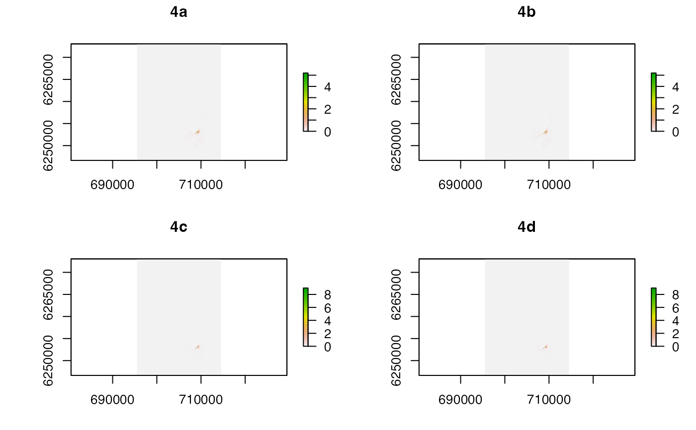

This function is the back-end of the acoustic-centroid (AC) and acoustic-centroid depth-contour (ACDC) algorithms.
.acs( acoustics, archival = NULL, step = 120, round_ts = TRUE, plot_ts = TRUE, bathy, map = NULL, detection_centroids, detection_kernels = NULL, detection_kernels_overlap = NULL, detection_time_window = 5, mobility, calc_depth_error = function(...) matrix(c(-2.5, 2.5), nrow = 2), normalise = FALSE, chunk = 1L, save_record_spatial = 1L, write_record_spatial_for_pf = NULL, save_args = TRUE, verbose = TRUE, con = "", progress = 1L, check = TRUE )
Arguments
| acoustics | A dataframe that contains passive acoustic telemetry detection time series for a specific individual (see |
|---|---|
| archival | For the ACDC algorithm, |
| step | A number that defines the time step length (s) between consecutive detections. If |
| round_ts | A logical input that defines whether or not to round the |
| plot_ts | A logical input that defines whether or not to the plot movement series before the algorithm is initiated. |
| bathy | A |
| map | (optional) A blank |
| detection_centroids | A list of detection centroids, with one element for each number from |
| detection_kernels | A named list of detection probability kernels, from |
| detection_kernels_overlap | (optional) A named list (the `list_by_receiver' element from |
| detection_time_window | (optional) A number that defines the maximum duration (s) between consecutive detections at different receivers such that they can be said to have occurred at `effectively the same time'. This indicates that the same transmission was detected by multiple receivers. If |
| mobility | A number that defines the distance (m) that an individual could move in the time steps between acoustic detections (see also |
| calc_depth_error | In the ACDC algorithm, |
| normalise | A logical variable that defines whether or not to normalise the map of possible locations at each time step. In both cases, at each time step the possible locations of the individual are scaled so that the most probable locations have a score of 1 and other scores vary between 0--1. If |
| chunk | An integer that defines the chunk ID (from |
| save_record_spatial | An integer vector that defines the time steps for which to save a record of the spatial information from each time step. |
| write_record_spatial_for_pf | (optional) A named list, passed to |
| save_args | A logical input that defines whether or not to include a list of function arguments in the outputs. This can be switched off if the function is applied iteratively. |
| verbose | A logical variable that defines whether or not to print messages to the console or to file to relay function progress. If |
| con | If |
| progress | (optional) If the algorithm is implemented step-wise, |
| check | A logical input that defines whether or not to check function inputs. This can be switched off to improve computation time when the function is applied iteratively or via a front-end function (e.g., |
Value
The function returns an acdc_record-class object with the following elements: `map', `record', `time', `args', `chunks' and `simplify'. The main output element is the `map' RasterLayer that shows where the individual could have spent more or less time over the duration of the movement time series. The `record' element records time-specific information on the possible locations of the individual, and can be used to plot maps of specific time points or to produce animations (for the time steps specified by save_record_spatial). The `time' element is a dataframe that defines the times of sequential stages in the algorithm's progression, providing a record of computation time. The `args' element is a named list of user inputs that record the parameters used to generate the outputs (if save_args = TRUE, otherwise the `args' element is NULL).
See also
The front-end functions ac and acdc call .acs_pl which in turn calls this function. acs_setup_centroids defines the detection centroids required by this function. acs_setup_mobility is used to examine the assumption of the constant `mobility' parameter. acs_setup_detection_kernels produces detection probability kernels for incorporation into the function. For calls via ac and acdc, acdc_simplify simplifies the outputs and acdc_plot_record and acdc_animate_record visualise the results.
Author
Edward Lavender
Examples
#### Step (1) Prepare study site grid # Grid resolution needs to be sufficiently high to capture detection probability/movement # And sufficiently low to minimise computational costs blank <- raster::raster(raster::extent(dat_gebco), res = c(75, 75)) gebco <- raster::resample(dat_gebco, blank) #### Step (2) Implement setup_acdc_*() steps # ... Define detection centroids required for algorithm(s) (see acs_setup_centroids()) #### Step (3) Prepare movement time series for algorithm(s) # Add required columns to dataframes: dat_acoustics$timestamp_num <- as.numeric(dat_acoustics$timestamp) dat_archival$timestamp_num <- as.numeric(dat_archival$timestamp) # Focus on an example individual id <- 25 acc <- dat_acoustics[dat_acoustics$individual_id == id, ] arc <- dat_archival[dat_archival$individual_id == id, ] # Focus on the subset of data for which we have both acoustic and archival detections acc <- acc[acc$timestamp >= min(arc$timestamp) - 2*60 & acc$timestamp <= max(arc$timestamp) + 2*60, ] arc <- arc[arc$timestamp >= min(acc$timestamp) - 2*60 & arc$timestamp <= max(acc$timestamp) + 2*60, ] # We'll focus on a one day period with overlapping detection/depth time series for speed end <- as.POSIXct("2016-03-18") acc <- acc[acc$timestamp <= end, ] arc <- arc[arc$timestamp <= end, ] arc <- arc[arc$timestamp >= min(acc$timestamp) - 2*60 & arc$timestamp <= max(acc$timestamp) + 2*60, ] #### Example (1) Implement AC algorithm with default arguments out_acdc_1 <- flapper:::.acs(acoustics = acc, bathy = gebco, detection_centroids = dat_centroids, mobility = 200 )#> flapper::.acs() called (@ 2021-12-02 11:51:22)... #> ... Checking user inputs...#> | | | 0%... Initiating algorithm: moving over acoustic and internal ('archival') time steps... #> ... On acoustic time step ('timestep_detection') 1. #> ... ... On internal time step ('timestep_archival') 1. #> | | | 1%... On acoustic time step ('timestep_detection') 2. #> ... ... On internal time step ('timestep_archival') 1. #> | |= | 1%... On acoustic time step ('timestep_detection') 3. #> ... ... On internal time step ('timestep_archival') 1. #> | |= | 2%... On acoustic time step ('timestep_detection') 4. #> ... ... On internal time step ('timestep_archival') 1. #> ... ... On internal time step ('timestep_archival') 2. #> ... ... ... Acoustic centroid is expanding... #> | |== | 3%... On acoustic time step ('timestep_detection') 5. #> ... ... On internal time step ('timestep_archival') 1. #> ... On acoustic time step ('timestep_detection') 6. #> ... ... On internal time step ('timestep_archival') 1. #> | |=== | 4%... On acoustic time step ('timestep_detection') 7. #> ... ... On internal time step ('timestep_archival') 1. #> ... ... On internal time step ('timestep_archival') 2. #> ... ... ... Acoustic centroid is expanding... #> | |=== | 5%... On acoustic time step ('timestep_detection') 8. #> ... ... On internal time step ('timestep_archival') 1. #> | |==== | 5%... On acoustic time step ('timestep_detection') 9. #> ... ... On internal time step ('timestep_archival') 1. #> | |==== | 6%... On acoustic time step ('timestep_detection') 10. #> ... ... On internal time step ('timestep_archival') 1. #> | |===== | 7%... On acoustic time step ('timestep_detection') 11. #> ... ... On internal time step ('timestep_archival') 1. #> ... On acoustic time step ('timestep_detection') 12. #> ... ... On internal time step ('timestep_archival') 1. #> | |===== | 8%... On acoustic time step ('timestep_detection') 13. #> ... ... On internal time step ('timestep_archival') 1. #> | |====== | 8%... On acoustic time step ('timestep_detection') 14. #> ... ... On internal time step ('timestep_archival') 1. #> | |====== | 9%... On acoustic time step ('timestep_detection') 15. #> ... ... On internal time step ('timestep_archival') 1. #> | |======= | 10%... On acoustic time step ('timestep_detection') 16. #> ... ... On internal time step ('timestep_archival') 1. #> ... On acoustic time step ('timestep_detection') 17. #> ... ... On internal time step ('timestep_archival') 1. #> | |======== | 11%... On acoustic time step ('timestep_detection') 18. #> ... ... On internal time step ('timestep_archival') 1. #> | |======== | 12%... On acoustic time step ('timestep_detection') 19. #> ... ... On internal time step ('timestep_archival') 1. #> | |========= | 12%... On acoustic time step ('timestep_detection') 20. #> ... ... On internal time step ('timestep_archival') 1. #> | |========= | 13%... On acoustic time step ('timestep_detection') 21. #> ... ... On internal time step ('timestep_archival') 1. #> | |========== | 14%... On acoustic time step ('timestep_detection') 22. #> ... ... On internal time step ('timestep_archival') 1. #> ... On acoustic time step ('timestep_detection') 23. #> ... ... On internal time step ('timestep_archival') 1. #> ... ... On internal time step ('timestep_archival') 2. #> ... ... ... Acoustic centroid is expanding... #> ... ... On internal time step ('timestep_archival') 3. #> ... ... ... Acoustic centroid is constant ... #> | |=========== | 15%... On acoustic time step ('timestep_detection') 24. #> ... ... On internal time step ('timestep_archival') 1. #> | |=========== | 16%... On acoustic time step ('timestep_detection') 25. #> ... ... On internal time step ('timestep_archival') 1. #> ... ... On internal time step ('timestep_archival') 2. #> ... ... On internal time step ('timestep_archival') 3. #> ... ... On internal time step ('timestep_archival') 4. #> ... ... On internal time step ('timestep_archival') 5. #> ... ... On internal time step ('timestep_archival') 6. #> ... ... On internal time step ('timestep_archival') 7. #> ... ... On internal time step ('timestep_archival') 8. #> ... ... On internal time step ('timestep_archival') 9. #> ... ... On internal time step ('timestep_archival') 10. #> ... On acoustic time step ('timestep_detection') 26. #> ... ... On internal time step ('timestep_archival') 1. #> | |============ | 17%... On acoustic time step ('timestep_detection') 27. #> ... ... On internal time step ('timestep_archival') 1. #> | |============ | 18%... On acoustic time step ('timestep_detection') 28. #> ... ... On internal time step ('timestep_archival') 1. #> | |============= | 18%... On acoustic time step ('timestep_detection') 29. #> ... ... On internal time step ('timestep_archival') 1. #> | |============= | 19%... On acoustic time step ('timestep_detection') 30. #> ... ... On internal time step ('timestep_archival') 1. #> | |============== | 20%... On acoustic time step ('timestep_detection') 31. #> ... ... On internal time step ('timestep_archival') 1. #> ... On acoustic time step ('timestep_detection') 32. #> ... ... On internal time step ('timestep_archival') 1. #> | |=============== | 21%... On acoustic time step ('timestep_detection') 33. #> ... ... On internal time step ('timestep_archival') 1. #> | |=============== | 22%... On acoustic time step ('timestep_detection') 34. #> ... ... On internal time step ('timestep_archival') 1. #> | |================ | 22%... On acoustic time step ('timestep_detection') 35. #> ... ... On internal time step ('timestep_archival') 1. #> | |================ | 23%... On acoustic time step ('timestep_detection') 36. #> ... ... On internal time step ('timestep_archival') 1. #> | |================ | 24%... On acoustic time step ('timestep_detection') 37. #> ... ... On internal time step ('timestep_archival') 1. #> | |================= | 24%... On acoustic time step ('timestep_detection') 38. #> ... ... On internal time step ('timestep_archival') 1. #> | |================= | 25%... On acoustic time step ('timestep_detection') 39. #> ... ... On internal time step ('timestep_archival') 1. #> | |================== | 25%... On acoustic time step ('timestep_detection') 40. #> ... ... On internal time step ('timestep_archival') 1. #> | |================== | 26%... On acoustic time step ('timestep_detection') 41. #> ... ... On internal time step ('timestep_archival') 1. #> | |=================== | 27%... On acoustic time step ('timestep_detection') 42. #> ... ... On internal time step ('timestep_archival') 1. #> ... On acoustic time step ('timestep_detection') 43. #> ... ... On internal time step ('timestep_archival') 1. #> | |==================== | 28%... On acoustic time step ('timestep_detection') 44. #> ... ... On internal time step ('timestep_archival') 1. #> | |==================== | 29%... On acoustic time step ('timestep_detection') 45. #> ... ... On internal time step ('timestep_archival') 1. #> ... ... On internal time step ('timestep_archival') 2. #> ... ... ... Acoustic centroid is expanding... #> | |===================== | 29%... On acoustic time step ('timestep_detection') 46. #> ... ... On internal time step ('timestep_archival') 1. #> | |===================== | 30%... On acoustic time step ('timestep_detection') 47. #> ... ... On internal time step ('timestep_archival') 1. #> | |====================== | 31%... On acoustic time step ('timestep_detection') 48. #> ... ... On internal time step ('timestep_archival') 1. #> ... On acoustic time step ('timestep_detection') 49. #> ... ... On internal time step ('timestep_archival') 1. #> | |====================== | 32%... On acoustic time step ('timestep_detection') 50. #> ... ... On internal time step ('timestep_archival') 1. #> | |======================= | 33%... On acoustic time step ('timestep_detection') 51. #> ... ... On internal time step ('timestep_archival') 1. #> ... On acoustic time step ('timestep_detection') 52. #> ... ... On internal time step ('timestep_archival') 1. #> | |======================== | 34%... On acoustic time step ('timestep_detection') 53. #> ... ... On internal time step ('timestep_archival') 1. #> | |======================== | 35%... On acoustic time step ('timestep_detection') 54. #> ... ... On internal time step ('timestep_archival') 1. #> | |========================= | 35%... On acoustic time step ('timestep_detection') 55. #> ... ... On internal time step ('timestep_archival') 1. #> | |========================= | 36%... On acoustic time step ('timestep_detection') 56. #> ... ... On internal time step ('timestep_archival') 1. #> | |========================== | 37%... On acoustic time step ('timestep_detection') 57. #> ... ... On internal time step ('timestep_archival') 1. #> ... On acoustic time step ('timestep_detection') 58. #> ... ... On internal time step ('timestep_archival') 1. #> | |=========================== | 38%... On acoustic time step ('timestep_detection') 59. #> ... ... On internal time step ('timestep_archival') 1. #> | |=========================== | 39%... On acoustic time step ('timestep_detection') 60. #> ... ... On internal time step ('timestep_archival') 1. #> ... On acoustic time step ('timestep_detection') 61. #> ... ... On internal time step ('timestep_archival') 1. #> ... ... On internal time step ('timestep_archival') 2. #> ... ... ... Acoustic centroid is expanding... #> | |============================ | 40%... On acoustic time step ('timestep_detection') 62. #> ... ... On internal time step ('timestep_archival') 1. #> | |============================ | 41%... On acoustic time step ('timestep_detection') 63. #> ... ... On internal time step ('timestep_archival') 1. #> | |============================= | 41%... On acoustic time step ('timestep_detection') 64. #> ... ... On internal time step ('timestep_archival') 1. #> | |============================= | 42%... On acoustic time step ('timestep_detection') 65. #> ... ... On internal time step ('timestep_archival') 1. #> | |============================== | 42%... On acoustic time step ('timestep_detection') 66. #> ... ... On internal time step ('timestep_archival') 1. #> | |============================== | 43%... On acoustic time step ('timestep_detection') 67. #> ... ... On internal time step ('timestep_archival') 1. #> | |=============================== | 44%... On acoustic time step ('timestep_detection') 68. #> ... ... On internal time step ('timestep_archival') 1. #> ... On acoustic time step ('timestep_detection') 69. #> ... ... On internal time step ('timestep_archival') 1. #> | |================================ | 45%... On acoustic time step ('timestep_detection') 70. #> ... ... On internal time step ('timestep_archival') 1. #> | |================================ | 46%... On acoustic time step ('timestep_detection') 71. #> ... ... On internal time step ('timestep_archival') 1. #> ... On acoustic time step ('timestep_detection') 72. #> ... ... On internal time step ('timestep_archival') 1. #> | |================================= | 47%... On acoustic time step ('timestep_detection') 73. #> ... ... On internal time step ('timestep_archival') 1. #> ... ... On internal time step ('timestep_archival') 2. #> ... ... ... Acoustic centroid is expanding... #> | |================================= | 48%... On acoustic time step ('timestep_detection') 74. #> ... ... On internal time step ('timestep_archival') 1. #> ... ... On internal time step ('timestep_archival') 2. #> ... ... ... Acoustic centroid is expanding... #> ... ... On internal time step ('timestep_archival') 3. #> ... ... ... Acoustic centroid is expanding... #> ... ... On internal time step ('timestep_archival') 4. #> ... ... ... Acoustic centroid is constant ... #> ... ... On internal time step ('timestep_archival') 5. #> ... ... ... Acoustic centroid is shrinking ... #> | |================================== | 48%... On acoustic time step ('timestep_detection') 75. #> ... ... On internal time step ('timestep_archival') 1. #> | |================================== | 49%... On acoustic time step ('timestep_detection') 76. #> ... ... On internal time step ('timestep_archival') 1. #> | |=================================== | 50%... On acoustic time step ('timestep_detection') 77. #> ... ... On internal time step ('timestep_archival') 1. #> ... On acoustic time step ('timestep_detection') 78. #> ... ... On internal time step ('timestep_archival') 1. #> | |==================================== | 51%... On acoustic time step ('timestep_detection') 79. #> ... ... On internal time step ('timestep_archival') 1. #> ... ... On internal time step ('timestep_archival') 2. #> ... ... ... Acoustic centroid is expanding... #> | |==================================== | 52%... On acoustic time step ('timestep_detection') 80. #> ... ... On internal time step ('timestep_archival') 1. #> ... ... On internal time step ('timestep_archival') 2. #> ... ... On internal time step ('timestep_archival') 3. #> ... ... On internal time step ('timestep_archival') 4. #> ... ... On internal time step ('timestep_archival') 5. #> ... ... On internal time step ('timestep_archival') 6. #> ... ... On internal time step ('timestep_archival') 7. #> ... ... On internal time step ('timestep_archival') 8. #> ... ... On internal time step ('timestep_archival') 9. #> ... ... On internal time step ('timestep_archival') 10. #> | |===================================== | 52%... On acoustic time step ('timestep_detection') 81. #> ... ... On internal time step ('timestep_archival') 1. #> | |===================================== | 53%... On acoustic time step ('timestep_detection') 82. #> ... ... On internal time step ('timestep_archival') 1. #> ... ... On internal time step ('timestep_archival') 2. #> ... ... ... Acoustic centroid is expanding... #> | |====================================== | 54%... On acoustic time step ('timestep_detection') 83. #> ... ... On internal time step ('timestep_archival') 1. #> ... ... On internal time step ('timestep_archival') 2. #> ... ... ... Acoustic centroid is expanding... #> ... ... On internal time step ('timestep_archival') 3. #> ... ... ... Acoustic centroid is constant ... #> ... On acoustic time step ('timestep_detection') 84. #> ... ... On internal time step ('timestep_archival') 1. #> ... ... On internal time step ('timestep_archival') 2. #> ... ... ... Acoustic centroid is expanding... #> | |====================================== | 55%... On acoustic time step ('timestep_detection') 85. #> ... ... On internal time step ('timestep_archival') 1. #> | |======================================= | 56%... On acoustic time step ('timestep_detection') 86. #> ... ... On internal time step ('timestep_archival') 1. #> ... ... On internal time step ('timestep_archival') 2. #> ... ... ... Acoustic centroid is expanding... #> ... On acoustic time step ('timestep_detection') 87. #> ... ... On internal time step ('timestep_archival') 1. #> | |======================================== | 57%... On acoustic time step ('timestep_detection') 88. #> ... ... On internal time step ('timestep_archival') 1. #> | |======================================== | 58%... On acoustic time step ('timestep_detection') 89. #> ... ... On internal time step ('timestep_archival') 1. #> | |========================================= | 58%... On acoustic time step ('timestep_detection') 90. #> ... ... On internal time step ('timestep_archival') 1. #> | |========================================= | 59%... On acoustic time step ('timestep_detection') 91. #> ... ... On internal time step ('timestep_archival') 1. #> | |========================================== | 59%... On acoustic time step ('timestep_detection') 92. #> ... ... On internal time step ('timestep_archival') 1. #> | |========================================== | 60%... On acoustic time step ('timestep_detection') 93. #> ... ... On internal time step ('timestep_archival') 1. #> | |=========================================== | 61%... On acoustic time step ('timestep_detection') 94. #> ... ... On internal time step ('timestep_archival') 1. #> ... On acoustic time step ('timestep_detection') 95. #> ... ... On internal time step ('timestep_archival') 1. #> | |=========================================== | 62%... On acoustic time step ('timestep_detection') 96. #> ... ... On internal time step ('timestep_archival') 1. #> | |============================================ | 63%... On acoustic time step ('timestep_detection') 97. #> ... ... On internal time step ('timestep_archival') 1. #> ... On acoustic time step ('timestep_detection') 98. #> ... ... On internal time step ('timestep_archival') 1. #> | |============================================= | 64%... On acoustic time step ('timestep_detection') 99. #> ... ... On internal time step ('timestep_archival') 1. #> | |============================================= | 65%... On acoustic time step ('timestep_detection') 100. #> ... ... On internal time step ('timestep_archival') 1. #> | |============================================== | 65%... On acoustic time step ('timestep_detection') 101. #> ... ... On internal time step ('timestep_archival') 1. #> | |============================================== | 66%... On acoustic time step ('timestep_detection') 102. #> ... ... On internal time step ('timestep_archival') 1. #> | |=============================================== | 67%... On acoustic time step ('timestep_detection') 103. #> ... ... On internal time step ('timestep_archival') 1. #> ... On acoustic time step ('timestep_detection') 104. #> ... ... On internal time step ('timestep_archival') 1. #> | |================================================ | 68%... On acoustic time step ('timestep_detection') 105. #> ... ... On internal time step ('timestep_archival') 1. #> | |================================================ | 69%... On acoustic time step ('timestep_detection') 106. #> ... ... On internal time step ('timestep_archival') 1. #> ... On acoustic time step ('timestep_detection') 107. #> ... ... On internal time step ('timestep_archival') 1. #> | |================================================= | 70%... On acoustic time step ('timestep_detection') 108. #> ... ... On internal time step ('timestep_archival') 1. #> | |================================================= | 71%... On acoustic time step ('timestep_detection') 109. #> ... ... On internal time step ('timestep_archival') 1. #> | |================================================== | 71%... On acoustic time step ('timestep_detection') 110. #> ... ... On internal time step ('timestep_archival') 1. #> | |================================================== | 72%... On acoustic time step ('timestep_detection') 111. #> ... ... On internal time step ('timestep_archival') 1. #> | |=================================================== | 73%... On acoustic time step ('timestep_detection') 112. #> ... ... On internal time step ('timestep_archival') 1. #> ... On acoustic time step ('timestep_detection') 113. #> ... ... On internal time step ('timestep_archival') 1. #> | |==================================================== | 74%... On acoustic time step ('timestep_detection') 114. #> ... ... On internal time step ('timestep_archival') 1. #> | |==================================================== | 75%... On acoustic time step ('timestep_detection') 115. #> ... ... On internal time step ('timestep_archival') 1. #> | |===================================================== | 75%... On acoustic time step ('timestep_detection') 116. #> ... ... On internal time step ('timestep_archival') 1. #> | |===================================================== | 76%... On acoustic time step ('timestep_detection') 117. #> ... ... On internal time step ('timestep_archival') 1. #> | |====================================================== | 76%... On acoustic time step ('timestep_detection') 118. #> ... ... On internal time step ('timestep_archival') 1. #> | |====================================================== | 77%... On acoustic time step ('timestep_detection') 119. #> ... ... On internal time step ('timestep_archival') 1. #> | |====================================================== | 78%... On acoustic time step ('timestep_detection') 120. #> ... ... On internal time step ('timestep_archival') 1. #> | |======================================================= | 78%... On acoustic time step ('timestep_detection') 121. #> ... ... On internal time step ('timestep_archival') 1. #> | |======================================================= | 79%... On acoustic time step ('timestep_detection') 122. #> ... ... On internal time step ('timestep_archival') 1. #> | |======================================================== | 80%... On acoustic time step ('timestep_detection') 123. #> ... ... On internal time step ('timestep_archival') 1. #> ... On acoustic time step ('timestep_detection') 124. #> ... ... On internal time step ('timestep_archival') 1. #> | |========================================================= | 81%... On acoustic time step ('timestep_detection') 125. #> ... ... On internal time step ('timestep_archival') 1. #> | |========================================================= | 82%... On acoustic time step ('timestep_detection') 126. #> ... ... On internal time step ('timestep_archival') 1. #> | |========================================================== | 82%... On acoustic time step ('timestep_detection') 127. #> ... ... On internal time step ('timestep_archival') 1. #> | |========================================================== | 83%... On acoustic time step ('timestep_detection') 128. #> ... ... On internal time step ('timestep_archival') 1. #> | |=========================================================== | 84%... On acoustic time step ('timestep_detection') 129. #> ... ... On internal time step ('timestep_archival') 1. #> ... On acoustic time step ('timestep_detection') 130. #> ... ... On internal time step ('timestep_archival') 1. #> | |=========================================================== | 85%... On acoustic time step ('timestep_detection') 131. #> ... ... On internal time step ('timestep_archival') 1. #> ... ... On internal time step ('timestep_archival') 2. #> ... ... ... Acoustic centroid is expanding... #> ... ... On internal time step ('timestep_archival') 3. #> ... ... ... Acoustic centroid is expanding... #> ... ... On internal time step ('timestep_archival') 4. #> ... ... ... Acoustic centroid is expanding... #> ... ... On internal time step ('timestep_archival') 5. #> ... ... ... Acoustic centroid is expanding... #> ... ... On internal time step ('timestep_archival') 6. #> ... ... ... Acoustic centroid is expanding... #> ... ... On internal time step ('timestep_archival') 7. #> ... ... ... Acoustic centroid is expanding... #> ... ... On internal time step ('timestep_archival') 8. #> ... ... ... Acoustic centroid is expanding... #> ... ... On internal time step ('timestep_archival') 9. #> ... ... ... Acoustic centroid is expanding... #> ... ... On internal time step ('timestep_archival') 10. #> ... ... ... Acoustic centroid is expanding... #> ... ... On internal time step ('timestep_archival') 11. #> ... ... ... Acoustic centroid is expanding... #> ... ... On internal time step ('timestep_archival') 12. #> ... ... ... Acoustic centroid is expanding... #> ... ... On internal time step ('timestep_archival') 13. #> ... ... ... Acoustic centroid is expanding... #> ... ... On internal time step ('timestep_archival') 14. #> ... ... ... Acoustic centroid is expanding... #> ... ... On internal time step ('timestep_archival') 15. #> ... ... ... Acoustic centroid is expanding... #> ... ... On internal time step ('timestep_archival') 16. #> ... ... ... Acoustic centroid is expanding... #> ... ... On internal time step ('timestep_archival') 17. #> ... ... ... Acoustic centroid is expanding... #> ... ... On internal time step ('timestep_archival') 18. #> ... ... ... Acoustic centroid is expanding... #> ... ... On internal time step ('timestep_archival') 19. #> ... ... ... Acoustic centroid is expanding... #> ... ... On internal time step ('timestep_archival') 20. #> ... ... ... Acoustic centroid is expanding... #> ... ... On internal time step ('timestep_archival') 21. #> ... ... ... Acoustic centroid is expanding... #> ... ... On internal time step ('timestep_archival') 22. #> ... ... ... Acoustic centroid is expanding... #> ... ... On internal time step ('timestep_archival') 23. #> ... ... ... Acoustic centroid is expanding... #> ... ... On internal time step ('timestep_archival') 24. #> ... ... ... Acoustic centroid is expanding... #> ... ... On internal time step ('timestep_archival') 25. #> ... ... ... Acoustic centroid is expanding... #> ... ... On internal time step ('timestep_archival') 26. #> ... ... ... Acoustic centroid is expanding... #> ... ... On internal time step ('timestep_archival') 27. #> ... ... ... Acoustic centroid is expanding... #> ... ... On internal time step ('timestep_archival') 28. #> ... ... ... Acoustic centroid is expanding... #> ... ... On internal time step ('timestep_archival') 29. #> ... ... ... Acoustic centroid is expanding... #> ... ... On internal time step ('timestep_archival') 30. #> ... ... ... Acoustic centroid is expanding... #> ... ... On internal time step ('timestep_archival') 31. #> ... ... ... Acoustic centroid is expanding... #> ... ... On internal time step ('timestep_archival') 32. #> ... ... ... Acoustic centroid is expanding... #> ... ... On internal time step ('timestep_archival') 33. #> ... ... ... Acoustic centroid is expanding... #> ... ... On internal time step ('timestep_archival') 34. #> ... ... ... Acoustic centroid is expanding... #> ... ... On internal time step ('timestep_archival') 35. #> ... ... ... Acoustic centroid is expanding... #> ... ... On internal time step ('timestep_archival') 36. #> ... ... ... Acoustic centroid is expanding... #> ... ... On internal time step ('timestep_archival') 37. #> ... ... ... Acoustic centroid is expanding... #> ... ... On internal time step ('timestep_archival') 38. #> ... ... ... Acoustic centroid is expanding... #> ... ... On internal time step ('timestep_archival') 39. #> ... ... ... Acoustic centroid is expanding... #> ... ... On internal time step ('timestep_archival') 40. #> ... ... ... Acoustic centroid is expanding... #> ... ... On internal time step ('timestep_archival') 41. #> ... ... ... Acoustic centroid is expanding... #> ... ... On internal time step ('timestep_archival') 42. #> ... ... ... Acoustic centroid is expanding... #> ... ... On internal time step ('timestep_archival') 43. #> ... ... ... Acoustic centroid is expanding... #> ... ... On internal time step ('timestep_archival') 44. #> ... ... ... Acoustic centroid is expanding... #> ... ... On internal time step ('timestep_archival') 45. #> ... ... ... Acoustic centroid is expanding... #> ... ... On internal time step ('timestep_archival') 46. #> ... ... ... Acoustic centroid is shrinking ... #> ... ... On internal time step ('timestep_archival') 47. #> ... ... ... Acoustic centroid is shrinking ... #> ... ... On internal time step ('timestep_archival') 48. #> ... ... ... Acoustic centroid is shrinking ... #> ... ... On internal time step ('timestep_archival') 49. #> ... ... ... Acoustic centroid is shrinking ... #> ... ... On internal time step ('timestep_archival') 50. #> ... ... ... Acoustic centroid is shrinking ... #> ... ... On internal time step ('timestep_archival') 51. #> ... ... ... Acoustic centroid is shrinking ... #> ... ... On internal time step ('timestep_archival') 52. #> ... ... ... Acoustic centroid is shrinking ... #> ... ... On internal time step ('timestep_archival') 53. #> ... ... ... Acoustic centroid is shrinking ... #> ... ... On internal time step ('timestep_archival') 54. #> ... ... ... Acoustic centroid is shrinking ... #> ... ... On internal time step ('timestep_archival') 55. #> ... ... ... Acoustic centroid is shrinking ... #> ... ... On internal time step ('timestep_archival') 56. #> ... ... ... Acoustic centroid is shrinking ... #> ... ... On internal time step ('timestep_archival') 57. #> ... ... ... Acoustic centroid is shrinking ... #> ... ... On internal time step ('timestep_archival') 58. #> ... ... ... Acoustic centroid is shrinking ... #> ... ... On internal time step ('timestep_archival') 59. #> ... ... ... Acoustic centroid is shrinking ... #> ... ... On internal time step ('timestep_archival') 60. #> ... ... ... Acoustic centroid is shrinking ... #> ... ... On internal time step ('timestep_archival') 61. #> ... ... ... Acoustic centroid is shrinking ... #> ... ... On internal time step ('timestep_archival') 62. #> ... ... ... Acoustic centroid is shrinking ... #> ... ... On internal time step ('timestep_archival') 63. #> ... ... ... Acoustic centroid is shrinking ... #> ... ... On internal time step ('timestep_archival') 64. #> ... ... ... Acoustic centroid is shrinking ... #> ... ... On internal time step ('timestep_archival') 65. #> ... ... ... Acoustic centroid is shrinking ... #> ... ... On internal time step ('timestep_archival') 66. #> ... ... ... Acoustic centroid is shrinking ... #> ... ... On internal time step ('timestep_archival') 67. #> ... ... ... Acoustic centroid is shrinking ... #> ... ... On internal time step ('timestep_archival') 68. #> ... ... ... Acoustic centroid is shrinking ... #> ... ... On internal time step ('timestep_archival') 69. #> ... ... ... Acoustic centroid is shrinking ... #> ... ... On internal time step ('timestep_archival') 70. #> ... ... ... Acoustic centroid is shrinking ... #> ... ... On internal time step ('timestep_archival') 71. #> ... ... ... Acoustic centroid is shrinking ... #> ... ... On internal time step ('timestep_archival') 72. #> ... ... ... Acoustic centroid is shrinking ... #> ... ... On internal time step ('timestep_archival') 73. #> ... ... ... Acoustic centroid is shrinking ... #> ... ... On internal time step ('timestep_archival') 74. #> ... ... ... Acoustic centroid is shrinking ... #> ... ... On internal time step ('timestep_archival') 75. #> ... ... ... Acoustic centroid is shrinking ... #> ... ... On internal time step ('timestep_archival') 76. #> ... ... ... Acoustic centroid is shrinking ... #> ... ... On internal time step ('timestep_archival') 77. #> ... ... ... Acoustic centroid is shrinking ... #> ... ... On internal time step ('timestep_archival') 78. #> ... ... ... Acoustic centroid is shrinking ... #> ... ... On internal time step ('timestep_archival') 79. #> ... ... ... Acoustic centroid is shrinking ... #> ... ... On internal time step ('timestep_archival') 80. #> ... ... ... Acoustic centroid is shrinking ... #> ... ... On internal time step ('timestep_archival') 81. #> ... ... ... Acoustic centroid is shrinking ... #> ... ... On internal time step ('timestep_archival') 82. #> ... ... ... Acoustic centroid is shrinking ... #> ... ... On internal time step ('timestep_archival') 83. #> ... ... ... Acoustic centroid is shrinking ... #> ... ... On internal time step ('timestep_archival') 84. #> ... ... ... Acoustic centroid is shrinking ... #> ... ... On internal time step ('timestep_archival') 85. #> ... ... ... Acoustic centroid is shrinking ... #> ... ... On internal time step ('timestep_archival') 86. #> ... ... ... Acoustic centroid is shrinking ... #> ... ... On internal time step ('timestep_archival') 87. #> ... ... ... Acoustic centroid is shrinking ... #> ... ... On internal time step ('timestep_archival') 88. #> ... ... ... Acoustic centroid is shrinking ... #> | |============================================================ | 86%... On acoustic time step ('timestep_detection') 132. #> ... ... On internal time step ('timestep_archival') 1. #> ... ... On internal time step ('timestep_archival') 2. #> ... ... ... Acoustic centroid is expanding... #> ... On acoustic time step ('timestep_detection') 133. #> ... ... On internal time step ('timestep_archival') 1. #> | |============================================================= | 87%... On acoustic time step ('timestep_detection') 134. #> ... ... On internal time step ('timestep_archival') 1. #> | |============================================================= | 88%... On acoustic time step ('timestep_detection') 135. #> ... ... On internal time step ('timestep_archival') 1. #> | |============================================================== | 88%... On acoustic time step ('timestep_detection') 136. #> ... ... On internal time step ('timestep_archival') 1. #> | |============================================================== | 89%... On acoustic time step ('timestep_detection') 137. #> ... ... On internal time step ('timestep_archival') 1. #> ... ... On internal time step ('timestep_archival') 2. #> ... ... ... Acoustic centroid is expanding... #> | |=============================================================== | 90%... On acoustic time step ('timestep_detection') 138. #> ... ... On internal time step ('timestep_archival') 1. #> ... On acoustic time step ('timestep_detection') 139. #> ... ... On internal time step ('timestep_archival') 1. #> | |================================================================ | 91%... On acoustic time step ('timestep_detection') 140. #> ... ... On internal time step ('timestep_archival') 1. #> | |================================================================ | 92%... On acoustic time step ('timestep_detection') 141. #> ... ... On internal time step ('timestep_archival') 1. #> | |================================================================= | 92%... On acoustic time step ('timestep_detection') 142. #> ... ... On internal time step ('timestep_archival') 1. #> | |================================================================= | 93%... On acoustic time step ('timestep_detection') 143. #> ... ... On internal time step ('timestep_archival') 1. #> ... On acoustic time step ('timestep_detection') 144. #> ... ... On internal time step ('timestep_archival') 1. #> | |================================================================== | 94%... On acoustic time step ('timestep_detection') 145. #> ... ... On internal time step ('timestep_archival') 1. #> | |================================================================== | 95%... On acoustic time step ('timestep_detection') 146. #> ... ... On internal time step ('timestep_archival') 1. #> | |=================================================================== | 95%... On acoustic time step ('timestep_detection') 147. #> ... ... On internal time step ('timestep_archival') 1. #> ... ... On internal time step ('timestep_archival') 2. #> | |=================================================================== | 96%... On acoustic time step ('timestep_detection') 148. #> ... ... On internal time step ('timestep_archival') 1. #> | |==================================================================== | 97%... On acoustic time step ('timestep_detection') 149. #> ... ... On internal time step ('timestep_archival') 1. #> ... On acoustic time step ('timestep_detection') 150. #> ... ... On internal time step ('timestep_archival') 1. #> | |===================================================================== | 98%... On acoustic time step ('timestep_detection') 151. #> ... ... On internal time step ('timestep_archival') 1. #> | |===================================================================== | 99%... On acoustic time step ('timestep_detection') 152. #> ... ... On internal time step ('timestep_archival') 1. #> | |======================================================================| 99%... On acoustic time step ('timestep_detection') 153. #> ... ... On internal time step ('timestep_archival') 1. #> | |======================================================================| 100% #> ... Movement over acoustic and internal ('archival') time steps has been completed. #> ... flapper::.acs() call completed (@ 2021-12-02 11:51:29) after ~0.1 minutes.#### Example (2) Implement ACDC algorithm with default arguments out_acdc_2 <- flapper:::.acs(acoustics = acc, archival = arc, bathy = gebco, detection_centroids = dat_centroids, mobility = 200, calc_depth_error = function(...) matrix(c(-2.5, 2.5), nrow = 2) )#> flapper::.acs() called (@ 2021-12-02 11:51:29)... #> ... Checking user inputs...#>#> | | | 0%... Initiating algorithm: moving over acoustic and internal ('archival') time steps... #> ... On acoustic time step ('timestep_detection') 1. #> ... ... On internal time step ('timestep_archival') 1. #> | | | 1%... On acoustic time step ('timestep_detection') 2. #> ... ... On internal time step ('timestep_archival') 1. #> | |= | 1%... On acoustic time step ('timestep_detection') 3. #> ... ... On internal time step ('timestep_archival') 1. #> | |= | 2%... On acoustic time step ('timestep_detection') 4. #> ... ... On internal time step ('timestep_archival') 1. #> ... ... On internal time step ('timestep_archival') 2. #> ... ... ... Acoustic centroid is expanding... #> | |== | 3%... On acoustic time step ('timestep_detection') 5. #> ... ... On internal time step ('timestep_archival') 1. #> ... On acoustic time step ('timestep_detection') 6. #> ... ... On internal time step ('timestep_archival') 1. #> | |=== | 4%... On acoustic time step ('timestep_detection') 7. #> ... ... On internal time step ('timestep_archival') 1. #> ... ... On internal time step ('timestep_archival') 2. #> ... ... ... Acoustic centroid is expanding... #> | |=== | 5%... On acoustic time step ('timestep_detection') 8. #> ... ... On internal time step ('timestep_archival') 1. #> | |==== | 5%... On acoustic time step ('timestep_detection') 9. #> ... ... On internal time step ('timestep_archival') 1. #> | |==== | 6%... On acoustic time step ('timestep_detection') 10. #> ... ... On internal time step ('timestep_archival') 1. #> | |===== | 7%... On acoustic time step ('timestep_detection') 11. #> ... ... On internal time step ('timestep_archival') 1. #> ... On acoustic time step ('timestep_detection') 12. #> ... ... On internal time step ('timestep_archival') 1. #> | |===== | 8%... On acoustic time step ('timestep_detection') 13. #> ... ... On internal time step ('timestep_archival') 1. #> | |====== | 8%... On acoustic time step ('timestep_detection') 14. #> ... ... On internal time step ('timestep_archival') 1. #> | |====== | 9%... On acoustic time step ('timestep_detection') 15. #> ... ... On internal time step ('timestep_archival') 1. #> | |======= | 10%... On acoustic time step ('timestep_detection') 16. #> ... ... On internal time step ('timestep_archival') 1. #> ... On acoustic time step ('timestep_detection') 17. #> ... ... On internal time step ('timestep_archival') 1. #> | |======== | 11%... On acoustic time step ('timestep_detection') 18. #> ... ... On internal time step ('timestep_archival') 1. #> | |======== | 12%... On acoustic time step ('timestep_detection') 19. #> ... ... On internal time step ('timestep_archival') 1. #> | |========= | 12%... On acoustic time step ('timestep_detection') 20. #> ... ... On internal time step ('timestep_archival') 1. #> | |========= | 13%... On acoustic time step ('timestep_detection') 21. #> ... ... On internal time step ('timestep_archival') 1. #> | |========== | 14%... On acoustic time step ('timestep_detection') 22. #> ... ... On internal time step ('timestep_archival') 1. #> ... On acoustic time step ('timestep_detection') 23. #> ... ... On internal time step ('timestep_archival') 1. #> ... ... On internal time step ('timestep_archival') 2. #> ... ... ... Acoustic centroid is expanding... #> ... ... On internal time step ('timestep_archival') 3. #> ... ... ... Acoustic centroid is constant ... #> | |=========== | 15%... On acoustic time step ('timestep_detection') 24. #> ... ... On internal time step ('timestep_archival') 1. #> | |=========== | 16%... On acoustic time step ('timestep_detection') 25. #> ... ... On internal time step ('timestep_archival') 1. #> ... ... On internal time step ('timestep_archival') 2. #> ... ... On internal time step ('timestep_archival') 3. #> ... ... On internal time step ('timestep_archival') 4. #> ... ... On internal time step ('timestep_archival') 5. #> ... ... On internal time step ('timestep_archival') 6. #> ... ... On internal time step ('timestep_archival') 7. #> ... ... On internal time step ('timestep_archival') 8. #> ... ... On internal time step ('timestep_archival') 9. #> ... ... On internal time step ('timestep_archival') 10. #> ... On acoustic time step ('timestep_detection') 26. #> ... ... On internal time step ('timestep_archival') 1. #> | |============ | 17%... On acoustic time step ('timestep_detection') 27. #> ... ... On internal time step ('timestep_archival') 1. #> | |============ | 18%... On acoustic time step ('timestep_detection') 28. #> ... ... On internal time step ('timestep_archival') 1. #> | |============= | 18%... On acoustic time step ('timestep_detection') 29. #> ... ... On internal time step ('timestep_archival') 1. #> | |============= | 19%... On acoustic time step ('timestep_detection') 30. #> ... ... On internal time step ('timestep_archival') 1. #> | |============== | 20%... On acoustic time step ('timestep_detection') 31. #> ... ... On internal time step ('timestep_archival') 1. #> ... On acoustic time step ('timestep_detection') 32. #> ... ... On internal time step ('timestep_archival') 1. #> | |=============== | 21%... On acoustic time step ('timestep_detection') 33. #> ... ... On internal time step ('timestep_archival') 1. #> | |=============== | 22%... On acoustic time step ('timestep_detection') 34. #> ... ... On internal time step ('timestep_archival') 1. #> | |================ | 22%... On acoustic time step ('timestep_detection') 35. #> ... ... On internal time step ('timestep_archival') 1. #> | |================ | 23%... On acoustic time step ('timestep_detection') 36. #> ... ... On internal time step ('timestep_archival') 1. #> | |================ | 24%... On acoustic time step ('timestep_detection') 37. #> ... ... On internal time step ('timestep_archival') 1. #> | |================= | 24%... On acoustic time step ('timestep_detection') 38. #> ... ... On internal time step ('timestep_archival') 1. #> | |================= | 25%... On acoustic time step ('timestep_detection') 39. #> ... ... On internal time step ('timestep_archival') 1. #> | |================== | 25%... On acoustic time step ('timestep_detection') 40. #> ... ... On internal time step ('timestep_archival') 1. #> | |================== | 26%... On acoustic time step ('timestep_detection') 41. #> ... ... On internal time step ('timestep_archival') 1. #> | |=================== | 27%... On acoustic time step ('timestep_detection') 42. #> ... ... On internal time step ('timestep_archival') 1. #> ... On acoustic time step ('timestep_detection') 43. #> ... ... On internal time step ('timestep_archival') 1. #> | |==================== | 28%... On acoustic time step ('timestep_detection') 44. #> ... ... On internal time step ('timestep_archival') 1. #> | |==================== | 29%... On acoustic time step ('timestep_detection') 45. #> ... ... On internal time step ('timestep_archival') 1. #> ... ... On internal time step ('timestep_archival') 2. #> ... ... ... Acoustic centroid is expanding... #> | |===================== | 29%... On acoustic time step ('timestep_detection') 46. #> ... ... On internal time step ('timestep_archival') 1. #> | |===================== | 30%... On acoustic time step ('timestep_detection') 47. #> ... ... On internal time step ('timestep_archival') 1. #> | |====================== | 31%... On acoustic time step ('timestep_detection') 48. #> ... ... On internal time step ('timestep_archival') 1. #> ... On acoustic time step ('timestep_detection') 49. #> ... ... On internal time step ('timestep_archival') 1. #> | |====================== | 32%... On acoustic time step ('timestep_detection') 50. #> ... ... On internal time step ('timestep_archival') 1. #> | |======================= | 33%... On acoustic time step ('timestep_detection') 51. #> ... ... On internal time step ('timestep_archival') 1. #> ... On acoustic time step ('timestep_detection') 52. #> ... ... On internal time step ('timestep_archival') 1. #> | |======================== | 34%... On acoustic time step ('timestep_detection') 53. #> ... ... On internal time step ('timestep_archival') 1. #> | |======================== | 35%... On acoustic time step ('timestep_detection') 54. #> ... ... On internal time step ('timestep_archival') 1. #> | |========================= | 35%... On acoustic time step ('timestep_detection') 55. #> ... ... On internal time step ('timestep_archival') 1. #> | |========================= | 36%... On acoustic time step ('timestep_detection') 56. #> ... ... On internal time step ('timestep_archival') 1. #> | |========================== | 37%... On acoustic time step ('timestep_detection') 57. #> ... ... On internal time step ('timestep_archival') 1. #> ... On acoustic time step ('timestep_detection') 58. #> ... ... On internal time step ('timestep_archival') 1. #> | |=========================== | 38%... On acoustic time step ('timestep_detection') 59. #> ... ... On internal time step ('timestep_archival') 1. #> | |=========================== | 39%... On acoustic time step ('timestep_detection') 60. #> ... ... On internal time step ('timestep_archival') 1. #> ... On acoustic time step ('timestep_detection') 61. #> ... ... On internal time step ('timestep_archival') 1. #> ... ... On internal time step ('timestep_archival') 2. #> ... ... ... Acoustic centroid is expanding... #> | |============================ | 40%... On acoustic time step ('timestep_detection') 62. #> ... ... On internal time step ('timestep_archival') 1. #> | |============================ | 41%... On acoustic time step ('timestep_detection') 63. #> ... ... On internal time step ('timestep_archival') 1. #> | |============================= | 41%... On acoustic time step ('timestep_detection') 64. #> ... ... On internal time step ('timestep_archival') 1. #> | |============================= | 42%... On acoustic time step ('timestep_detection') 65. #> ... ... On internal time step ('timestep_archival') 1. #> | |============================== | 42%... On acoustic time step ('timestep_detection') 66. #> ... ... On internal time step ('timestep_archival') 1. #> | |============================== | 43%... On acoustic time step ('timestep_detection') 67. #> ... ... On internal time step ('timestep_archival') 1. #> | |=============================== | 44%... On acoustic time step ('timestep_detection') 68. #> ... ... On internal time step ('timestep_archival') 1. #> ... On acoustic time step ('timestep_detection') 69. #> ... ... On internal time step ('timestep_archival') 1. #> | |================================ | 45%... On acoustic time step ('timestep_detection') 70. #> ... ... On internal time step ('timestep_archival') 1. #> | |================================ | 46%... On acoustic time step ('timestep_detection') 71. #> ... ... On internal time step ('timestep_archival') 1. #> ... On acoustic time step ('timestep_detection') 72. #> ... ... On internal time step ('timestep_archival') 1. #> | |================================= | 47%... On acoustic time step ('timestep_detection') 73. #> ... ... On internal time step ('timestep_archival') 1. #> ... ... On internal time step ('timestep_archival') 2. #> ... ... ... Acoustic centroid is expanding... #> | |================================= | 48%... On acoustic time step ('timestep_detection') 74. #> ... ... On internal time step ('timestep_archival') 1. #> ... ... On internal time step ('timestep_archival') 2. #> ... ... ... Acoustic centroid is expanding... #> ... ... On internal time step ('timestep_archival') 3. #> ... ... ... Acoustic centroid is expanding... #> ... ... On internal time step ('timestep_archival') 4. #> ... ... ... Acoustic centroid is constant ... #> ... ... On internal time step ('timestep_archival') 5. #> ... ... ... Acoustic centroid is shrinking ... #> | |================================== | 48%... On acoustic time step ('timestep_detection') 75. #> ... ... On internal time step ('timestep_archival') 1. #> | |================================== | 49%... On acoustic time step ('timestep_detection') 76. #> ... ... On internal time step ('timestep_archival') 1. #> | |=================================== | 50%... On acoustic time step ('timestep_detection') 77. #> ... ... On internal time step ('timestep_archival') 1. #> ... On acoustic time step ('timestep_detection') 78. #> ... ... On internal time step ('timestep_archival') 1. #> | |==================================== | 51%... On acoustic time step ('timestep_detection') 79. #> ... ... On internal time step ('timestep_archival') 1. #> ... ... On internal time step ('timestep_archival') 2. #> ... ... ... Acoustic centroid is expanding... #> | |==================================== | 52%... On acoustic time step ('timestep_detection') 80. #> ... ... On internal time step ('timestep_archival') 1. #> ... ... On internal time step ('timestep_archival') 2. #> ... ... On internal time step ('timestep_archival') 3. #> ... ... On internal time step ('timestep_archival') 4. #> ... ... On internal time step ('timestep_archival') 5. #> ... ... On internal time step ('timestep_archival') 6. #> ... ... On internal time step ('timestep_archival') 7. #> ... ... On internal time step ('timestep_archival') 8. #> ... ... On internal time step ('timestep_archival') 9. #> ... ... On internal time step ('timestep_archival') 10. #> | |===================================== | 52%... On acoustic time step ('timestep_detection') 81. #> ... ... On internal time step ('timestep_archival') 1. #> | |===================================== | 53%... On acoustic time step ('timestep_detection') 82. #> ... ... On internal time step ('timestep_archival') 1. #> ... ... On internal time step ('timestep_archival') 2. #> ... ... ... Acoustic centroid is expanding... #> | |====================================== | 54%... On acoustic time step ('timestep_detection') 83. #> ... ... On internal time step ('timestep_archival') 1. #> ... ... On internal time step ('timestep_archival') 2. #> ... ... ... Acoustic centroid is expanding... #> ... ... On internal time step ('timestep_archival') 3. #> ... ... ... Acoustic centroid is constant ... #> ... On acoustic time step ('timestep_detection') 84. #> ... ... On internal time step ('timestep_archival') 1. #> ... ... On internal time step ('timestep_archival') 2. #> ... ... ... Acoustic centroid is expanding... #> | |====================================== | 55%... On acoustic time step ('timestep_detection') 85. #> ... ... On internal time step ('timestep_archival') 1. #> | |======================================= | 56%... On acoustic time step ('timestep_detection') 86. #> ... ... On internal time step ('timestep_archival') 1. #> ... ... On internal time step ('timestep_archival') 2. #> ... ... ... Acoustic centroid is expanding... #> ... On acoustic time step ('timestep_detection') 87. #> ... ... On internal time step ('timestep_archival') 1. #> | |======================================== | 57%... On acoustic time step ('timestep_detection') 88. #> ... ... On internal time step ('timestep_archival') 1. #> | |======================================== | 58%... On acoustic time step ('timestep_detection') 89. #> ... ... On internal time step ('timestep_archival') 1. #> | |========================================= | 58%... On acoustic time step ('timestep_detection') 90. #> ... ... On internal time step ('timestep_archival') 1. #> | |========================================= | 59%... On acoustic time step ('timestep_detection') 91. #> ... ... On internal time step ('timestep_archival') 1. #> | |========================================== | 59%... On acoustic time step ('timestep_detection') 92. #> ... ... On internal time step ('timestep_archival') 1. #> | |========================================== | 60%... On acoustic time step ('timestep_detection') 93. #> ... ... On internal time step ('timestep_archival') 1. #> | |=========================================== | 61%... On acoustic time step ('timestep_detection') 94. #> ... ... On internal time step ('timestep_archival') 1. #> ... On acoustic time step ('timestep_detection') 95. #> ... ... On internal time step ('timestep_archival') 1. #> | |=========================================== | 62%... On acoustic time step ('timestep_detection') 96. #> ... ... On internal time step ('timestep_archival') 1. #> | |============================================ | 63%... On acoustic time step ('timestep_detection') 97. #> ... ... On internal time step ('timestep_archival') 1. #> ... On acoustic time step ('timestep_detection') 98. #> ... ... On internal time step ('timestep_archival') 1. #> | |============================================= | 64%... On acoustic time step ('timestep_detection') 99. #> ... ... On internal time step ('timestep_archival') 1. #> | |============================================= | 65%... On acoustic time step ('timestep_detection') 100. #> ... ... On internal time step ('timestep_archival') 1. #> | |============================================== | 65%... On acoustic time step ('timestep_detection') 101. #> ... ... On internal time step ('timestep_archival') 1. #> | |============================================== | 66%... On acoustic time step ('timestep_detection') 102. #> ... ... On internal time step ('timestep_archival') 1. #> | |=============================================== | 67%... On acoustic time step ('timestep_detection') 103. #> ... ... On internal time step ('timestep_archival') 1. #> ... On acoustic time step ('timestep_detection') 104. #> ... ... On internal time step ('timestep_archival') 1. #> | |================================================ | 68%... On acoustic time step ('timestep_detection') 105. #> ... ... On internal time step ('timestep_archival') 1. #> | |================================================ | 69%... On acoustic time step ('timestep_detection') 106. #> ... ... On internal time step ('timestep_archival') 1. #> ... On acoustic time step ('timestep_detection') 107. #> ... ... On internal time step ('timestep_archival') 1. #> | |================================================= | 70%... On acoustic time step ('timestep_detection') 108. #> ... ... On internal time step ('timestep_archival') 1. #> | |================================================= | 71%... On acoustic time step ('timestep_detection') 109. #> ... ... On internal time step ('timestep_archival') 1. #> | |================================================== | 71%... On acoustic time step ('timestep_detection') 110. #> ... ... On internal time step ('timestep_archival') 1. #> | |================================================== | 72%... On acoustic time step ('timestep_detection') 111. #> ... ... On internal time step ('timestep_archival') 1. #> | |=================================================== | 73%... On acoustic time step ('timestep_detection') 112. #> ... ... On internal time step ('timestep_archival') 1. #> ... On acoustic time step ('timestep_detection') 113. #> ... ... On internal time step ('timestep_archival') 1. #> | |==================================================== | 74%... On acoustic time step ('timestep_detection') 114. #> ... ... On internal time step ('timestep_archival') 1. #> | |==================================================== | 75%... On acoustic time step ('timestep_detection') 115. #> ... ... On internal time step ('timestep_archival') 1. #> | |===================================================== | 75%... On acoustic time step ('timestep_detection') 116. #> ... ... On internal time step ('timestep_archival') 1. #> | |===================================================== | 76%... On acoustic time step ('timestep_detection') 117. #> ... ... On internal time step ('timestep_archival') 1. #> | |====================================================== | 76%... On acoustic time step ('timestep_detection') 118. #> ... ... On internal time step ('timestep_archival') 1. #> | |====================================================== | 77%... On acoustic time step ('timestep_detection') 119. #> ... ... On internal time step ('timestep_archival') 1. #> | |====================================================== | 78%... On acoustic time step ('timestep_detection') 120. #> ... ... On internal time step ('timestep_archival') 1. #> | |======================================================= | 78%... On acoustic time step ('timestep_detection') 121. #> ... ... On internal time step ('timestep_archival') 1. #> | |======================================================= | 79%... On acoustic time step ('timestep_detection') 122. #> ... ... On internal time step ('timestep_archival') 1. #> | |======================================================== | 80%... On acoustic time step ('timestep_detection') 123. #> ... ... On internal time step ('timestep_archival') 1. #> ... On acoustic time step ('timestep_detection') 124. #> ... ... On internal time step ('timestep_archival') 1. #> | |========================================================= | 81%... On acoustic time step ('timestep_detection') 125. #> ... ... On internal time step ('timestep_archival') 1. #> | |========================================================= | 82%... On acoustic time step ('timestep_detection') 126. #> ... ... On internal time step ('timestep_archival') 1. #> | |========================================================== | 82%... On acoustic time step ('timestep_detection') 127. #> ... ... On internal time step ('timestep_archival') 1. #> | |========================================================== | 83%... On acoustic time step ('timestep_detection') 128. #> ... ... On internal time step ('timestep_archival') 1. #> | |=========================================================== | 84%... On acoustic time step ('timestep_detection') 129. #> ... ... On internal time step ('timestep_archival') 1. #> ... On acoustic time step ('timestep_detection') 130. #> ... ... On internal time step ('timestep_archival') 1. #> | |=========================================================== | 85%... On acoustic time step ('timestep_detection') 131. #> ... ... On internal time step ('timestep_archival') 1. #> ... ... On internal time step ('timestep_archival') 2. #> ... ... ... Acoustic centroid is expanding... #> ... ... On internal time step ('timestep_archival') 3. #> ... ... ... Acoustic centroid is expanding... #> ... ... On internal time step ('timestep_archival') 4. #> ... ... ... Acoustic centroid is expanding... #> ... ... On internal time step ('timestep_archival') 5. #> ... ... ... Acoustic centroid is expanding... #> ... ... On internal time step ('timestep_archival') 6. #> ... ... ... Acoustic centroid is expanding... #> ... ... On internal time step ('timestep_archival') 7. #> ... ... ... Acoustic centroid is expanding... #> ... ... On internal time step ('timestep_archival') 8. #> ... ... ... Acoustic centroid is expanding... #> ... ... On internal time step ('timestep_archival') 9. #> ... ... ... Acoustic centroid is expanding... #> ... ... On internal time step ('timestep_archival') 10. #> ... ... ... Acoustic centroid is expanding... #> ... ... On internal time step ('timestep_archival') 11. #> ... ... ... Acoustic centroid is expanding... #> ... ... On internal time step ('timestep_archival') 12. #> ... ... ... Acoustic centroid is expanding... #> ... ... On internal time step ('timestep_archival') 13. #> ... ... ... Acoustic centroid is expanding... #> ... ... On internal time step ('timestep_archival') 14. #> ... ... ... Acoustic centroid is expanding... #> ... ... On internal time step ('timestep_archival') 15. #> ... ... ... Acoustic centroid is expanding... #> ... ... On internal time step ('timestep_archival') 16. #> ... ... ... Acoustic centroid is expanding... #> ... ... On internal time step ('timestep_archival') 17. #> ... ... ... Acoustic centroid is expanding... #> ... ... On internal time step ('timestep_archival') 18. #> ... ... ... Acoustic centroid is expanding... #> ... ... On internal time step ('timestep_archival') 19. #> ... ... ... Acoustic centroid is expanding... #> ... ... On internal time step ('timestep_archival') 20. #> ... ... ... Acoustic centroid is expanding... #> ... ... On internal time step ('timestep_archival') 21. #> ... ... ... Acoustic centroid is expanding... #> ... ... On internal time step ('timestep_archival') 22. #> ... ... ... Acoustic centroid is expanding... #> ... ... On internal time step ('timestep_archival') 23. #> ... ... ... Acoustic centroid is expanding... #> ... ... On internal time step ('timestep_archival') 24. #> ... ... ... Acoustic centroid is expanding... #> ... ... On internal time step ('timestep_archival') 25. #> ... ... ... Acoustic centroid is expanding... #> ... ... On internal time step ('timestep_archival') 26. #> ... ... ... Acoustic centroid is expanding... #> ... ... On internal time step ('timestep_archival') 27. #> ... ... ... Acoustic centroid is expanding... #> ... ... On internal time step ('timestep_archival') 28. #> ... ... ... Acoustic centroid is expanding... #> ... ... On internal time step ('timestep_archival') 29. #> ... ... ... Acoustic centroid is expanding... #> ... ... On internal time step ('timestep_archival') 30. #> ... ... ... Acoustic centroid is expanding... #> ... ... On internal time step ('timestep_archival') 31. #> ... ... ... Acoustic centroid is expanding... #> ... ... On internal time step ('timestep_archival') 32. #> ... ... ... Acoustic centroid is expanding... #> ... ... On internal time step ('timestep_archival') 33. #> ... ... ... Acoustic centroid is expanding... #> ... ... On internal time step ('timestep_archival') 34. #> ... ... ... Acoustic centroid is expanding... #> ... ... On internal time step ('timestep_archival') 35. #> ... ... ... Acoustic centroid is expanding... #> ... ... On internal time step ('timestep_archival') 36. #> ... ... ... Acoustic centroid is expanding... #> ... ... On internal time step ('timestep_archival') 37. #> ... ... ... Acoustic centroid is expanding... #> ... ... On internal time step ('timestep_archival') 38. #> ... ... ... Acoustic centroid is expanding... #> ... ... On internal time step ('timestep_archival') 39. #> ... ... ... Acoustic centroid is expanding... #> ... ... On internal time step ('timestep_archival') 40. #> ... ... ... Acoustic centroid is expanding... #> ... ... On internal time step ('timestep_archival') 41. #> ... ... ... Acoustic centroid is expanding... #> ... ... On internal time step ('timestep_archival') 42. #> ... ... ... Acoustic centroid is expanding... #> ... ... On internal time step ('timestep_archival') 43. #> ... ... ... Acoustic centroid is expanding... #> ... ... On internal time step ('timestep_archival') 44. #> ... ... ... Acoustic centroid is expanding... #> ... ... On internal time step ('timestep_archival') 45. #> ... ... ... Acoustic centroid is expanding... #> ... ... On internal time step ('timestep_archival') 46. #> ... ... ... Acoustic centroid is shrinking ... #> ... ... On internal time step ('timestep_archival') 47. #> ... ... ... Acoustic centroid is shrinking ... #> ... ... On internal time step ('timestep_archival') 48. #> ... ... ... Acoustic centroid is shrinking ... #> ... ... On internal time step ('timestep_archival') 49. #> ... ... ... Acoustic centroid is shrinking ... #> ... ... On internal time step ('timestep_archival') 50. #> ... ... ... Acoustic centroid is shrinking ... #> ... ... On internal time step ('timestep_archival') 51. #> ... ... ... Acoustic centroid is shrinking ... #> ... ... On internal time step ('timestep_archival') 52. #> ... ... ... Acoustic centroid is shrinking ... #> ... ... On internal time step ('timestep_archival') 53. #> ... ... ... Acoustic centroid is shrinking ... #> ... ... On internal time step ('timestep_archival') 54. #> ... ... ... Acoustic centroid is shrinking ... #> ... ... On internal time step ('timestep_archival') 55. #> ... ... ... Acoustic centroid is shrinking ... #> ... ... On internal time step ('timestep_archival') 56. #> ... ... ... Acoustic centroid is shrinking ... #> ... ... On internal time step ('timestep_archival') 57. #> ... ... ... Acoustic centroid is shrinking ... #> ... ... On internal time step ('timestep_archival') 58. #> ... ... ... Acoustic centroid is shrinking ... #> ... ... On internal time step ('timestep_archival') 59. #> ... ... ... Acoustic centroid is shrinking ... #> ... ... On internal time step ('timestep_archival') 60. #> ... ... ... Acoustic centroid is shrinking ... #> ... ... On internal time step ('timestep_archival') 61. #> ... ... ... Acoustic centroid is shrinking ... #> ... ... On internal time step ('timestep_archival') 62. #> ... ... ... Acoustic centroid is shrinking ... #> ... ... On internal time step ('timestep_archival') 63. #> ... ... ... Acoustic centroid is shrinking ... #> ... ... On internal time step ('timestep_archival') 64. #> ... ... ... Acoustic centroid is shrinking ... #> ... ... On internal time step ('timestep_archival') 65. #> ... ... ... Acoustic centroid is shrinking ... #> ... ... On internal time step ('timestep_archival') 66. #> ... ... ... Acoustic centroid is shrinking ... #> ... ... On internal time step ('timestep_archival') 67. #> ... ... ... Acoustic centroid is shrinking ... #> ... ... On internal time step ('timestep_archival') 68. #> ... ... ... Acoustic centroid is shrinking ... #> ... ... On internal time step ('timestep_archival') 69. #> ... ... ... Acoustic centroid is shrinking ... #> ... ... On internal time step ('timestep_archival') 70. #> ... ... ... Acoustic centroid is shrinking ... #> ... ... On internal time step ('timestep_archival') 71. #> ... ... ... Acoustic centroid is shrinking ... #> ... ... On internal time step ('timestep_archival') 72. #> ... ... ... Acoustic centroid is shrinking ... #> ... ... On internal time step ('timestep_archival') 73. #> ... ... ... Acoustic centroid is shrinking ... #> ... ... On internal time step ('timestep_archival') 74. #> ... ... ... Acoustic centroid is shrinking ... #> ... ... On internal time step ('timestep_archival') 75. #> ... ... ... Acoustic centroid is shrinking ... #> ... ... On internal time step ('timestep_archival') 76. #> ... ... ... Acoustic centroid is shrinking ... #> ... ... On internal time step ('timestep_archival') 77. #> ... ... ... Acoustic centroid is shrinking ... #> ... ... On internal time step ('timestep_archival') 78. #> ... ... ... Acoustic centroid is shrinking ... #> ... ... On internal time step ('timestep_archival') 79. #> ... ... ... Acoustic centroid is shrinking ... #> ... ... On internal time step ('timestep_archival') 80. #> ... ... ... Acoustic centroid is shrinking ... #> ... ... On internal time step ('timestep_archival') 81. #> ... ... ... Acoustic centroid is shrinking ... #> ... ... On internal time step ('timestep_archival') 82. #> ... ... ... Acoustic centroid is shrinking ... #> ... ... On internal time step ('timestep_archival') 83. #> ... ... ... Acoustic centroid is shrinking ... #> ... ... On internal time step ('timestep_archival') 84. #> ... ... ... Acoustic centroid is shrinking ... #> ... ... On internal time step ('timestep_archival') 85. #> ... ... ... Acoustic centroid is shrinking ... #> ... ... On internal time step ('timestep_archival') 86. #> ... ... ... Acoustic centroid is shrinking ... #> ... ... On internal time step ('timestep_archival') 87. #> ... ... ... Acoustic centroid is shrinking ... #> ... ... On internal time step ('timestep_archival') 88. #> ... ... ... Acoustic centroid is shrinking ... #> | |============================================================ | 86%... On acoustic time step ('timestep_detection') 132. #> ... ... On internal time step ('timestep_archival') 1. #> ... ... On internal time step ('timestep_archival') 2. #> ... ... ... Acoustic centroid is expanding... #> ... On acoustic time step ('timestep_detection') 133. #> ... ... On internal time step ('timestep_archival') 1. #> | |============================================================= | 87%... On acoustic time step ('timestep_detection') 134. #> ... ... On internal time step ('timestep_archival') 1. #> | |============================================================= | 88%... On acoustic time step ('timestep_detection') 135. #> ... ... On internal time step ('timestep_archival') 1. #> | |============================================================== | 88%... On acoustic time step ('timestep_detection') 136. #> ... ... On internal time step ('timestep_archival') 1. #> | |============================================================== | 89%... On acoustic time step ('timestep_detection') 137. #> ... ... On internal time step ('timestep_archival') 1. #> ... ... On internal time step ('timestep_archival') 2. #> ... ... ... Acoustic centroid is expanding... #> | |=============================================================== | 90%... On acoustic time step ('timestep_detection') 138. #> ... ... On internal time step ('timestep_archival') 1. #> ... On acoustic time step ('timestep_detection') 139. #> ... ... On internal time step ('timestep_archival') 1. #> | |================================================================ | 91%... On acoustic time step ('timestep_detection') 140. #> ... ... On internal time step ('timestep_archival') 1. #> | |================================================================ | 92%... On acoustic time step ('timestep_detection') 141. #> ... ... On internal time step ('timestep_archival') 1. #> | |================================================================= | 92%... On acoustic time step ('timestep_detection') 142. #> ... ... On internal time step ('timestep_archival') 1. #> | |================================================================= | 93%... On acoustic time step ('timestep_detection') 143. #> ... ... On internal time step ('timestep_archival') 1. #> ... On acoustic time step ('timestep_detection') 144. #> ... ... On internal time step ('timestep_archival') 1. #> | |================================================================== | 94%... On acoustic time step ('timestep_detection') 145. #> ... ... On internal time step ('timestep_archival') 1. #> | |================================================================== | 95%... On acoustic time step ('timestep_detection') 146. #> ... ... On internal time step ('timestep_archival') 1. #> | |=================================================================== | 95%... On acoustic time step ('timestep_detection') 147. #> ... ... On internal time step ('timestep_archival') 1. #> ... ... On internal time step ('timestep_archival') 2. #> | |=================================================================== | 96%... On acoustic time step ('timestep_detection') 148. #> ... ... On internal time step ('timestep_archival') 1. #> | |==================================================================== | 97%... On acoustic time step ('timestep_detection') 149. #> ... ... On internal time step ('timestep_archival') 1. #> ... On acoustic time step ('timestep_detection') 150. #> ... ... On internal time step ('timestep_archival') 1. #> | |===================================================================== | 98%... On acoustic time step ('timestep_detection') 151. #> ... ... On internal time step ('timestep_archival') 1. #> | |===================================================================== | 99%... On acoustic time step ('timestep_detection') 152. #> ... ... On internal time step ('timestep_archival') 1. #> | |======================================================================| 99%... On acoustic time step ('timestep_detection') 153. #> ... ... On internal time step ('timestep_archival') 1. #> | |======================================================================| 100% #> ... Movement over acoustic and internal ('archival') time steps has been completed. #> ... flapper::.acs() call completed (@ 2021-12-02 11:51:37) after ~0.14 minutes.#### Example (3) Implement AC or ACDC algorithm with detection probability kernels ## (A) Get detection centroid overlaps # Define receiver locations as a SpatialPointsDataFrame object with a UTM CRS proj_wgs84 <- sp::CRS("+init=epsg:4326") proj_utm <- sp::CRS(paste("+proj=utm +zone=29 +datum=WGS84", "+units=m +no_defs +ellps=WGS84 +towgs84=0,0,0"))#> Warning: Discarded datum WGS_1984 in CRS definition, #> but +towgs84= values preservedrownames(dat_moorings) <- dat_moorings$receiver_id xy <- sp::SpatialPoints(dat_moorings[, c("receiver_long", "receiver_lat")], proj_wgs84) xy <- sp::spTransform(xy, proj_utm) xy <- sp::SpatialPointsDataFrame(xy, dat_moorings[, c("receiver_id", "receiver_start_date", "receiver_end_date")]) # Get detection overlap(s) as a SpatialPolygonsDataFrame centroids <- get_detection_centroids(xy = sp::SpatialPoints(xy), detection_range = 425, coastline = dat_coast, byid = TRUE)#> Warning: spgeom1 and spgeom2 have different proj4 strings#> Warning: spgeom1 and spgeom2 have different proj4 strings#> Warning: spgeom1 and spgeom2 have different proj4 strings#> Warning: spgeom1 and spgeom2 have different proj4 strings#> Warning: spgeom1 and spgeom2 have different proj4 strings#> Warning: spgeom1 and spgeom2 have different proj4 strings#> Warning: spgeom1 and spgeom2 have different proj4 strings#> Warning: spgeom1 and spgeom2 have different proj4 strings#> Warning: spgeom1 and spgeom2 have different proj4 strings#> Warning: spgeom1 and spgeom2 have different proj4 strings#> Warning: spgeom1 and spgeom2 have different proj4 strings#> Warning: spgeom1 and spgeom2 have different proj4 strings#> Warning: spgeom1 and spgeom2 have different proj4 strings#> Warning: spgeom1 and spgeom2 have different proj4 strings#> Warning: spgeom1 and spgeom2 have different proj4 strings#> Warning: spgeom1 and spgeom2 have different proj4 strings#> Warning: spgeom1 and spgeom2 have different proj4 strings#> Warning: spgeom1 and spgeom2 have different proj4 strings#> Warning: spgeom1 and spgeom2 have different proj4 strings#> Warning: spgeom1 and spgeom2 have different proj4 strings#> Warning: spgeom1 and spgeom2 have different proj4 strings#> Warning: spgeom1 and spgeom2 have different proj4 strings#> Warning: spgeom1 and spgeom2 have different proj4 strings#> Warning: spgeom1 and spgeom2 have different proj4 strings#> Warning: spgeom1 and spgeom2 have different proj4 strings#> Warning: spgeom1 and spgeom2 have different proj4 strings#> Warning: spgeom1 and spgeom2 have different proj4 strings#> Warning: spgeom1 and spgeom2 have different proj4 strings#> Warning: spgeom1 and spgeom2 have different proj4 strings#> Warning: spgeom1 and spgeom2 have different proj4 strings#> Warning: spgeom1 and spgeom2 have different proj4 strings#> Warning: spgeom1 and spgeom2 have different proj4 strings#> Warning: spgeom1 and spgeom2 have different proj4 strings#> Warning: spgeom1 and spgeom2 have different proj4 strings#> Warning: spgeom1 and spgeom2 have different proj4 strings#> Warning: spgeom1 and spgeom2 have different proj4 strings#> Warning: spgeom1 and spgeom2 have different proj4 strings#> Warning: spgeom1 and spgeom2 have different proj4 strings#> Warning: spgeom1 and spgeom2 have different proj4 strings#> Warning: spgeom1 and spgeom2 have different proj4 stringscentroids_df <- dat_moorings[, c("receiver_id", "receiver_start_date", "receiver_end_date")] row.names(centroids_df) <- names(centroids) centroids <- sp::SpatialPolygonsDataFrame(centroids, centroids_df) overlaps <- get_detection_centroids_overlap(centroids = centroids) ## (B) Define detection probability function based on distance and detection_range calc_dpr <- function(x){ ifelse(x <= 425, stats::plogis(2.5 + -0.02 * x), 0) } ## (C) Get detection kernels (a slow step) kernels <- acs_setup_detection_kernels(xy = xy, centroids = dat_centroids, overlaps = overlaps, calc_detection_pr = calc_dpr, map = gebco, coastline = invert_poly(dat_coast))#> flapper::acs_setup_detection_kernels() called (@ 2021-12-02 11:51:39)... #> ... Setting up function... #> ... Getting receiver-specific kernels (for detection)... #> #> ... ... For receiver 3 ... #> ... ... ... Isolating detection centroid ... #> ... ... ... Calculating distances from the receiver ... #> ... ... ... Calculating detection probability ... #> ... ... ... Processing kernel ... #> #> ... ... For receiver 4 ... #> ... ... ... Isolating detection centroid ... #> ... ... ... Calculating distances from the receiver ... #> ... ... ... Calculating detection probability ... #> ... ... ... Processing kernel ... #> #> ... ... For receiver 7 ... #> ... ... ... Isolating detection centroid ... #> ... ... ... Calculating distances from the receiver ... #> ... ... ... Calculating detection probability ... #> ... ... ... Processing kernel ... #> #> ... ... For receiver 9 ... #> ... ... ... Isolating detection centroid ... #> ... ... ... Calculating distances from the receiver ... #> ... ... ... Calculating detection probability ... #> ... ... ... Processing kernel ... #> #> ... ... For receiver 11 ... #> ... ... ... Isolating detection centroid ... #> ... ... ... Calculating distances from the receiver ... #> ... ... ... Calculating detection probability ... #> ... ... ... Processing kernel ... #> #> ... ... For receiver 12 ... #> ... ... ... Isolating detection centroid ... #> ... ... ... Calculating distances from the receiver ... #> ... ... ... Calculating detection probability ... #> ... ... ... Processing kernel ... #> #> ... ... For receiver 14 ... #> ... ... ... Isolating detection centroid ... #> ... ... ... Calculating distances from the receiver ... #> ... ... ... Calculating detection probability ... #> ... ... ... Processing kernel ... #> #> ... ... For receiver 18 ... #> ... ... ... Isolating detection centroid ... #> ... ... ... Calculating distances from the receiver ... #> ... ... ... Calculating detection probability ... #> ... ... ... Processing kernel ... #> #> ... ... For receiver 20 ... #> ... ... ... Isolating detection centroid ... #> ... ... ... Calculating distances from the receiver ... #> ... ... ... Calculating detection probability ... #> ... ... ... Processing kernel ... #> #> ... ... For receiver 21 ... #> ... ... ... Isolating detection centroid ... #> ... ... ... Calculating distances from the receiver ... #> ... ... ... Calculating detection probability ... #> ... ... ... Processing kernel ... #> #> ... ... For receiver 23 ... #> ... ... ... Isolating detection centroid ... #> ... ... ... Calculating distances from the receiver ... #> ... ... ... Calculating detection probability ... #> ... ... ... Processing kernel ... #> #> ... ... For receiver 24 ... #> ... ... ... Isolating detection centroid ... #> ... ... ... Calculating distances from the receiver ... #> ... ... ... Calculating detection probability ... #> ... ... ... Processing kernel ... #> #> ... ... For receiver 26 ... #> ... ... ... Isolating detection centroid ... #> ... ... ... Calculating distances from the receiver ... #> ... ... ... Calculating detection probability ... #> ... ... ... Processing kernel ... #> #> ... ... For receiver 27 ... #> ... ... ... Isolating detection centroid ... #> ... ... ... Calculating distances from the receiver ... #> ... ... ... Calculating detection probability ... #> ... ... ... Processing kernel ... #> #> ... ... For receiver 29 ... #> ... ... ... Isolating detection centroid ... #> ... ... ... Calculating distances from the receiver ... #> ... ... ... Calculating detection probability ... #> ... ... ... Processing kernel ... #> #> ... ... For receiver 30 ... #> ... ... ... Isolating detection centroid ... #> ... ... ... Calculating distances from the receiver ... #> ... ... ... Calculating detection probability ... #> ... ... ... Processing kernel ... #> #> ... ... For receiver 31 ... #> ... ... ... Isolating detection centroid ... #> ... ... ... Calculating distances from the receiver ... #> ... ... ... Calculating detection probability ... #> ... ... ... Processing kernel ... #> #> ... ... For receiver 33 ... #> ... ... ... Isolating detection centroid ... #> ... ... ... Calculating distances from the receiver ... #> ... ... ... Calculating detection probability ... #> ... ... ... Processing kernel ... #> #> ... ... For receiver 35 ... #> ... ... ... Isolating detection centroid ... #> ... ... ... Calculating distances from the receiver ... #> ... ... ... Calculating detection probability ... #> ... ... ... Processing kernel ... #> #> ... ... For receiver 36 ... #> ... ... ... Isolating detection centroid ... #> ... ... ... Calculating distances from the receiver ... #> ... ... ... Calculating detection probability ... #> ... ... ... Processing kernel ... #> #> ... ... For receiver 37 ... #> ... ... ... Isolating detection centroid ... #> ... ... ... Calculating distances from the receiver ... #> ... ... ... Calculating detection probability ... #> ... ... ... Processing kernel ... #> #> ... ... For receiver 38 ... #> ... ... ... Isolating detection centroid ... #> ... ... ... Calculating distances from the receiver ... #> ... ... ... Calculating detection probability ... #> ... ... ... Processing kernel ... #> #> ... ... For receiver 39 ... #> ... ... ... Isolating detection centroid ... #> ... ... ... Calculating distances from the receiver ... #> ... ... ... Calculating detection probability ... #> ... ... ... Processing kernel ... #> #> ... ... For receiver 40 ... #> ... ... ... Isolating detection centroid ... #> ... ... ... Calculating distances from the receiver ... #> ... ... ... Calculating detection probability ... #> ... ... ... Processing kernel ... #> #> ... ... For receiver 41 ... #> ... ... ... Isolating detection centroid ... #> ... ... ... Calculating distances from the receiver ... #> ... ... ... Calculating detection probability ... #> ... ... ... Processing kernel ... #> #> ... ... For receiver 43 ... #> ... ... ... Isolating detection centroid ... #> ... ... ... Calculating distances from the receiver ... #> ... ... ... Calculating detection probability ... #> ... ... ... Processing kernel ... #> #> ... ... For receiver 44 ... #> ... ... ... Isolating detection centroid ... #> ... ... ... Calculating distances from the receiver ... #> ... ... ... Calculating detection probability ... #> ... ... ... Processing kernel ... #> #> ... ... For receiver 45 ... #> ... ... ... Isolating detection centroid ... #> ... ... ... Calculating distances from the receiver ... #> ... ... ... Calculating detection probability ... #> ... ... ... Processing kernel ... #> #> ... ... For receiver 46 ... #> ... ... ... Isolating detection centroid ... #> ... ... ... Calculating distances from the receiver ... #> ... ... ... Calculating detection probability ... #> ... ... ... Processing kernel ... #> #> ... ... For receiver 47 ... #> ... ... ... Isolating detection centroid ... #> ... ... ... Calculating distances from the receiver ... #> ... ... ... Calculating detection probability ... #> ... ... ... Processing kernel ... #> #> ... ... For receiver 48 ... #> ... ... ... Isolating detection centroid ... #> ... ... ... Calculating distances from the receiver ... #> ... ... ... Calculating detection probability ... #> ... ... ... Processing kernel ... #> #> ... ... For receiver 49 ... #> ... ... ... Isolating detection centroid ... #> ... ... ... Calculating distances from the receiver ... #> ... ... ... Calculating detection probability ... #> ... ... ... Processing kernel ... #> #> ... ... For receiver 50 ... #> ... ... ... Isolating detection centroid ... #> ... ... ... Calculating distances from the receiver ... #> ... ... ... Calculating detection probability ... #> ... ... ... Processing kernel ... #> #> ... ... For receiver 51 ... #> ... ... ... Isolating detection centroid ... #> ... ... ... Calculating distances from the receiver ... #> ... ... ... Calculating detection probability ... #> ... ... ... Processing kernel ... #> #> ... ... For receiver 52 ... #> ... ... ... Isolating detection centroid ... #> ... ... ... Calculating distances from the receiver ... #> ... ... ... Calculating detection probability ... #> ... ... ... Processing kernel ... #> #> ... ... For receiver 53 ... #> ... ... ... Isolating detection centroid ... #> ... ... ... Calculating distances from the receiver ... #> ... ... ... Calculating detection probability ... #> ... ... ... Processing kernel ... #> #> ... ... For receiver 54 ... #> ... ... ... Isolating detection centroid ... #> ... ... ... Calculating distances from the receiver ... #> ... ... ... Calculating detection probability ... #> ... ... ... Processing kernel ... #> #> ... ... For receiver 55 ... #> ... ... ... Isolating detection centroid ... #> ... ... ... Calculating distances from the receiver ... #> ... ... ... Calculating detection probability ... #> ... ... ... Processing kernel ... #> #> ... ... For receiver 56 ... #> ... ... ... Isolating detection centroid ... #> ... ... ... Calculating distances from the receiver ... #> ... ... ... Calculating detection probability ... #> ... ... ... Processing kernel ... #> #> ... ... For receiver 57 ... #> ... ... ... Isolating detection centroid ... #> ... ... ... Calculating distances from the receiver ... #> ... ... ... Calculating detection probability ... #> ... ... ... Processing kernel ... #> ... Getting receiver-specific inverse kernels... #> ... Getting area-wide kernels (for non-detection)... #> ... ... Get unique array designs... #> ... ... Get area wide kernels for each array design... #> #> ... ... ... For design 1/19... #> ... ... ... ... Extract detection probability kernels for active receivers... #> ... ... ... ... Combining detection kernels to calculate the background detection probability surfaces (this is a slow step)... #> #> ... ... ... For design 2/19... #> ... ... ... ... Extract detection probability kernels for active receivers... #> ... ... ... ... Combining detection kernels to calculate the background detection probability surfaces (this is a slow step)... #> #> ... ... ... For design 3/19... #> ... ... ... ... Extract detection probability kernels for active receivers... #> ... ... ... ... Combining detection kernels to calculate the background detection probability surfaces (this is a slow step)... #> #> ... ... ... For design 4/19... #> ... ... ... ... Extract detection probability kernels for active receivers... #> ... ... ... ... Combining detection kernels to calculate the background detection probability surfaces (this is a slow step)... #> #> ... ... ... For design 5/19... #> ... ... ... ... Extract detection probability kernels for active receivers... #> ... ... ... ... Combining detection kernels to calculate the background detection probability surfaces (this is a slow step)... #> #> ... ... ... For design 6/19... #> ... ... ... ... Extract detection probability kernels for active receivers... #> ... ... ... ... Combining detection kernels to calculate the background detection probability surfaces (this is a slow step)... #> #> ... ... ... For design 7/19... #> ... ... ... ... Extract detection probability kernels for active receivers... #> ... ... ... ... Combining detection kernels to calculate the background detection probability surfaces (this is a slow step)... #> #> ... ... ... For design 8/19... #> ... ... ... ... Extract detection probability kernels for active receivers... #> ... ... ... ... Combining detection kernels to calculate the background detection probability surfaces (this is a slow step)... #> #> ... ... ... For design 9/19... #> ... ... ... ... Extract detection probability kernels for active receivers... #> ... ... ... ... Combining detection kernels to calculate the background detection probability surfaces (this is a slow step)... #> #> ... ... ... For design 10/19... #> ... ... ... ... Extract detection probability kernels for active receivers... #> ... ... ... ... Combining detection kernels to calculate the background detection probability surfaces (this is a slow step)... #> #> ... ... ... For design 11/19... #> ... ... ... ... Extract detection probability kernels for active receivers... #> ... ... ... ... Combining detection kernels to calculate the background detection probability surfaces (this is a slow step)... #> #> ... ... ... For design 12/19... #> ... ... ... ... Extract detection probability kernels for active receivers... #> ... ... ... ... Combining detection kernels to calculate the background detection probability surfaces (this is a slow step)... #> #> ... ... ... For design 13/19... #> ... ... ... ... Extract detection probability kernels for active receivers... #> ... ... ... ... Combining detection kernels to calculate the background detection probability surfaces (this is a slow step)... #> #> ... ... ... For design 14/19... #> ... ... ... ... Extract detection probability kernels for active receivers... #> ... ... ... ... Combining detection kernels to calculate the background detection probability surfaces (this is a slow step)... #> #> ... ... ... For design 15/19... #> ... ... ... ... Extract detection probability kernels for active receivers... #> ... ... ... ... Combining detection kernels to calculate the background detection probability surfaces (this is a slow step)... #> #> ... ... ... For design 16/19... #> ... ... ... ... Extract detection probability kernels for active receivers... #> ... ... ... ... Combining detection kernels to calculate the background detection probability surfaces (this is a slow step)... #> #> ... ... ... For design 17/19... #> ... ... ... ... Extract detection probability kernels for active receivers... #> ... ... ... ... Combining detection kernels to calculate the background detection probability surfaces (this is a slow step)... #> #> ... ... ... For design 18/19... #> ... ... ... ... Extract detection probability kernels for active receivers... #> ... ... ... ... Combining detection kernels to calculate the background detection probability surfaces (this is a slow step)... #> #> ... ... ... For design 19/19... #> ... ... ... ... Extract detection probability kernels for active receivers... #> ... ... ... ... Combining detection kernels to calculate the background detection probability surfaces (this is a slow step)... #> ... Process detection probability kernels ... #> ... flapper::acs_setup_detection_kernels() call completed (@ 2021-12-02 11:51:48) after ~0.14 minutes.## (D) Implement algorithm out_acdc_3 <- flapper:::.acs(acoustics = acc, archival = arc, bathy = gebco, detection_centroids = dat_centroids, detection_kernels = kernels, detection_kernels_overlap = overlaps$list_by_receiver, detection_time_window = 10, mobility = 200, calc_depth_error = function(...) matrix(c(-2.5, 2.5), nrow = 2) )#> flapper::.acs() called (@ 2021-12-02 11:51:48)... #> ... Checking user inputs...#>#> | | | 0%... Initiating algorithm: moving over acoustic and internal ('archival') time steps... #> ... On acoustic time step ('timestep_detection') 1. #> ... ... On internal time step ('timestep_archival') 1. #> | | | 1%... On acoustic time step ('timestep_detection') 2. #> ... ... On internal time step ('timestep_archival') 1. #> | |= | 1%... On acoustic time step ('timestep_detection') 3. #> ... ... On internal time step ('timestep_archival') 1. #> | |= | 2%... On acoustic time step ('timestep_detection') 4. #> ... ... On internal time step ('timestep_archival') 1. #> ... ... On internal time step ('timestep_archival') 2. #> ... ... ... Acoustic centroid is expanding... #> | |== | 3%... On acoustic time step ('timestep_detection') 5. #> ... ... On internal time step ('timestep_archival') 1. #> ... On acoustic time step ('timestep_detection') 6. #> ... ... On internal time step ('timestep_archival') 1. #> | |=== | 4%... On acoustic time step ('timestep_detection') 7. #> ... ... On internal time step ('timestep_archival') 1. #> ... ... On internal time step ('timestep_archival') 2. #> ... ... ... Acoustic centroid is expanding... #> | |=== | 5%... On acoustic time step ('timestep_detection') 8. #> ... ... On internal time step ('timestep_archival') 1. #> | |==== | 5%... On acoustic time step ('timestep_detection') 9. #> ... ... On internal time step ('timestep_archival') 1. #> | |==== | 6%... On acoustic time step ('timestep_detection') 10. #> ... ... On internal time step ('timestep_archival') 1. #> | |===== | 7%... On acoustic time step ('timestep_detection') 11. #> ... ... On internal time step ('timestep_archival') 1. #> ... On acoustic time step ('timestep_detection') 12. #> ... ... On internal time step ('timestep_archival') 1. #> | |===== | 8%... On acoustic time step ('timestep_detection') 13. #> ... ... On internal time step ('timestep_archival') 1. #> | |====== | 8%... On acoustic time step ('timestep_detection') 14. #> ... ... On internal time step ('timestep_archival') 1. #> | |====== | 9%... On acoustic time step ('timestep_detection') 15. #> ... ... On internal time step ('timestep_archival') 1. #> | |======= | 10%... On acoustic time step ('timestep_detection') 16. #> ... ... On internal time step ('timestep_archival') 1. #> ... On acoustic time step ('timestep_detection') 17. #> ... ... On internal time step ('timestep_archival') 1. #> | |======== | 11%... On acoustic time step ('timestep_detection') 18. #> ... ... On internal time step ('timestep_archival') 1. #> | |======== | 12%... On acoustic time step ('timestep_detection') 19. #> ... ... On internal time step ('timestep_archival') 1. #> | |========= | 12%... On acoustic time step ('timestep_detection') 20. #> ... ... On internal time step ('timestep_archival') 1. #> | |========= | 13%... On acoustic time step ('timestep_detection') 21. #> ... ... On internal time step ('timestep_archival') 1. #> | |========== | 14%... On acoustic time step ('timestep_detection') 22. #> ... ... On internal time step ('timestep_archival') 1. #> ... On acoustic time step ('timestep_detection') 23. #> ... ... On internal time step ('timestep_archival') 1. #> ... ... On internal time step ('timestep_archival') 2. #> ... ... ... Acoustic centroid is expanding... #> ... ... On internal time step ('timestep_archival') 3. #> ... ... ... Acoustic centroid is constant ... #> | |=========== | 15%... On acoustic time step ('timestep_detection') 24. #> ... ... On internal time step ('timestep_archival') 1. #> | |=========== | 16%... On acoustic time step ('timestep_detection') 25. #> ... ... On internal time step ('timestep_archival') 1. #> ... ... On internal time step ('timestep_archival') 2. #> ... ... On internal time step ('timestep_archival') 3. #> ... ... On internal time step ('timestep_archival') 4. #> ... ... On internal time step ('timestep_archival') 5. #> ... ... On internal time step ('timestep_archival') 6. #> ... ... On internal time step ('timestep_archival') 7. #> ... ... On internal time step ('timestep_archival') 8. #> ... ... On internal time step ('timestep_archival') 9. #> ... ... On internal time step ('timestep_archival') 10. #> ... On acoustic time step ('timestep_detection') 26. #> ... ... On internal time step ('timestep_archival') 1. #> | |============ | 17%... On acoustic time step ('timestep_detection') 27. #> ... ... On internal time step ('timestep_archival') 1. #> | |============ | 18%... On acoustic time step ('timestep_detection') 28. #> ... ... On internal time step ('timestep_archival') 1. #> | |============= | 18%... On acoustic time step ('timestep_detection') 29. #> ... ... On internal time step ('timestep_archival') 1. #> | |============= | 19%... On acoustic time step ('timestep_detection') 30. #> ... ... On internal time step ('timestep_archival') 1. #> | |============== | 20%... On acoustic time step ('timestep_detection') 31. #> ... ... On internal time step ('timestep_archival') 1. #> ... On acoustic time step ('timestep_detection') 32. #> ... ... On internal time step ('timestep_archival') 1. #> | |=============== | 21%... On acoustic time step ('timestep_detection') 33. #> ... ... On internal time step ('timestep_archival') 1. #> | |=============== | 22%... On acoustic time step ('timestep_detection') 34. #> ... ... On internal time step ('timestep_archival') 1. #> | |================ | 22%... On acoustic time step ('timestep_detection') 35. #> ... ... On internal time step ('timestep_archival') 1. #> | |================ | 23%... On acoustic time step ('timestep_detection') 36. #> ... ... On internal time step ('timestep_archival') 1. #> | |================ | 24%... On acoustic time step ('timestep_detection') 37. #> ... ... On internal time step ('timestep_archival') 1. #> | |================= | 24%... On acoustic time step ('timestep_detection') 38. #> ... ... On internal time step ('timestep_archival') 1. #> | |================= | 25%... On acoustic time step ('timestep_detection') 39. #> ... ... On internal time step ('timestep_archival') 1. #> | |================== | 25%... On acoustic time step ('timestep_detection') 40. #> ... ... On internal time step ('timestep_archival') 1. #> | |================== | 26%... On acoustic time step ('timestep_detection') 41. #> ... ... On internal time step ('timestep_archival') 1. #> | |=================== | 27%... On acoustic time step ('timestep_detection') 42. #> ... ... On internal time step ('timestep_archival') 1. #> ... On acoustic time step ('timestep_detection') 43. #> ... ... On internal time step ('timestep_archival') 1. #> | |==================== | 28%... On acoustic time step ('timestep_detection') 44. #> ... ... On internal time step ('timestep_archival') 1. #> | |==================== | 29%... On acoustic time step ('timestep_detection') 45. #> ... ... On internal time step ('timestep_archival') 1. #> ... ... On internal time step ('timestep_archival') 2. #> ... ... ... Acoustic centroid is expanding... #> | |===================== | 29%... On acoustic time step ('timestep_detection') 46. #> ... ... On internal time step ('timestep_archival') 1. #> | |===================== | 30%... On acoustic time step ('timestep_detection') 47. #> ... ... On internal time step ('timestep_archival') 1. #> | |====================== | 31%... On acoustic time step ('timestep_detection') 48. #> ... ... On internal time step ('timestep_archival') 1. #> ... On acoustic time step ('timestep_detection') 49. #> ... ... On internal time step ('timestep_archival') 1. #> | |====================== | 32%... On acoustic time step ('timestep_detection') 50. #> ... ... On internal time step ('timestep_archival') 1. #> | |======================= | 33%... On acoustic time step ('timestep_detection') 51. #> ... ... On internal time step ('timestep_archival') 1. #> ... On acoustic time step ('timestep_detection') 52. #> ... ... On internal time step ('timestep_archival') 1. #> | |======================== | 34%... On acoustic time step ('timestep_detection') 53. #> ... ... On internal time step ('timestep_archival') 1. #> | |======================== | 35%... On acoustic time step ('timestep_detection') 54. #> ... ... On internal time step ('timestep_archival') 1. #> | |========================= | 35%... On acoustic time step ('timestep_detection') 55. #> ... ... On internal time step ('timestep_archival') 1. #> | |========================= | 36%... On acoustic time step ('timestep_detection') 56. #> ... ... On internal time step ('timestep_archival') 1. #> | |========================== | 37%... On acoustic time step ('timestep_detection') 57. #> ... ... On internal time step ('timestep_archival') 1. #> ... On acoustic time step ('timestep_detection') 58. #> ... ... On internal time step ('timestep_archival') 1. #> | |=========================== | 38%... On acoustic time step ('timestep_detection') 59. #> ... ... On internal time step ('timestep_archival') 1. #> | |=========================== | 39%... On acoustic time step ('timestep_detection') 60. #> ... ... On internal time step ('timestep_archival') 1. #> ... On acoustic time step ('timestep_detection') 61. #> ... ... On internal time step ('timestep_archival') 1. #> ... ... On internal time step ('timestep_archival') 2. #> ... ... ... Acoustic centroid is expanding... #> | |============================ | 40%... On acoustic time step ('timestep_detection') 62. #> ... ... On internal time step ('timestep_archival') 1. #> | |============================ | 41%... On acoustic time step ('timestep_detection') 63. #> ... ... On internal time step ('timestep_archival') 1. #> | |============================= | 41%... On acoustic time step ('timestep_detection') 64. #> ... ... On internal time step ('timestep_archival') 1. #> | |============================= | 42%... On acoustic time step ('timestep_detection') 65. #> ... ... On internal time step ('timestep_archival') 1. #> | |============================== | 42%... On acoustic time step ('timestep_detection') 66. #> ... ... On internal time step ('timestep_archival') 1. #> | |============================== | 43%... On acoustic time step ('timestep_detection') 67. #> ... ... On internal time step ('timestep_archival') 1. #> | |=============================== | 44%... On acoustic time step ('timestep_detection') 68. #> ... ... On internal time step ('timestep_archival') 1. #> ... On acoustic time step ('timestep_detection') 69. #> ... ... On internal time step ('timestep_archival') 1. #> | |================================ | 45%... On acoustic time step ('timestep_detection') 70. #> ... ... On internal time step ('timestep_archival') 1. #> | |================================ | 46%... On acoustic time step ('timestep_detection') 71. #> ... ... On internal time step ('timestep_archival') 1. #> ... On acoustic time step ('timestep_detection') 72. #> ... ... On internal time step ('timestep_archival') 1. #> | |================================= | 47%... On acoustic time step ('timestep_detection') 73. #> ... ... On internal time step ('timestep_archival') 1. #> ... ... On internal time step ('timestep_archival') 2. #> ... ... ... Acoustic centroid is expanding... #> | |================================= | 48%... On acoustic time step ('timestep_detection') 74. #> ... ... On internal time step ('timestep_archival') 1. #> ... ... On internal time step ('timestep_archival') 2. #> ... ... ... Acoustic centroid is expanding... #> ... ... On internal time step ('timestep_archival') 3. #> ... ... ... Acoustic centroid is expanding... #> ... ... On internal time step ('timestep_archival') 4. #> ... ... ... Acoustic centroid is constant ... #> ... ... On internal time step ('timestep_archival') 5. #> ... ... ... Acoustic centroid is shrinking ... #> | |================================== | 48%... On acoustic time step ('timestep_detection') 75. #> ... ... On internal time step ('timestep_archival') 1. #> | |================================== | 49%... On acoustic time step ('timestep_detection') 76. #> ... ... On internal time step ('timestep_archival') 1. #> | |=================================== | 50%... On acoustic time step ('timestep_detection') 77. #> ... ... On internal time step ('timestep_archival') 1. #> ... On acoustic time step ('timestep_detection') 78. #> ... ... On internal time step ('timestep_archival') 1. #> | |==================================== | 51%... On acoustic time step ('timestep_detection') 79. #> ... ... On internal time step ('timestep_archival') 1. #> ... ... On internal time step ('timestep_archival') 2. #> ... ... ... Acoustic centroid is expanding... #> | |==================================== | 52%... On acoustic time step ('timestep_detection') 80. #> ... ... On internal time step ('timestep_archival') 1. #> ... ... On internal time step ('timestep_archival') 2. #> ... ... On internal time step ('timestep_archival') 3. #> ... ... On internal time step ('timestep_archival') 4. #> ... ... On internal time step ('timestep_archival') 5. #> ... ... On internal time step ('timestep_archival') 6. #> ... ... On internal time step ('timestep_archival') 7. #> ... ... On internal time step ('timestep_archival') 8. #> ... ... On internal time step ('timestep_archival') 9. #> ... ... On internal time step ('timestep_archival') 10. #> | |===================================== | 52%... On acoustic time step ('timestep_detection') 81. #> ... ... On internal time step ('timestep_archival') 1. #> | |===================================== | 53%... On acoustic time step ('timestep_detection') 82. #> ... ... On internal time step ('timestep_archival') 1. #> ... ... On internal time step ('timestep_archival') 2. #> ... ... ... Acoustic centroid is expanding... #> | |====================================== | 54%... On acoustic time step ('timestep_detection') 83. #> ... ... On internal time step ('timestep_archival') 1. #> ... ... On internal time step ('timestep_archival') 2. #> ... ... ... Acoustic centroid is expanding... #> ... ... On internal time step ('timestep_archival') 3. #> ... ... ... Acoustic centroid is constant ... #> ... On acoustic time step ('timestep_detection') 84. #> ... ... On internal time step ('timestep_archival') 1. #> ... ... On internal time step ('timestep_archival') 2. #> ... ... ... Acoustic centroid is expanding... #> | |====================================== | 55%... On acoustic time step ('timestep_detection') 85. #> ... ... On internal time step ('timestep_archival') 1. #> | |======================================= | 56%... On acoustic time step ('timestep_detection') 86. #> ... ... On internal time step ('timestep_archival') 1. #> ... ... On internal time step ('timestep_archival') 2. #> ... ... ... Acoustic centroid is expanding... #> ... On acoustic time step ('timestep_detection') 87. #> ... ... On internal time step ('timestep_archival') 1. #> | |======================================== | 57%... On acoustic time step ('timestep_detection') 88. #> ... ... On internal time step ('timestep_archival') 1. #> | |======================================== | 58%... On acoustic time step ('timestep_detection') 89. #> ... ... On internal time step ('timestep_archival') 1. #> | |========================================= | 58%... On acoustic time step ('timestep_detection') 90. #> ... ... On internal time step ('timestep_archival') 1. #> | |========================================= | 59%... On acoustic time step ('timestep_detection') 91. #> ... ... On internal time step ('timestep_archival') 1. #> | |========================================== | 59%... On acoustic time step ('timestep_detection') 92. #> ... ... On internal time step ('timestep_archival') 1. #> | |========================================== | 60%... On acoustic time step ('timestep_detection') 93. #> ... ... On internal time step ('timestep_archival') 1. #> | |=========================================== | 61%... On acoustic time step ('timestep_detection') 94. #> ... ... On internal time step ('timestep_archival') 1. #> ... On acoustic time step ('timestep_detection') 95. #> ... ... On internal time step ('timestep_archival') 1. #> | |=========================================== | 62%... On acoustic time step ('timestep_detection') 96. #> ... ... On internal time step ('timestep_archival') 1. #> | |============================================ | 63%... On acoustic time step ('timestep_detection') 97. #> ... ... On internal time step ('timestep_archival') 1. #> ... On acoustic time step ('timestep_detection') 98. #> ... ... On internal time step ('timestep_archival') 1. #> | |============================================= | 64%... On acoustic time step ('timestep_detection') 99. #> ... ... On internal time step ('timestep_archival') 1. #> | |============================================= | 65%... On acoustic time step ('timestep_detection') 100. #> ... ... On internal time step ('timestep_archival') 1. #> | |============================================== | 65%... On acoustic time step ('timestep_detection') 101. #> ... ... On internal time step ('timestep_archival') 1. #> | |============================================== | 66%... On acoustic time step ('timestep_detection') 102. #> ... ... On internal time step ('timestep_archival') 1. #> | |=============================================== | 67%... On acoustic time step ('timestep_detection') 103. #> ... ... On internal time step ('timestep_archival') 1. #> ... On acoustic time step ('timestep_detection') 104. #> ... ... On internal time step ('timestep_archival') 1. #> | |================================================ | 68%... On acoustic time step ('timestep_detection') 105. #> ... ... On internal time step ('timestep_archival') 1. #> | |================================================ | 69%... On acoustic time step ('timestep_detection') 106. #> ... ... On internal time step ('timestep_archival') 1. #> ... On acoustic time step ('timestep_detection') 107. #> ... ... On internal time step ('timestep_archival') 1. #> | |================================================= | 70%... On acoustic time step ('timestep_detection') 108. #> ... ... On internal time step ('timestep_archival') 1. #> | |================================================= | 71%... On acoustic time step ('timestep_detection') 109. #> ... ... On internal time step ('timestep_archival') 1. #> | |================================================== | 71%... On acoustic time step ('timestep_detection') 110. #> ... ... On internal time step ('timestep_archival') 1. #> | |================================================== | 72%... On acoustic time step ('timestep_detection') 111. #> ... ... On internal time step ('timestep_archival') 1. #> | |=================================================== | 73%... On acoustic time step ('timestep_detection') 112. #> ... ... On internal time step ('timestep_archival') 1. #> ... On acoustic time step ('timestep_detection') 113. #> ... ... On internal time step ('timestep_archival') 1. #> | |==================================================== | 74%... On acoustic time step ('timestep_detection') 114. #> ... ... On internal time step ('timestep_archival') 1. #> | |==================================================== | 75%... On acoustic time step ('timestep_detection') 115. #> ... ... On internal time step ('timestep_archival') 1. #> | |===================================================== | 75%... On acoustic time step ('timestep_detection') 116. #> ... ... On internal time step ('timestep_archival') 1. #> | |===================================================== | 76%... On acoustic time step ('timestep_detection') 117. #> ... ... On internal time step ('timestep_archival') 1. #> | |====================================================== | 76%... On acoustic time step ('timestep_detection') 118. #> ... ... On internal time step ('timestep_archival') 1. #> | |====================================================== | 77%... On acoustic time step ('timestep_detection') 119. #> ... ... On internal time step ('timestep_archival') 1. #> | |====================================================== | 78%... On acoustic time step ('timestep_detection') 120. #> ... ... On internal time step ('timestep_archival') 1. #> | |======================================================= | 78%... On acoustic time step ('timestep_detection') 121. #> ... ... On internal time step ('timestep_archival') 1. #> | |======================================================= | 79%... On acoustic time step ('timestep_detection') 122. #> ... ... On internal time step ('timestep_archival') 1. #> | |======================================================== | 80%... On acoustic time step ('timestep_detection') 123. #> ... ... On internal time step ('timestep_archival') 1. #> ... On acoustic time step ('timestep_detection') 124. #> ... ... On internal time step ('timestep_archival') 1. #> | |========================================================= | 81%... On acoustic time step ('timestep_detection') 125. #> ... ... On internal time step ('timestep_archival') 1. #> | |========================================================= | 82%... On acoustic time step ('timestep_detection') 126. #> ... ... On internal time step ('timestep_archival') 1. #> | |========================================================== | 82%... On acoustic time step ('timestep_detection') 127. #> ... ... On internal time step ('timestep_archival') 1. #> | |========================================================== | 83%... On acoustic time step ('timestep_detection') 128. #> ... ... On internal time step ('timestep_archival') 1. #> | |=========================================================== | 84%... On acoustic time step ('timestep_detection') 129. #> ... ... On internal time step ('timestep_archival') 1. #> ... On acoustic time step ('timestep_detection') 130. #> ... ... On internal time step ('timestep_archival') 1. #> | |=========================================================== | 85%... On acoustic time step ('timestep_detection') 131. #> ... ... On internal time step ('timestep_archival') 1. #> ... ... On internal time step ('timestep_archival') 2. #> ... ... ... Acoustic centroid is expanding... #> ... ... On internal time step ('timestep_archival') 3. #> ... ... ... Acoustic centroid is expanding... #> ... ... On internal time step ('timestep_archival') 4. #> ... ... ... Acoustic centroid is expanding... #> ... ... On internal time step ('timestep_archival') 5. #> ... ... ... Acoustic centroid is expanding... #> ... ... On internal time step ('timestep_archival') 6. #> ... ... ... Acoustic centroid is expanding... #> ... ... On internal time step ('timestep_archival') 7. #> ... ... ... Acoustic centroid is expanding... #> ... ... On internal time step ('timestep_archival') 8. #> ... ... ... Acoustic centroid is expanding... #> ... ... On internal time step ('timestep_archival') 9. #> ... ... ... Acoustic centroid is expanding... #> ... ... On internal time step ('timestep_archival') 10. #> ... ... ... Acoustic centroid is expanding... #> ... ... On internal time step ('timestep_archival') 11. #> ... ... ... Acoustic centroid is expanding... #> ... ... On internal time step ('timestep_archival') 12. #> ... ... ... Acoustic centroid is expanding... #> ... ... On internal time step ('timestep_archival') 13. #> ... ... ... Acoustic centroid is expanding... #> ... ... On internal time step ('timestep_archival') 14. #> ... ... ... Acoustic centroid is expanding... #> ... ... On internal time step ('timestep_archival') 15. #> ... ... ... Acoustic centroid is expanding... #> ... ... On internal time step ('timestep_archival') 16. #> ... ... ... Acoustic centroid is expanding... #> ... ... On internal time step ('timestep_archival') 17. #> ... ... ... Acoustic centroid is expanding... #> ... ... On internal time step ('timestep_archival') 18. #> ... ... ... Acoustic centroid is expanding... #> ... ... On internal time step ('timestep_archival') 19. #> ... ... ... Acoustic centroid is expanding... #> ... ... On internal time step ('timestep_archival') 20. #> ... ... ... Acoustic centroid is expanding... #> ... ... On internal time step ('timestep_archival') 21. #> ... ... ... Acoustic centroid is expanding... #> ... ... On internal time step ('timestep_archival') 22. #> ... ... ... Acoustic centroid is expanding... #> ... ... On internal time step ('timestep_archival') 23. #> ... ... ... Acoustic centroid is expanding... #> ... ... On internal time step ('timestep_archival') 24. #> ... ... ... Acoustic centroid is expanding... #> ... ... On internal time step ('timestep_archival') 25. #> ... ... ... Acoustic centroid is expanding... #> ... ... On internal time step ('timestep_archival') 26. #> ... ... ... Acoustic centroid is expanding... #> ... ... On internal time step ('timestep_archival') 27. #> ... ... ... Acoustic centroid is expanding... #> ... ... On internal time step ('timestep_archival') 28. #> ... ... ... Acoustic centroid is expanding... #> ... ... On internal time step ('timestep_archival') 29. #> ... ... ... Acoustic centroid is expanding... #> ... ... On internal time step ('timestep_archival') 30. #> ... ... ... Acoustic centroid is expanding... #> ... ... On internal time step ('timestep_archival') 31. #> ... ... ... Acoustic centroid is expanding... #> ... ... On internal time step ('timestep_archival') 32. #> ... ... ... Acoustic centroid is expanding... #> ... ... On internal time step ('timestep_archival') 33. #> ... ... ... Acoustic centroid is expanding... #> ... ... On internal time step ('timestep_archival') 34. #> ... ... ... Acoustic centroid is expanding... #> ... ... On internal time step ('timestep_archival') 35. #> ... ... ... Acoustic centroid is expanding... #> ... ... On internal time step ('timestep_archival') 36. #> ... ... ... Acoustic centroid is expanding... #> ... ... On internal time step ('timestep_archival') 37. #> ... ... ... Acoustic centroid is expanding... #> ... ... On internal time step ('timestep_archival') 38. #> ... ... ... Acoustic centroid is expanding... #> ... ... On internal time step ('timestep_archival') 39. #> ... ... ... Acoustic centroid is expanding... #> ... ... On internal time step ('timestep_archival') 40. #> ... ... ... Acoustic centroid is expanding... #> ... ... On internal time step ('timestep_archival') 41. #> ... ... ... Acoustic centroid is expanding... #> ... ... On internal time step ('timestep_archival') 42. #> ... ... ... Acoustic centroid is expanding... #> ... ... On internal time step ('timestep_archival') 43. #> ... ... ... Acoustic centroid is expanding... #> ... ... On internal time step ('timestep_archival') 44. #> ... ... ... Acoustic centroid is expanding... #> ... ... On internal time step ('timestep_archival') 45. #> ... ... ... Acoustic centroid is expanding... #> ... ... On internal time step ('timestep_archival') 46. #> ... ... ... Acoustic centroid is shrinking ... #> ... ... On internal time step ('timestep_archival') 47. #> ... ... ... Acoustic centroid is shrinking ... #> ... ... On internal time step ('timestep_archival') 48. #> ... ... ... Acoustic centroid is shrinking ... #> ... ... On internal time step ('timestep_archival') 49. #> ... ... ... Acoustic centroid is shrinking ... #> ... ... On internal time step ('timestep_archival') 50. #> ... ... ... Acoustic centroid is shrinking ... #> ... ... On internal time step ('timestep_archival') 51. #> ... ... ... Acoustic centroid is shrinking ... #> ... ... On internal time step ('timestep_archival') 52. #> ... ... ... Acoustic centroid is shrinking ... #> ... ... On internal time step ('timestep_archival') 53. #> ... ... ... Acoustic centroid is shrinking ... #> ... ... On internal time step ('timestep_archival') 54. #> ... ... ... Acoustic centroid is shrinking ... #> ... ... On internal time step ('timestep_archival') 55. #> ... ... ... Acoustic centroid is shrinking ... #> ... ... On internal time step ('timestep_archival') 56. #> ... ... ... Acoustic centroid is shrinking ... #> ... ... On internal time step ('timestep_archival') 57. #> ... ... ... Acoustic centroid is shrinking ... #> ... ... On internal time step ('timestep_archival') 58. #> ... ... ... Acoustic centroid is shrinking ... #> ... ... On internal time step ('timestep_archival') 59. #> ... ... ... Acoustic centroid is shrinking ... #> ... ... On internal time step ('timestep_archival') 60. #> ... ... ... Acoustic centroid is shrinking ... #> ... ... On internal time step ('timestep_archival') 61. #> ... ... ... Acoustic centroid is shrinking ... #> ... ... On internal time step ('timestep_archival') 62. #> ... ... ... Acoustic centroid is shrinking ... #> ... ... On internal time step ('timestep_archival') 63. #> ... ... ... Acoustic centroid is shrinking ... #> ... ... On internal time step ('timestep_archival') 64. #> ... ... ... Acoustic centroid is shrinking ... #> ... ... On internal time step ('timestep_archival') 65. #> ... ... ... Acoustic centroid is shrinking ... #> ... ... On internal time step ('timestep_archival') 66. #> ... ... ... Acoustic centroid is shrinking ... #> ... ... On internal time step ('timestep_archival') 67. #> ... ... ... Acoustic centroid is shrinking ... #> ... ... On internal time step ('timestep_archival') 68. #> ... ... ... Acoustic centroid is shrinking ... #> ... ... On internal time step ('timestep_archival') 69. #> ... ... ... Acoustic centroid is shrinking ... #> ... ... On internal time step ('timestep_archival') 70. #> ... ... ... Acoustic centroid is shrinking ... #> ... ... On internal time step ('timestep_archival') 71. #> ... ... ... Acoustic centroid is shrinking ... #> ... ... On internal time step ('timestep_archival') 72. #> ... ... ... Acoustic centroid is shrinking ... #> ... ... On internal time step ('timestep_archival') 73. #> ... ... ... Acoustic centroid is shrinking ... #> ... ... On internal time step ('timestep_archival') 74. #> ... ... ... Acoustic centroid is shrinking ... #> ... ... On internal time step ('timestep_archival') 75. #> ... ... ... Acoustic centroid is shrinking ... #> ... ... On internal time step ('timestep_archival') 76. #> ... ... ... Acoustic centroid is shrinking ... #> ... ... On internal time step ('timestep_archival') 77. #> ... ... ... Acoustic centroid is shrinking ... #> ... ... On internal time step ('timestep_archival') 78. #> ... ... ... Acoustic centroid is shrinking ... #> ... ... On internal time step ('timestep_archival') 79. #> ... ... ... Acoustic centroid is shrinking ... #> ... ... On internal time step ('timestep_archival') 80. #> ... ... ... Acoustic centroid is shrinking ... #> ... ... On internal time step ('timestep_archival') 81. #> ... ... ... Acoustic centroid is shrinking ... #> ... ... On internal time step ('timestep_archival') 82. #> ... ... ... Acoustic centroid is shrinking ... #> ... ... On internal time step ('timestep_archival') 83. #> ... ... ... Acoustic centroid is shrinking ... #> ... ... On internal time step ('timestep_archival') 84. #> ... ... ... Acoustic centroid is shrinking ... #> ... ... On internal time step ('timestep_archival') 85. #> ... ... ... Acoustic centroid is shrinking ... #> ... ... On internal time step ('timestep_archival') 86. #> ... ... ... Acoustic centroid is shrinking ... #> ... ... On internal time step ('timestep_archival') 87. #> ... ... ... Acoustic centroid is shrinking ... #> ... ... On internal time step ('timestep_archival') 88. #> ... ... ... Acoustic centroid is shrinking ... #> | |============================================================ | 86%... On acoustic time step ('timestep_detection') 132. #> ... ... On internal time step ('timestep_archival') 1. #> ... ... On internal time step ('timestep_archival') 2. #> ... ... ... Acoustic centroid is expanding... #> ... On acoustic time step ('timestep_detection') 133. #> ... ... On internal time step ('timestep_archival') 1. #> | |============================================================= | 87%... On acoustic time step ('timestep_detection') 134. #> ... ... On internal time step ('timestep_archival') 1. #> | |============================================================= | 88%... On acoustic time step ('timestep_detection') 135. #> ... ... On internal time step ('timestep_archival') 1. #> | |============================================================== | 88%... On acoustic time step ('timestep_detection') 136. #> ... ... On internal time step ('timestep_archival') 1. #> | |============================================================== | 89%... On acoustic time step ('timestep_detection') 137. #> ... ... On internal time step ('timestep_archival') 1. #> ... ... On internal time step ('timestep_archival') 2. #> ... ... ... Acoustic centroid is expanding... #> | |=============================================================== | 90%... On acoustic time step ('timestep_detection') 138. #> ... ... On internal time step ('timestep_archival') 1. #> ... On acoustic time step ('timestep_detection') 139. #> ... ... On internal time step ('timestep_archival') 1. #> | |================================================================ | 91%... On acoustic time step ('timestep_detection') 140. #> ... ... On internal time step ('timestep_archival') 1. #> | |================================================================ | 92%... On acoustic time step ('timestep_detection') 141. #> ... ... On internal time step ('timestep_archival') 1. #> | |================================================================= | 92%... On acoustic time step ('timestep_detection') 142. #> ... ... On internal time step ('timestep_archival') 1. #> | |================================================================= | 93%... On acoustic time step ('timestep_detection') 143. #> ... ... On internal time step ('timestep_archival') 1. #> ... On acoustic time step ('timestep_detection') 144. #> ... ... On internal time step ('timestep_archival') 1. #> | |================================================================== | 94%... On acoustic time step ('timestep_detection') 145. #> ... ... On internal time step ('timestep_archival') 1. #> | |================================================================== | 95%... On acoustic time step ('timestep_detection') 146. #> ... ... On internal time step ('timestep_archival') 1. #> | |=================================================================== | 95%... On acoustic time step ('timestep_detection') 147. #> ... ... On internal time step ('timestep_archival') 1. #> ... ... On internal time step ('timestep_archival') 2. #> | |=================================================================== | 96%... On acoustic time step ('timestep_detection') 148. #> ... ... On internal time step ('timestep_archival') 1. #> | |==================================================================== | 97%... On acoustic time step ('timestep_detection') 149. #> ... ... On internal time step ('timestep_archival') 1. #> ... On acoustic time step ('timestep_detection') 150. #> ... ... On internal time step ('timestep_archival') 1. #> | |===================================================================== | 98%... On acoustic time step ('timestep_detection') 151. #> ... ... On internal time step ('timestep_archival') 1. #> | |===================================================================== | 99%... On acoustic time step ('timestep_detection') 152. #> ... ... On internal time step ('timestep_archival') 1. #> | |======================================================================| 99%... On acoustic time step ('timestep_detection') 153. #> ... ... On internal time step ('timestep_archival') 1. #> | |======================================================================| 100% #> ... Movement over acoustic and internal ('archival') time steps has been completed. #> ... flapper::.acs() call completed (@ 2021-12-02 11:51:58) after ~0.17 minutes.#### Example (4): Compare outputs with/without detection probability and normalisation ## Without detection kernels out_acdc_4a <- flapper:::.acs(acoustics = acc, archival = arc, bathy = gebco, detection_centroids = dat_centroids, mobility = 200, calc_depth_error = function(...) matrix(c(-2.5, 2.5), nrow = 2) )#> flapper::.acs() called (@ 2021-12-02 11:51:58)... #> ... Checking user inputs...#>#> | | | 0%... Initiating algorithm: moving over acoustic and internal ('archival') time steps... #> ... On acoustic time step ('timestep_detection') 1. #> ... ... On internal time step ('timestep_archival') 1. #> | | | 1%... On acoustic time step ('timestep_detection') 2. #> ... ... On internal time step ('timestep_archival') 1. #> | |= | 1%... On acoustic time step ('timestep_detection') 3. #> ... ... On internal time step ('timestep_archival') 1. #> | |= | 2%... On acoustic time step ('timestep_detection') 4. #> ... ... On internal time step ('timestep_archival') 1. #> ... ... On internal time step ('timestep_archival') 2. #> ... ... ... Acoustic centroid is expanding... #> | |== | 3%... On acoustic time step ('timestep_detection') 5. #> ... ... On internal time step ('timestep_archival') 1. #> ... On acoustic time step ('timestep_detection') 6. #> ... ... On internal time step ('timestep_archival') 1. #> | |=== | 4%... On acoustic time step ('timestep_detection') 7. #> ... ... On internal time step ('timestep_archival') 1. #> ... ... On internal time step ('timestep_archival') 2. #> ... ... ... Acoustic centroid is expanding... #> | |=== | 5%... On acoustic time step ('timestep_detection') 8. #> ... ... On internal time step ('timestep_archival') 1. #> | |==== | 5%... On acoustic time step ('timestep_detection') 9. #> ... ... On internal time step ('timestep_archival') 1. #> | |==== | 6%... On acoustic time step ('timestep_detection') 10. #> ... ... On internal time step ('timestep_archival') 1. #> | |===== | 7%... On acoustic time step ('timestep_detection') 11. #> ... ... On internal time step ('timestep_archival') 1. #> ... On acoustic time step ('timestep_detection') 12. #> ... ... On internal time step ('timestep_archival') 1. #> | |===== | 8%... On acoustic time step ('timestep_detection') 13. #> ... ... On internal time step ('timestep_archival') 1. #> | |====== | 8%... On acoustic time step ('timestep_detection') 14. #> ... ... On internal time step ('timestep_archival') 1. #> | |====== | 9%... On acoustic time step ('timestep_detection') 15. #> ... ... On internal time step ('timestep_archival') 1. #> | |======= | 10%... On acoustic time step ('timestep_detection') 16. #> ... ... On internal time step ('timestep_archival') 1. #> ... On acoustic time step ('timestep_detection') 17. #> ... ... On internal time step ('timestep_archival') 1. #> | |======== | 11%... On acoustic time step ('timestep_detection') 18. #> ... ... On internal time step ('timestep_archival') 1. #> | |======== | 12%... On acoustic time step ('timestep_detection') 19. #> ... ... On internal time step ('timestep_archival') 1. #> | |========= | 12%... On acoustic time step ('timestep_detection') 20. #> ... ... On internal time step ('timestep_archival') 1. #> | |========= | 13%... On acoustic time step ('timestep_detection') 21. #> ... ... On internal time step ('timestep_archival') 1. #> | |========== | 14%... On acoustic time step ('timestep_detection') 22. #> ... ... On internal time step ('timestep_archival') 1. #> ... On acoustic time step ('timestep_detection') 23. #> ... ... On internal time step ('timestep_archival') 1. #> ... ... On internal time step ('timestep_archival') 2. #> ... ... ... Acoustic centroid is expanding... #> ... ... On internal time step ('timestep_archival') 3. #> ... ... ... Acoustic centroid is constant ... #> | |=========== | 15%... On acoustic time step ('timestep_detection') 24. #> ... ... On internal time step ('timestep_archival') 1. #> | |=========== | 16%... On acoustic time step ('timestep_detection') 25. #> ... ... On internal time step ('timestep_archival') 1. #> ... ... On internal time step ('timestep_archival') 2. #> ... ... On internal time step ('timestep_archival') 3. #> ... ... On internal time step ('timestep_archival') 4. #> ... ... On internal time step ('timestep_archival') 5. #> ... ... On internal time step ('timestep_archival') 6. #> ... ... On internal time step ('timestep_archival') 7. #> ... ... On internal time step ('timestep_archival') 8. #> ... ... On internal time step ('timestep_archival') 9. #> ... ... On internal time step ('timestep_archival') 10. #> ... On acoustic time step ('timestep_detection') 26. #> ... ... On internal time step ('timestep_archival') 1. #> | |============ | 17%... On acoustic time step ('timestep_detection') 27. #> ... ... On internal time step ('timestep_archival') 1. #> | |============ | 18%... On acoustic time step ('timestep_detection') 28. #> ... ... On internal time step ('timestep_archival') 1. #> | |============= | 18%... On acoustic time step ('timestep_detection') 29. #> ... ... On internal time step ('timestep_archival') 1. #> | |============= | 19%... On acoustic time step ('timestep_detection') 30. #> ... ... On internal time step ('timestep_archival') 1. #> | |============== | 20%... On acoustic time step ('timestep_detection') 31. #> ... ... On internal time step ('timestep_archival') 1. #> ... On acoustic time step ('timestep_detection') 32. #> ... ... On internal time step ('timestep_archival') 1. #> | |=============== | 21%... On acoustic time step ('timestep_detection') 33. #> ... ... On internal time step ('timestep_archival') 1. #> | |=============== | 22%... On acoustic time step ('timestep_detection') 34. #> ... ... On internal time step ('timestep_archival') 1. #> | |================ | 22%... On acoustic time step ('timestep_detection') 35. #> ... ... On internal time step ('timestep_archival') 1. #> | |================ | 23%... On acoustic time step ('timestep_detection') 36. #> ... ... On internal time step ('timestep_archival') 1. #> | |================ | 24%... On acoustic time step ('timestep_detection') 37. #> ... ... On internal time step ('timestep_archival') 1. #> | |================= | 24%... On acoustic time step ('timestep_detection') 38. #> ... ... On internal time step ('timestep_archival') 1. #> | |================= | 25%... On acoustic time step ('timestep_detection') 39. #> ... ... On internal time step ('timestep_archival') 1. #> | |================== | 25%... On acoustic time step ('timestep_detection') 40. #> ... ... On internal time step ('timestep_archival') 1. #> | |================== | 26%... On acoustic time step ('timestep_detection') 41. #> ... ... On internal time step ('timestep_archival') 1. #> | |=================== | 27%... On acoustic time step ('timestep_detection') 42. #> ... ... On internal time step ('timestep_archival') 1. #> ... On acoustic time step ('timestep_detection') 43. #> ... ... On internal time step ('timestep_archival') 1. #> | |==================== | 28%... On acoustic time step ('timestep_detection') 44. #> ... ... On internal time step ('timestep_archival') 1. #> | |==================== | 29%... On acoustic time step ('timestep_detection') 45. #> ... ... On internal time step ('timestep_archival') 1. #> ... ... On internal time step ('timestep_archival') 2. #> ... ... ... Acoustic centroid is expanding... #> | |===================== | 29%... On acoustic time step ('timestep_detection') 46. #> ... ... On internal time step ('timestep_archival') 1. #> | |===================== | 30%... On acoustic time step ('timestep_detection') 47. #> ... ... On internal time step ('timestep_archival') 1. #> | |====================== | 31%... On acoustic time step ('timestep_detection') 48. #> ... ... On internal time step ('timestep_archival') 1. #> ... On acoustic time step ('timestep_detection') 49. #> ... ... On internal time step ('timestep_archival') 1. #> | |====================== | 32%... On acoustic time step ('timestep_detection') 50. #> ... ... On internal time step ('timestep_archival') 1. #> | |======================= | 33%... On acoustic time step ('timestep_detection') 51. #> ... ... On internal time step ('timestep_archival') 1. #> ... On acoustic time step ('timestep_detection') 52. #> ... ... On internal time step ('timestep_archival') 1. #> | |======================== | 34%... On acoustic time step ('timestep_detection') 53. #> ... ... On internal time step ('timestep_archival') 1. #> | |======================== | 35%... On acoustic time step ('timestep_detection') 54. #> ... ... On internal time step ('timestep_archival') 1. #> | |========================= | 35%... On acoustic time step ('timestep_detection') 55. #> ... ... On internal time step ('timestep_archival') 1. #> | |========================= | 36%... On acoustic time step ('timestep_detection') 56. #> ... ... On internal time step ('timestep_archival') 1. #> | |========================== | 37%... On acoustic time step ('timestep_detection') 57. #> ... ... On internal time step ('timestep_archival') 1. #> ... On acoustic time step ('timestep_detection') 58. #> ... ... On internal time step ('timestep_archival') 1. #> | |=========================== | 38%... On acoustic time step ('timestep_detection') 59. #> ... ... On internal time step ('timestep_archival') 1. #> | |=========================== | 39%... On acoustic time step ('timestep_detection') 60. #> ... ... On internal time step ('timestep_archival') 1. #> ... On acoustic time step ('timestep_detection') 61. #> ... ... On internal time step ('timestep_archival') 1. #> ... ... On internal time step ('timestep_archival') 2. #> ... ... ... Acoustic centroid is expanding... #> | |============================ | 40%... On acoustic time step ('timestep_detection') 62. #> ... ... On internal time step ('timestep_archival') 1. #> | |============================ | 41%... On acoustic time step ('timestep_detection') 63. #> ... ... On internal time step ('timestep_archival') 1. #> | |============================= | 41%... On acoustic time step ('timestep_detection') 64. #> ... ... On internal time step ('timestep_archival') 1. #> | |============================= | 42%... On acoustic time step ('timestep_detection') 65. #> ... ... On internal time step ('timestep_archival') 1. #> | |============================== | 42%... On acoustic time step ('timestep_detection') 66. #> ... ... On internal time step ('timestep_archival') 1. #> | |============================== | 43%... On acoustic time step ('timestep_detection') 67. #> ... ... On internal time step ('timestep_archival') 1. #> | |=============================== | 44%... On acoustic time step ('timestep_detection') 68. #> ... ... On internal time step ('timestep_archival') 1. #> ... On acoustic time step ('timestep_detection') 69. #> ... ... On internal time step ('timestep_archival') 1. #> | |================================ | 45%... On acoustic time step ('timestep_detection') 70. #> ... ... On internal time step ('timestep_archival') 1. #> | |================================ | 46%... On acoustic time step ('timestep_detection') 71. #> ... ... On internal time step ('timestep_archival') 1. #> ... On acoustic time step ('timestep_detection') 72. #> ... ... On internal time step ('timestep_archival') 1. #> | |================================= | 47%... On acoustic time step ('timestep_detection') 73. #> ... ... On internal time step ('timestep_archival') 1. #> ... ... On internal time step ('timestep_archival') 2. #> ... ... ... Acoustic centroid is expanding... #> | |================================= | 48%... On acoustic time step ('timestep_detection') 74. #> ... ... On internal time step ('timestep_archival') 1. #> ... ... On internal time step ('timestep_archival') 2. #> ... ... ... Acoustic centroid is expanding... #> ... ... On internal time step ('timestep_archival') 3. #> ... ... ... Acoustic centroid is expanding... #> ... ... On internal time step ('timestep_archival') 4. #> ... ... ... Acoustic centroid is constant ... #> ... ... On internal time step ('timestep_archival') 5. #> ... ... ... Acoustic centroid is shrinking ... #> | |================================== | 48%... On acoustic time step ('timestep_detection') 75. #> ... ... On internal time step ('timestep_archival') 1. #> | |================================== | 49%... On acoustic time step ('timestep_detection') 76. #> ... ... On internal time step ('timestep_archival') 1. #> | |=================================== | 50%... On acoustic time step ('timestep_detection') 77. #> ... ... On internal time step ('timestep_archival') 1. #> ... On acoustic time step ('timestep_detection') 78. #> ... ... On internal time step ('timestep_archival') 1. #> | |==================================== | 51%... On acoustic time step ('timestep_detection') 79. #> ... ... On internal time step ('timestep_archival') 1. #> ... ... On internal time step ('timestep_archival') 2. #> ... ... ... Acoustic centroid is expanding... #> | |==================================== | 52%... On acoustic time step ('timestep_detection') 80. #> ... ... On internal time step ('timestep_archival') 1. #> ... ... On internal time step ('timestep_archival') 2. #> ... ... On internal time step ('timestep_archival') 3. #> ... ... On internal time step ('timestep_archival') 4. #> ... ... On internal time step ('timestep_archival') 5. #> ... ... On internal time step ('timestep_archival') 6. #> ... ... On internal time step ('timestep_archival') 7. #> ... ... On internal time step ('timestep_archival') 8. #> ... ... On internal time step ('timestep_archival') 9. #> ... ... On internal time step ('timestep_archival') 10. #> | |===================================== | 52%... On acoustic time step ('timestep_detection') 81. #> ... ... On internal time step ('timestep_archival') 1. #> | |===================================== | 53%... On acoustic time step ('timestep_detection') 82. #> ... ... On internal time step ('timestep_archival') 1. #> ... ... On internal time step ('timestep_archival') 2. #> ... ... ... Acoustic centroid is expanding... #> | |====================================== | 54%... On acoustic time step ('timestep_detection') 83. #> ... ... On internal time step ('timestep_archival') 1. #> ... ... On internal time step ('timestep_archival') 2. #> ... ... ... Acoustic centroid is expanding... #> ... ... On internal time step ('timestep_archival') 3. #> ... ... ... Acoustic centroid is constant ... #> ... On acoustic time step ('timestep_detection') 84. #> ... ... On internal time step ('timestep_archival') 1. #> ... ... On internal time step ('timestep_archival') 2. #> ... ... ... Acoustic centroid is expanding... #> | |====================================== | 55%... On acoustic time step ('timestep_detection') 85. #> ... ... On internal time step ('timestep_archival') 1. #> | |======================================= | 56%... On acoustic time step ('timestep_detection') 86. #> ... ... On internal time step ('timestep_archival') 1. #> ... ... On internal time step ('timestep_archival') 2. #> ... ... ... Acoustic centroid is expanding... #> ... On acoustic time step ('timestep_detection') 87. #> ... ... On internal time step ('timestep_archival') 1. #> | |======================================== | 57%... On acoustic time step ('timestep_detection') 88. #> ... ... On internal time step ('timestep_archival') 1. #> | |======================================== | 58%... On acoustic time step ('timestep_detection') 89. #> ... ... On internal time step ('timestep_archival') 1. #> | |========================================= | 58%... On acoustic time step ('timestep_detection') 90. #> ... ... On internal time step ('timestep_archival') 1. #> | |========================================= | 59%... On acoustic time step ('timestep_detection') 91. #> ... ... On internal time step ('timestep_archival') 1. #> | |========================================== | 59%... On acoustic time step ('timestep_detection') 92. #> ... ... On internal time step ('timestep_archival') 1. #> | |========================================== | 60%... On acoustic time step ('timestep_detection') 93. #> ... ... On internal time step ('timestep_archival') 1. #> | |=========================================== | 61%... On acoustic time step ('timestep_detection') 94. #> ... ... On internal time step ('timestep_archival') 1. #> ... On acoustic time step ('timestep_detection') 95. #> ... ... On internal time step ('timestep_archival') 1. #> | |=========================================== | 62%... On acoustic time step ('timestep_detection') 96. #> ... ... On internal time step ('timestep_archival') 1. #> | |============================================ | 63%... On acoustic time step ('timestep_detection') 97. #> ... ... On internal time step ('timestep_archival') 1. #> ... On acoustic time step ('timestep_detection') 98. #> ... ... On internal time step ('timestep_archival') 1. #> | |============================================= | 64%... On acoustic time step ('timestep_detection') 99. #> ... ... On internal time step ('timestep_archival') 1. #> | |============================================= | 65%... On acoustic time step ('timestep_detection') 100. #> ... ... On internal time step ('timestep_archival') 1. #> | |============================================== | 65%... On acoustic time step ('timestep_detection') 101. #> ... ... On internal time step ('timestep_archival') 1. #> | |============================================== | 66%... On acoustic time step ('timestep_detection') 102. #> ... ... On internal time step ('timestep_archival') 1. #> | |=============================================== | 67%... On acoustic time step ('timestep_detection') 103. #> ... ... On internal time step ('timestep_archival') 1. #> ... On acoustic time step ('timestep_detection') 104. #> ... ... On internal time step ('timestep_archival') 1. #> | |================================================ | 68%... On acoustic time step ('timestep_detection') 105. #> ... ... On internal time step ('timestep_archival') 1. #> | |================================================ | 69%... On acoustic time step ('timestep_detection') 106. #> ... ... On internal time step ('timestep_archival') 1. #> ... On acoustic time step ('timestep_detection') 107. #> ... ... On internal time step ('timestep_archival') 1. #> | |================================================= | 70%... On acoustic time step ('timestep_detection') 108. #> ... ... On internal time step ('timestep_archival') 1. #> | |================================================= | 71%... On acoustic time step ('timestep_detection') 109. #> ... ... On internal time step ('timestep_archival') 1. #> | |================================================== | 71%... On acoustic time step ('timestep_detection') 110. #> ... ... On internal time step ('timestep_archival') 1. #> | |================================================== | 72%... On acoustic time step ('timestep_detection') 111. #> ... ... On internal time step ('timestep_archival') 1. #> | |=================================================== | 73%... On acoustic time step ('timestep_detection') 112. #> ... ... On internal time step ('timestep_archival') 1. #> ... On acoustic time step ('timestep_detection') 113. #> ... ... On internal time step ('timestep_archival') 1. #> | |==================================================== | 74%... On acoustic time step ('timestep_detection') 114. #> ... ... On internal time step ('timestep_archival') 1. #> | |==================================================== | 75%... On acoustic time step ('timestep_detection') 115. #> ... ... On internal time step ('timestep_archival') 1. #> | |===================================================== | 75%... On acoustic time step ('timestep_detection') 116. #> ... ... On internal time step ('timestep_archival') 1. #> | |===================================================== | 76%... On acoustic time step ('timestep_detection') 117. #> ... ... On internal time step ('timestep_archival') 1. #> | |====================================================== | 76%... On acoustic time step ('timestep_detection') 118. #> ... ... On internal time step ('timestep_archival') 1. #> | |====================================================== | 77%... On acoustic time step ('timestep_detection') 119. #> ... ... On internal time step ('timestep_archival') 1. #> | |====================================================== | 78%... On acoustic time step ('timestep_detection') 120. #> ... ... On internal time step ('timestep_archival') 1. #> | |======================================================= | 78%... On acoustic time step ('timestep_detection') 121. #> ... ... On internal time step ('timestep_archival') 1. #> | |======================================================= | 79%... On acoustic time step ('timestep_detection') 122. #> ... ... On internal time step ('timestep_archival') 1. #> | |======================================================== | 80%... On acoustic time step ('timestep_detection') 123. #> ... ... On internal time step ('timestep_archival') 1. #> ... On acoustic time step ('timestep_detection') 124. #> ... ... On internal time step ('timestep_archival') 1. #> | |========================================================= | 81%... On acoustic time step ('timestep_detection') 125. #> ... ... On internal time step ('timestep_archival') 1. #> | |========================================================= | 82%... On acoustic time step ('timestep_detection') 126. #> ... ... On internal time step ('timestep_archival') 1. #> | |========================================================== | 82%... On acoustic time step ('timestep_detection') 127. #> ... ... On internal time step ('timestep_archival') 1. #> | |========================================================== | 83%... On acoustic time step ('timestep_detection') 128. #> ... ... On internal time step ('timestep_archival') 1. #> | |=========================================================== | 84%... On acoustic time step ('timestep_detection') 129. #> ... ... On internal time step ('timestep_archival') 1. #> ... On acoustic time step ('timestep_detection') 130. #> ... ... On internal time step ('timestep_archival') 1. #> | |=========================================================== | 85%... On acoustic time step ('timestep_detection') 131. #> ... ... On internal time step ('timestep_archival') 1. #> ... ... On internal time step ('timestep_archival') 2. #> ... ... ... Acoustic centroid is expanding... #> ... ... On internal time step ('timestep_archival') 3. #> ... ... ... Acoustic centroid is expanding... #> ... ... On internal time step ('timestep_archival') 4. #> ... ... ... Acoustic centroid is expanding... #> ... ... On internal time step ('timestep_archival') 5. #> ... ... ... Acoustic centroid is expanding... #> ... ... On internal time step ('timestep_archival') 6. #> ... ... ... Acoustic centroid is expanding... #> ... ... On internal time step ('timestep_archival') 7. #> ... ... ... Acoustic centroid is expanding... #> ... ... On internal time step ('timestep_archival') 8. #> ... ... ... Acoustic centroid is expanding... #> ... ... On internal time step ('timestep_archival') 9. #> ... ... ... Acoustic centroid is expanding... #> ... ... On internal time step ('timestep_archival') 10. #> ... ... ... Acoustic centroid is expanding... #> ... ... On internal time step ('timestep_archival') 11. #> ... ... ... Acoustic centroid is expanding... #> ... ... On internal time step ('timestep_archival') 12. #> ... ... ... Acoustic centroid is expanding... #> ... ... On internal time step ('timestep_archival') 13. #> ... ... ... Acoustic centroid is expanding... #> ... ... On internal time step ('timestep_archival') 14. #> ... ... ... Acoustic centroid is expanding... #> ... ... On internal time step ('timestep_archival') 15. #> ... ... ... Acoustic centroid is expanding... #> ... ... On internal time step ('timestep_archival') 16. #> ... ... ... Acoustic centroid is expanding... #> ... ... On internal time step ('timestep_archival') 17. #> ... ... ... Acoustic centroid is expanding... #> ... ... On internal time step ('timestep_archival') 18. #> ... ... ... Acoustic centroid is expanding... #> ... ... On internal time step ('timestep_archival') 19. #> ... ... ... Acoustic centroid is expanding... #> ... ... On internal time step ('timestep_archival') 20. #> ... ... ... Acoustic centroid is expanding... #> ... ... On internal time step ('timestep_archival') 21. #> ... ... ... Acoustic centroid is expanding... #> ... ... On internal time step ('timestep_archival') 22. #> ... ... ... Acoustic centroid is expanding... #> ... ... On internal time step ('timestep_archival') 23. #> ... ... ... Acoustic centroid is expanding... #> ... ... On internal time step ('timestep_archival') 24. #> ... ... ... Acoustic centroid is expanding... #> ... ... On internal time step ('timestep_archival') 25. #> ... ... ... Acoustic centroid is expanding... #> ... ... On internal time step ('timestep_archival') 26. #> ... ... ... Acoustic centroid is expanding... #> ... ... On internal time step ('timestep_archival') 27. #> ... ... ... Acoustic centroid is expanding... #> ... ... On internal time step ('timestep_archival') 28. #> ... ... ... Acoustic centroid is expanding... #> ... ... On internal time step ('timestep_archival') 29. #> ... ... ... Acoustic centroid is expanding... #> ... ... On internal time step ('timestep_archival') 30. #> ... ... ... Acoustic centroid is expanding... #> ... ... On internal time step ('timestep_archival') 31. #> ... ... ... Acoustic centroid is expanding... #> ... ... On internal time step ('timestep_archival') 32. #> ... ... ... Acoustic centroid is expanding... #> ... ... On internal time step ('timestep_archival') 33. #> ... ... ... Acoustic centroid is expanding... #> ... ... On internal time step ('timestep_archival') 34. #> ... ... ... Acoustic centroid is expanding... #> ... ... On internal time step ('timestep_archival') 35. #> ... ... ... Acoustic centroid is expanding... #> ... ... On internal time step ('timestep_archival') 36. #> ... ... ... Acoustic centroid is expanding... #> ... ... On internal time step ('timestep_archival') 37. #> ... ... ... Acoustic centroid is expanding... #> ... ... On internal time step ('timestep_archival') 38. #> ... ... ... Acoustic centroid is expanding... #> ... ... On internal time step ('timestep_archival') 39. #> ... ... ... Acoustic centroid is expanding... #> ... ... On internal time step ('timestep_archival') 40. #> ... ... ... Acoustic centroid is expanding... #> ... ... On internal time step ('timestep_archival') 41. #> ... ... ... Acoustic centroid is expanding... #> ... ... On internal time step ('timestep_archival') 42. #> ... ... ... Acoustic centroid is expanding... #> ... ... On internal time step ('timestep_archival') 43. #> ... ... ... Acoustic centroid is expanding... #> ... ... On internal time step ('timestep_archival') 44. #> ... ... ... Acoustic centroid is expanding... #> ... ... On internal time step ('timestep_archival') 45. #> ... ... ... Acoustic centroid is expanding... #> ... ... On internal time step ('timestep_archival') 46. #> ... ... ... Acoustic centroid is shrinking ... #> ... ... On internal time step ('timestep_archival') 47. #> ... ... ... Acoustic centroid is shrinking ... #> ... ... On internal time step ('timestep_archival') 48. #> ... ... ... Acoustic centroid is shrinking ... #> ... ... On internal time step ('timestep_archival') 49. #> ... ... ... Acoustic centroid is shrinking ... #> ... ... On internal time step ('timestep_archival') 50. #> ... ... ... Acoustic centroid is shrinking ... #> ... ... On internal time step ('timestep_archival') 51. #> ... ... ... Acoustic centroid is shrinking ... #> ... ... On internal time step ('timestep_archival') 52. #> ... ... ... Acoustic centroid is shrinking ... #> ... ... On internal time step ('timestep_archival') 53. #> ... ... ... Acoustic centroid is shrinking ... #> ... ... On internal time step ('timestep_archival') 54. #> ... ... ... Acoustic centroid is shrinking ... #> ... ... On internal time step ('timestep_archival') 55. #> ... ... ... Acoustic centroid is shrinking ... #> ... ... On internal time step ('timestep_archival') 56. #> ... ... ... Acoustic centroid is shrinking ... #> ... ... On internal time step ('timestep_archival') 57. #> ... ... ... Acoustic centroid is shrinking ... #> ... ... On internal time step ('timestep_archival') 58. #> ... ... ... Acoustic centroid is shrinking ... #> ... ... On internal time step ('timestep_archival') 59. #> ... ... ... Acoustic centroid is shrinking ... #> ... ... On internal time step ('timestep_archival') 60. #> ... ... ... Acoustic centroid is shrinking ... #> ... ... On internal time step ('timestep_archival') 61. #> ... ... ... Acoustic centroid is shrinking ... #> ... ... On internal time step ('timestep_archival') 62. #> ... ... ... Acoustic centroid is shrinking ... #> ... ... On internal time step ('timestep_archival') 63. #> ... ... ... Acoustic centroid is shrinking ... #> ... ... On internal time step ('timestep_archival') 64. #> ... ... ... Acoustic centroid is shrinking ... #> ... ... On internal time step ('timestep_archival') 65. #> ... ... ... Acoustic centroid is shrinking ... #> ... ... On internal time step ('timestep_archival') 66. #> ... ... ... Acoustic centroid is shrinking ... #> ... ... On internal time step ('timestep_archival') 67. #> ... ... ... Acoustic centroid is shrinking ... #> ... ... On internal time step ('timestep_archival') 68. #> ... ... ... Acoustic centroid is shrinking ... #> ... ... On internal time step ('timestep_archival') 69. #> ... ... ... Acoustic centroid is shrinking ... #> ... ... On internal time step ('timestep_archival') 70. #> ... ... ... Acoustic centroid is shrinking ... #> ... ... On internal time step ('timestep_archival') 71. #> ... ... ... Acoustic centroid is shrinking ... #> ... ... On internal time step ('timestep_archival') 72. #> ... ... ... Acoustic centroid is shrinking ... #> ... ... On internal time step ('timestep_archival') 73. #> ... ... ... Acoustic centroid is shrinking ... #> ... ... On internal time step ('timestep_archival') 74. #> ... ... ... Acoustic centroid is shrinking ... #> ... ... On internal time step ('timestep_archival') 75. #> ... ... ... Acoustic centroid is shrinking ... #> ... ... On internal time step ('timestep_archival') 76. #> ... ... ... Acoustic centroid is shrinking ... #> ... ... On internal time step ('timestep_archival') 77. #> ... ... ... Acoustic centroid is shrinking ... #> ... ... On internal time step ('timestep_archival') 78. #> ... ... ... Acoustic centroid is shrinking ... #> ... ... On internal time step ('timestep_archival') 79. #> ... ... ... Acoustic centroid is shrinking ... #> ... ... On internal time step ('timestep_archival') 80. #> ... ... ... Acoustic centroid is shrinking ... #> ... ... On internal time step ('timestep_archival') 81. #> ... ... ... Acoustic centroid is shrinking ... #> ... ... On internal time step ('timestep_archival') 82. #> ... ... ... Acoustic centroid is shrinking ... #> ... ... On internal time step ('timestep_archival') 83. #> ... ... ... Acoustic centroid is shrinking ... #> ... ... On internal time step ('timestep_archival') 84. #> ... ... ... Acoustic centroid is shrinking ... #> ... ... On internal time step ('timestep_archival') 85. #> ... ... ... Acoustic centroid is shrinking ... #> ... ... On internal time step ('timestep_archival') 86. #> ... ... ... Acoustic centroid is shrinking ... #> ... ... On internal time step ('timestep_archival') 87. #> ... ... ... Acoustic centroid is shrinking ... #> ... ... On internal time step ('timestep_archival') 88. #> ... ... ... Acoustic centroid is shrinking ... #> | |============================================================ | 86%... On acoustic time step ('timestep_detection') 132. #> ... ... On internal time step ('timestep_archival') 1. #> ... ... On internal time step ('timestep_archival') 2. #> ... ... ... Acoustic centroid is expanding... #> ... On acoustic time step ('timestep_detection') 133. #> ... ... On internal time step ('timestep_archival') 1. #> | |============================================================= | 87%... On acoustic time step ('timestep_detection') 134. #> ... ... On internal time step ('timestep_archival') 1. #> | |============================================================= | 88%... On acoustic time step ('timestep_detection') 135. #> ... ... On internal time step ('timestep_archival') 1. #> | |============================================================== | 88%... On acoustic time step ('timestep_detection') 136. #> ... ... On internal time step ('timestep_archival') 1. #> | |============================================================== | 89%... On acoustic time step ('timestep_detection') 137. #> ... ... On internal time step ('timestep_archival') 1. #> ... ... On internal time step ('timestep_archival') 2. #> ... ... ... Acoustic centroid is expanding... #> | |=============================================================== | 90%... On acoustic time step ('timestep_detection') 138. #> ... ... On internal time step ('timestep_archival') 1. #> ... On acoustic time step ('timestep_detection') 139. #> ... ... On internal time step ('timestep_archival') 1. #> | |================================================================ | 91%... On acoustic time step ('timestep_detection') 140. #> ... ... On internal time step ('timestep_archival') 1. #> | |================================================================ | 92%... On acoustic time step ('timestep_detection') 141. #> ... ... On internal time step ('timestep_archival') 1. #> | |================================================================= | 92%... On acoustic time step ('timestep_detection') 142. #> ... ... On internal time step ('timestep_archival') 1. #> | |================================================================= | 93%... On acoustic time step ('timestep_detection') 143. #> ... ... On internal time step ('timestep_archival') 1. #> ... On acoustic time step ('timestep_detection') 144. #> ... ... On internal time step ('timestep_archival') 1. #> | |================================================================== | 94%... On acoustic time step ('timestep_detection') 145. #> ... ... On internal time step ('timestep_archival') 1. #> | |================================================================== | 95%... On acoustic time step ('timestep_detection') 146. #> ... ... On internal time step ('timestep_archival') 1. #> | |=================================================================== | 95%... On acoustic time step ('timestep_detection') 147. #> ... ... On internal time step ('timestep_archival') 1. #> ... ... On internal time step ('timestep_archival') 2. #> | |=================================================================== | 96%... On acoustic time step ('timestep_detection') 148. #> ... ... On internal time step ('timestep_archival') 1. #> | |==================================================================== | 97%... On acoustic time step ('timestep_detection') 149. #> ... ... On internal time step ('timestep_archival') 1. #> ... On acoustic time step ('timestep_detection') 150. #> ... ... On internal time step ('timestep_archival') 1. #> | |===================================================================== | 98%... On acoustic time step ('timestep_detection') 151. #> ... ... On internal time step ('timestep_archival') 1. #> | |===================================================================== | 99%... On acoustic time step ('timestep_detection') 152. #> ... ... On internal time step ('timestep_archival') 1. #> | |======================================================================| 99%... On acoustic time step ('timestep_detection') 153. #> ... ... On internal time step ('timestep_archival') 1. #> | |======================================================================| 100% #> ... Movement over acoustic and internal ('archival') time steps has been completed. #> ... flapper::.acs() call completed (@ 2021-12-02 11:52:06) after ~0.14 minutes.out_acdc_4b <- flapper:::.acs(acoustics = acc, archival = arc, bathy = gebco, detection_centroids = dat_centroids, normalise = TRUE, mobility = 200, calc_depth_error = function(...) matrix(c(-2.5, 2.5), nrow = 2) )#> flapper::.acs() called (@ 2021-12-02 11:52:06)... #> ... Checking user inputs...#>#> | | | 0%... Initiating algorithm: moving over acoustic and internal ('archival') time steps... #> ... On acoustic time step ('timestep_detection') 1. #> ... ... On internal time step ('timestep_archival') 1. #> | | | 1%... On acoustic time step ('timestep_detection') 2. #> ... ... On internal time step ('timestep_archival') 1. #> | |= | 1%... On acoustic time step ('timestep_detection') 3. #> ... ... On internal time step ('timestep_archival') 1. #> | |= | 2%... On acoustic time step ('timestep_detection') 4. #> ... ... On internal time step ('timestep_archival') 1. #> ... ... On internal time step ('timestep_archival') 2. #> ... ... ... Acoustic centroid is expanding... #> | |== | 3%... On acoustic time step ('timestep_detection') 5. #> ... ... On internal time step ('timestep_archival') 1. #> ... On acoustic time step ('timestep_detection') 6. #> ... ... On internal time step ('timestep_archival') 1. #> | |=== | 4%... On acoustic time step ('timestep_detection') 7. #> ... ... On internal time step ('timestep_archival') 1. #> ... ... On internal time step ('timestep_archival') 2. #> ... ... ... Acoustic centroid is expanding... #> | |=== | 5%... On acoustic time step ('timestep_detection') 8. #> ... ... On internal time step ('timestep_archival') 1. #> | |==== | 5%... On acoustic time step ('timestep_detection') 9. #> ... ... On internal time step ('timestep_archival') 1. #> | |==== | 6%... On acoustic time step ('timestep_detection') 10. #> ... ... On internal time step ('timestep_archival') 1. #> | |===== | 7%... On acoustic time step ('timestep_detection') 11. #> ... ... On internal time step ('timestep_archival') 1. #> ... On acoustic time step ('timestep_detection') 12. #> ... ... On internal time step ('timestep_archival') 1. #> | |===== | 8%... On acoustic time step ('timestep_detection') 13. #> ... ... On internal time step ('timestep_archival') 1. #> | |====== | 8%... On acoustic time step ('timestep_detection') 14. #> ... ... On internal time step ('timestep_archival') 1. #> | |====== | 9%... On acoustic time step ('timestep_detection') 15. #> ... ... On internal time step ('timestep_archival') 1. #> | |======= | 10%... On acoustic time step ('timestep_detection') 16. #> ... ... On internal time step ('timestep_archival') 1. #> ... On acoustic time step ('timestep_detection') 17. #> ... ... On internal time step ('timestep_archival') 1. #> | |======== | 11%... On acoustic time step ('timestep_detection') 18. #> ... ... On internal time step ('timestep_archival') 1. #> | |======== | 12%... On acoustic time step ('timestep_detection') 19. #> ... ... On internal time step ('timestep_archival') 1. #> | |========= | 12%... On acoustic time step ('timestep_detection') 20. #> ... ... On internal time step ('timestep_archival') 1. #> | |========= | 13%... On acoustic time step ('timestep_detection') 21. #> ... ... On internal time step ('timestep_archival') 1. #> | |========== | 14%... On acoustic time step ('timestep_detection') 22. #> ... ... On internal time step ('timestep_archival') 1. #> ... On acoustic time step ('timestep_detection') 23. #> ... ... On internal time step ('timestep_archival') 1. #> ... ... On internal time step ('timestep_archival') 2. #> ... ... ... Acoustic centroid is expanding... #> ... ... On internal time step ('timestep_archival') 3. #> ... ... ... Acoustic centroid is constant ... #> | |=========== | 15%... On acoustic time step ('timestep_detection') 24. #> ... ... On internal time step ('timestep_archival') 1. #> | |=========== | 16%... On acoustic time step ('timestep_detection') 25. #> ... ... On internal time step ('timestep_archival') 1. #> ... ... On internal time step ('timestep_archival') 2. #> ... ... On internal time step ('timestep_archival') 3. #> ... ... On internal time step ('timestep_archival') 4. #> ... ... On internal time step ('timestep_archival') 5. #> ... ... On internal time step ('timestep_archival') 6. #> ... ... On internal time step ('timestep_archival') 7. #> ... ... On internal time step ('timestep_archival') 8. #> ... ... On internal time step ('timestep_archival') 9. #> ... ... On internal time step ('timestep_archival') 10. #> ... On acoustic time step ('timestep_detection') 26. #> ... ... On internal time step ('timestep_archival') 1. #> | |============ | 17%... On acoustic time step ('timestep_detection') 27. #> ... ... On internal time step ('timestep_archival') 1. #> | |============ | 18%... On acoustic time step ('timestep_detection') 28. #> ... ... On internal time step ('timestep_archival') 1. #> | |============= | 18%... On acoustic time step ('timestep_detection') 29. #> ... ... On internal time step ('timestep_archival') 1. #> | |============= | 19%... On acoustic time step ('timestep_detection') 30. #> ... ... On internal time step ('timestep_archival') 1. #> | |============== | 20%... On acoustic time step ('timestep_detection') 31. #> ... ... On internal time step ('timestep_archival') 1. #> ... On acoustic time step ('timestep_detection') 32. #> ... ... On internal time step ('timestep_archival') 1. #> | |=============== | 21%... On acoustic time step ('timestep_detection') 33. #> ... ... On internal time step ('timestep_archival') 1. #> | |=============== | 22%... On acoustic time step ('timestep_detection') 34. #> ... ... On internal time step ('timestep_archival') 1. #> | |================ | 22%... On acoustic time step ('timestep_detection') 35. #> ... ... On internal time step ('timestep_archival') 1. #> | |================ | 23%... On acoustic time step ('timestep_detection') 36. #> ... ... On internal time step ('timestep_archival') 1. #> | |================ | 24%... On acoustic time step ('timestep_detection') 37. #> ... ... On internal time step ('timestep_archival') 1. #> | |================= | 24%... On acoustic time step ('timestep_detection') 38. #> ... ... On internal time step ('timestep_archival') 1. #> | |================= | 25%... On acoustic time step ('timestep_detection') 39. #> ... ... On internal time step ('timestep_archival') 1. #> | |================== | 25%... On acoustic time step ('timestep_detection') 40. #> ... ... On internal time step ('timestep_archival') 1. #> | |================== | 26%... On acoustic time step ('timestep_detection') 41. #> ... ... On internal time step ('timestep_archival') 1. #> | |=================== | 27%... On acoustic time step ('timestep_detection') 42. #> ... ... On internal time step ('timestep_archival') 1. #> ... On acoustic time step ('timestep_detection') 43. #> ... ... On internal time step ('timestep_archival') 1. #> | |==================== | 28%... On acoustic time step ('timestep_detection') 44. #> ... ... On internal time step ('timestep_archival') 1. #> | |==================== | 29%... On acoustic time step ('timestep_detection') 45. #> ... ... On internal time step ('timestep_archival') 1. #> ... ... On internal time step ('timestep_archival') 2. #> ... ... ... Acoustic centroid is expanding... #> | |===================== | 29%... On acoustic time step ('timestep_detection') 46. #> ... ... On internal time step ('timestep_archival') 1. #> | |===================== | 30%... On acoustic time step ('timestep_detection') 47. #> ... ... On internal time step ('timestep_archival') 1. #> | |====================== | 31%... On acoustic time step ('timestep_detection') 48. #> ... ... On internal time step ('timestep_archival') 1. #> ... On acoustic time step ('timestep_detection') 49. #> ... ... On internal time step ('timestep_archival') 1. #> | |====================== | 32%... On acoustic time step ('timestep_detection') 50. #> ... ... On internal time step ('timestep_archival') 1. #> | |======================= | 33%... On acoustic time step ('timestep_detection') 51. #> ... ... On internal time step ('timestep_archival') 1. #> ... On acoustic time step ('timestep_detection') 52. #> ... ... On internal time step ('timestep_archival') 1. #> | |======================== | 34%... On acoustic time step ('timestep_detection') 53. #> ... ... On internal time step ('timestep_archival') 1. #> | |======================== | 35%... On acoustic time step ('timestep_detection') 54. #> ... ... On internal time step ('timestep_archival') 1. #> | |========================= | 35%... On acoustic time step ('timestep_detection') 55. #> ... ... On internal time step ('timestep_archival') 1. #> | |========================= | 36%... On acoustic time step ('timestep_detection') 56. #> ... ... On internal time step ('timestep_archival') 1. #> | |========================== | 37%... On acoustic time step ('timestep_detection') 57. #> ... ... On internal time step ('timestep_archival') 1. #> ... On acoustic time step ('timestep_detection') 58. #> ... ... On internal time step ('timestep_archival') 1. #> | |=========================== | 38%... On acoustic time step ('timestep_detection') 59. #> ... ... On internal time step ('timestep_archival') 1. #> | |=========================== | 39%... On acoustic time step ('timestep_detection') 60. #> ... ... On internal time step ('timestep_archival') 1. #> ... On acoustic time step ('timestep_detection') 61. #> ... ... On internal time step ('timestep_archival') 1. #> ... ... On internal time step ('timestep_archival') 2. #> ... ... ... Acoustic centroid is expanding... #> | |============================ | 40%... On acoustic time step ('timestep_detection') 62. #> ... ... On internal time step ('timestep_archival') 1. #> | |============================ | 41%... On acoustic time step ('timestep_detection') 63. #> ... ... On internal time step ('timestep_archival') 1. #> | |============================= | 41%... On acoustic time step ('timestep_detection') 64. #> ... ... On internal time step ('timestep_archival') 1. #> | |============================= | 42%... On acoustic time step ('timestep_detection') 65. #> ... ... On internal time step ('timestep_archival') 1. #> | |============================== | 42%... On acoustic time step ('timestep_detection') 66. #> ... ... On internal time step ('timestep_archival') 1. #> | |============================== | 43%... On acoustic time step ('timestep_detection') 67. #> ... ... On internal time step ('timestep_archival') 1. #> | |=============================== | 44%... On acoustic time step ('timestep_detection') 68. #> ... ... On internal time step ('timestep_archival') 1. #> ... On acoustic time step ('timestep_detection') 69. #> ... ... On internal time step ('timestep_archival') 1. #> | |================================ | 45%... On acoustic time step ('timestep_detection') 70. #> ... ... On internal time step ('timestep_archival') 1. #> | |================================ | 46%... On acoustic time step ('timestep_detection') 71. #> ... ... On internal time step ('timestep_archival') 1. #> ... On acoustic time step ('timestep_detection') 72. #> ... ... On internal time step ('timestep_archival') 1. #> | |================================= | 47%... On acoustic time step ('timestep_detection') 73. #> ... ... On internal time step ('timestep_archival') 1. #> ... ... On internal time step ('timestep_archival') 2. #> ... ... ... Acoustic centroid is expanding... #> | |================================= | 48%... On acoustic time step ('timestep_detection') 74. #> ... ... On internal time step ('timestep_archival') 1. #> ... ... On internal time step ('timestep_archival') 2. #> ... ... ... Acoustic centroid is expanding... #> ... ... On internal time step ('timestep_archival') 3. #> ... ... ... Acoustic centroid is expanding... #> ... ... On internal time step ('timestep_archival') 4. #> ... ... ... Acoustic centroid is constant ... #> ... ... On internal time step ('timestep_archival') 5. #> ... ... ... Acoustic centroid is shrinking ... #> | |================================== | 48%... On acoustic time step ('timestep_detection') 75. #> ... ... On internal time step ('timestep_archival') 1. #> | |================================== | 49%... On acoustic time step ('timestep_detection') 76. #> ... ... On internal time step ('timestep_archival') 1. #> | |=================================== | 50%... On acoustic time step ('timestep_detection') 77. #> ... ... On internal time step ('timestep_archival') 1. #> ... On acoustic time step ('timestep_detection') 78. #> ... ... On internal time step ('timestep_archival') 1. #> | |==================================== | 51%... On acoustic time step ('timestep_detection') 79. #> ... ... On internal time step ('timestep_archival') 1. #> ... ... On internal time step ('timestep_archival') 2. #> ... ... ... Acoustic centroid is expanding... #> | |==================================== | 52%... On acoustic time step ('timestep_detection') 80. #> ... ... On internal time step ('timestep_archival') 1. #> ... ... On internal time step ('timestep_archival') 2. #> ... ... On internal time step ('timestep_archival') 3. #> ... ... On internal time step ('timestep_archival') 4. #> ... ... On internal time step ('timestep_archival') 5. #> ... ... On internal time step ('timestep_archival') 6. #> ... ... On internal time step ('timestep_archival') 7. #> ... ... On internal time step ('timestep_archival') 8. #> ... ... On internal time step ('timestep_archival') 9. #> ... ... On internal time step ('timestep_archival') 10. #> | |===================================== | 52%... On acoustic time step ('timestep_detection') 81. #> ... ... On internal time step ('timestep_archival') 1. #> | |===================================== | 53%... On acoustic time step ('timestep_detection') 82. #> ... ... On internal time step ('timestep_archival') 1. #> ... ... On internal time step ('timestep_archival') 2. #> ... ... ... Acoustic centroid is expanding... #> | |====================================== | 54%... On acoustic time step ('timestep_detection') 83. #> ... ... On internal time step ('timestep_archival') 1. #> ... ... On internal time step ('timestep_archival') 2. #> ... ... ... Acoustic centroid is expanding... #> ... ... On internal time step ('timestep_archival') 3. #> ... ... ... Acoustic centroid is constant ... #> ... On acoustic time step ('timestep_detection') 84. #> ... ... On internal time step ('timestep_archival') 1. #> ... ... On internal time step ('timestep_archival') 2. #> ... ... ... Acoustic centroid is expanding... #> | |====================================== | 55%... On acoustic time step ('timestep_detection') 85. #> ... ... On internal time step ('timestep_archival') 1. #> | |======================================= | 56%... On acoustic time step ('timestep_detection') 86. #> ... ... On internal time step ('timestep_archival') 1. #> ... ... On internal time step ('timestep_archival') 2. #> ... ... ... Acoustic centroid is expanding... #> ... On acoustic time step ('timestep_detection') 87. #> ... ... On internal time step ('timestep_archival') 1. #> | |======================================== | 57%... On acoustic time step ('timestep_detection') 88. #> ... ... On internal time step ('timestep_archival') 1. #> | |======================================== | 58%... On acoustic time step ('timestep_detection') 89. #> ... ... On internal time step ('timestep_archival') 1. #> | |========================================= | 58%... On acoustic time step ('timestep_detection') 90. #> ... ... On internal time step ('timestep_archival') 1. #> | |========================================= | 59%... On acoustic time step ('timestep_detection') 91. #> ... ... On internal time step ('timestep_archival') 1. #> | |========================================== | 59%... On acoustic time step ('timestep_detection') 92. #> ... ... On internal time step ('timestep_archival') 1. #> | |========================================== | 60%... On acoustic time step ('timestep_detection') 93. #> ... ... On internal time step ('timestep_archival') 1. #> | |=========================================== | 61%... On acoustic time step ('timestep_detection') 94. #> ... ... On internal time step ('timestep_archival') 1. #> ... On acoustic time step ('timestep_detection') 95. #> ... ... On internal time step ('timestep_archival') 1. #> | |=========================================== | 62%... On acoustic time step ('timestep_detection') 96. #> ... ... On internal time step ('timestep_archival') 1. #> | |============================================ | 63%... On acoustic time step ('timestep_detection') 97. #> ... ... On internal time step ('timestep_archival') 1. #> ... On acoustic time step ('timestep_detection') 98. #> ... ... On internal time step ('timestep_archival') 1. #> | |============================================= | 64%... On acoustic time step ('timestep_detection') 99. #> ... ... On internal time step ('timestep_archival') 1. #> | |============================================= | 65%... On acoustic time step ('timestep_detection') 100. #> ... ... On internal time step ('timestep_archival') 1. #> | |============================================== | 65%... On acoustic time step ('timestep_detection') 101. #> ... ... On internal time step ('timestep_archival') 1. #> | |============================================== | 66%... On acoustic time step ('timestep_detection') 102. #> ... ... On internal time step ('timestep_archival') 1. #> | |=============================================== | 67%... On acoustic time step ('timestep_detection') 103. #> ... ... On internal time step ('timestep_archival') 1. #> ... On acoustic time step ('timestep_detection') 104. #> ... ... On internal time step ('timestep_archival') 1. #> | |================================================ | 68%... On acoustic time step ('timestep_detection') 105. #> ... ... On internal time step ('timestep_archival') 1. #> | |================================================ | 69%... On acoustic time step ('timestep_detection') 106. #> ... ... On internal time step ('timestep_archival') 1. #> ... On acoustic time step ('timestep_detection') 107. #> ... ... On internal time step ('timestep_archival') 1. #> | |================================================= | 70%... On acoustic time step ('timestep_detection') 108. #> ... ... On internal time step ('timestep_archival') 1. #> | |================================================= | 71%... On acoustic time step ('timestep_detection') 109. #> ... ... On internal time step ('timestep_archival') 1. #> | |================================================== | 71%... On acoustic time step ('timestep_detection') 110. #> ... ... On internal time step ('timestep_archival') 1. #> | |================================================== | 72%... On acoustic time step ('timestep_detection') 111. #> ... ... On internal time step ('timestep_archival') 1. #> | |=================================================== | 73%... On acoustic time step ('timestep_detection') 112. #> ... ... On internal time step ('timestep_archival') 1. #> ... On acoustic time step ('timestep_detection') 113. #> ... ... On internal time step ('timestep_archival') 1. #> | |==================================================== | 74%... On acoustic time step ('timestep_detection') 114. #> ... ... On internal time step ('timestep_archival') 1. #> | |==================================================== | 75%... On acoustic time step ('timestep_detection') 115. #> ... ... On internal time step ('timestep_archival') 1. #> | |===================================================== | 75%... On acoustic time step ('timestep_detection') 116. #> ... ... On internal time step ('timestep_archival') 1. #> | |===================================================== | 76%... On acoustic time step ('timestep_detection') 117. #> ... ... On internal time step ('timestep_archival') 1. #> | |====================================================== | 76%... On acoustic time step ('timestep_detection') 118. #> ... ... On internal time step ('timestep_archival') 1. #> | |====================================================== | 77%... On acoustic time step ('timestep_detection') 119. #> ... ... On internal time step ('timestep_archival') 1. #> | |====================================================== | 78%... On acoustic time step ('timestep_detection') 120. #> ... ... On internal time step ('timestep_archival') 1. #> | |======================================================= | 78%... On acoustic time step ('timestep_detection') 121. #> ... ... On internal time step ('timestep_archival') 1. #> | |======================================================= | 79%... On acoustic time step ('timestep_detection') 122. #> ... ... On internal time step ('timestep_archival') 1. #> | |======================================================== | 80%... On acoustic time step ('timestep_detection') 123. #> ... ... On internal time step ('timestep_archival') 1. #> ... On acoustic time step ('timestep_detection') 124. #> ... ... On internal time step ('timestep_archival') 1. #> | |========================================================= | 81%... On acoustic time step ('timestep_detection') 125. #> ... ... On internal time step ('timestep_archival') 1. #> | |========================================================= | 82%... On acoustic time step ('timestep_detection') 126. #> ... ... On internal time step ('timestep_archival') 1. #> | |========================================================== | 82%... On acoustic time step ('timestep_detection') 127. #> ... ... On internal time step ('timestep_archival') 1. #> | |========================================================== | 83%... On acoustic time step ('timestep_detection') 128. #> ... ... On internal time step ('timestep_archival') 1. #> | |=========================================================== | 84%... On acoustic time step ('timestep_detection') 129. #> ... ... On internal time step ('timestep_archival') 1. #> ... On acoustic time step ('timestep_detection') 130. #> ... ... On internal time step ('timestep_archival') 1. #> | |=========================================================== | 85%... On acoustic time step ('timestep_detection') 131. #> ... ... On internal time step ('timestep_archival') 1. #> ... ... On internal time step ('timestep_archival') 2. #> ... ... ... Acoustic centroid is expanding... #> ... ... On internal time step ('timestep_archival') 3. #> ... ... ... Acoustic centroid is expanding... #> ... ... On internal time step ('timestep_archival') 4. #> ... ... ... Acoustic centroid is expanding... #> ... ... On internal time step ('timestep_archival') 5. #> ... ... ... Acoustic centroid is expanding... #> ... ... On internal time step ('timestep_archival') 6. #> ... ... ... Acoustic centroid is expanding... #> ... ... On internal time step ('timestep_archival') 7. #> ... ... ... Acoustic centroid is expanding... #> ... ... On internal time step ('timestep_archival') 8. #> ... ... ... Acoustic centroid is expanding... #> ... ... On internal time step ('timestep_archival') 9. #> ... ... ... Acoustic centroid is expanding... #> ... ... On internal time step ('timestep_archival') 10. #> ... ... ... Acoustic centroid is expanding... #> ... ... On internal time step ('timestep_archival') 11. #> ... ... ... Acoustic centroid is expanding... #> ... ... On internal time step ('timestep_archival') 12. #> ... ... ... Acoustic centroid is expanding... #> ... ... On internal time step ('timestep_archival') 13. #> ... ... ... Acoustic centroid is expanding... #> ... ... On internal time step ('timestep_archival') 14. #> ... ... ... Acoustic centroid is expanding... #> ... ... On internal time step ('timestep_archival') 15. #> ... ... ... Acoustic centroid is expanding... #> ... ... On internal time step ('timestep_archival') 16. #> ... ... ... Acoustic centroid is expanding... #> ... ... On internal time step ('timestep_archival') 17. #> ... ... ... Acoustic centroid is expanding... #> ... ... On internal time step ('timestep_archival') 18. #> ... ... ... Acoustic centroid is expanding... #> ... ... On internal time step ('timestep_archival') 19. #> ... ... ... Acoustic centroid is expanding... #> ... ... On internal time step ('timestep_archival') 20. #> ... ... ... Acoustic centroid is expanding... #> ... ... On internal time step ('timestep_archival') 21. #> ... ... ... Acoustic centroid is expanding... #> ... ... On internal time step ('timestep_archival') 22. #> ... ... ... Acoustic centroid is expanding... #> ... ... On internal time step ('timestep_archival') 23. #> ... ... ... Acoustic centroid is expanding... #> ... ... On internal time step ('timestep_archival') 24. #> ... ... ... Acoustic centroid is expanding... #> ... ... On internal time step ('timestep_archival') 25. #> ... ... ... Acoustic centroid is expanding... #> ... ... On internal time step ('timestep_archival') 26. #> ... ... ... Acoustic centroid is expanding... #> ... ... On internal time step ('timestep_archival') 27. #> ... ... ... Acoustic centroid is expanding... #> ... ... On internal time step ('timestep_archival') 28. #> ... ... ... Acoustic centroid is expanding... #> ... ... On internal time step ('timestep_archival') 29. #> ... ... ... Acoustic centroid is expanding... #> ... ... On internal time step ('timestep_archival') 30. #> ... ... ... Acoustic centroid is expanding... #> ... ... On internal time step ('timestep_archival') 31. #> ... ... ... Acoustic centroid is expanding... #> ... ... On internal time step ('timestep_archival') 32. #> ... ... ... Acoustic centroid is expanding... #> ... ... On internal time step ('timestep_archival') 33. #> ... ... ... Acoustic centroid is expanding... #> ... ... On internal time step ('timestep_archival') 34. #> ... ... ... Acoustic centroid is expanding... #> ... ... On internal time step ('timestep_archival') 35. #> ... ... ... Acoustic centroid is expanding... #> ... ... On internal time step ('timestep_archival') 36. #> ... ... ... Acoustic centroid is expanding... #> ... ... On internal time step ('timestep_archival') 37. #> ... ... ... Acoustic centroid is expanding... #> ... ... On internal time step ('timestep_archival') 38. #> ... ... ... Acoustic centroid is expanding... #> ... ... On internal time step ('timestep_archival') 39. #> ... ... ... Acoustic centroid is expanding... #> ... ... On internal time step ('timestep_archival') 40. #> ... ... ... Acoustic centroid is expanding... #> ... ... On internal time step ('timestep_archival') 41. #> ... ... ... Acoustic centroid is expanding... #> ... ... On internal time step ('timestep_archival') 42. #> ... ... ... Acoustic centroid is expanding... #> ... ... On internal time step ('timestep_archival') 43. #> ... ... ... Acoustic centroid is expanding... #> ... ... On internal time step ('timestep_archival') 44. #> ... ... ... Acoustic centroid is expanding... #> ... ... On internal time step ('timestep_archival') 45. #> ... ... ... Acoustic centroid is expanding... #> ... ... On internal time step ('timestep_archival') 46. #> ... ... ... Acoustic centroid is shrinking ... #> ... ... On internal time step ('timestep_archival') 47. #> ... ... ... Acoustic centroid is shrinking ... #> ... ... On internal time step ('timestep_archival') 48. #> ... ... ... Acoustic centroid is shrinking ... #> ... ... On internal time step ('timestep_archival') 49. #> ... ... ... Acoustic centroid is shrinking ... #> ... ... On internal time step ('timestep_archival') 50. #> ... ... ... Acoustic centroid is shrinking ... #> ... ... On internal time step ('timestep_archival') 51. #> ... ... ... Acoustic centroid is shrinking ... #> ... ... On internal time step ('timestep_archival') 52. #> ... ... ... Acoustic centroid is shrinking ... #> ... ... On internal time step ('timestep_archival') 53. #> ... ... ... Acoustic centroid is shrinking ... #> ... ... On internal time step ('timestep_archival') 54. #> ... ... ... Acoustic centroid is shrinking ... #> ... ... On internal time step ('timestep_archival') 55. #> ... ... ... Acoustic centroid is shrinking ... #> ... ... On internal time step ('timestep_archival') 56. #> ... ... ... Acoustic centroid is shrinking ... #> ... ... On internal time step ('timestep_archival') 57. #> ... ... ... Acoustic centroid is shrinking ... #> ... ... On internal time step ('timestep_archival') 58. #> ... ... ... Acoustic centroid is shrinking ... #> ... ... On internal time step ('timestep_archival') 59. #> ... ... ... Acoustic centroid is shrinking ... #> ... ... On internal time step ('timestep_archival') 60. #> ... ... ... Acoustic centroid is shrinking ... #> ... ... On internal time step ('timestep_archival') 61. #> ... ... ... Acoustic centroid is shrinking ... #> ... ... On internal time step ('timestep_archival') 62. #> ... ... ... Acoustic centroid is shrinking ... #> ... ... On internal time step ('timestep_archival') 63. #> ... ... ... Acoustic centroid is shrinking ... #> ... ... On internal time step ('timestep_archival') 64. #> ... ... ... Acoustic centroid is shrinking ... #> ... ... On internal time step ('timestep_archival') 65. #> ... ... ... Acoustic centroid is shrinking ... #> ... ... On internal time step ('timestep_archival') 66. #> ... ... ... Acoustic centroid is shrinking ... #> ... ... On internal time step ('timestep_archival') 67. #> ... ... ... Acoustic centroid is shrinking ... #> ... ... On internal time step ('timestep_archival') 68. #> ... ... ... Acoustic centroid is shrinking ... #> ... ... On internal time step ('timestep_archival') 69. #> ... ... ... Acoustic centroid is shrinking ... #> ... ... On internal time step ('timestep_archival') 70. #> ... ... ... Acoustic centroid is shrinking ... #> ... ... On internal time step ('timestep_archival') 71. #> ... ... ... Acoustic centroid is shrinking ... #> ... ... On internal time step ('timestep_archival') 72. #> ... ... ... Acoustic centroid is shrinking ... #> ... ... On internal time step ('timestep_archival') 73. #> ... ... ... Acoustic centroid is shrinking ... #> ... ... On internal time step ('timestep_archival') 74. #> ... ... ... Acoustic centroid is shrinking ... #> ... ... On internal time step ('timestep_archival') 75. #> ... ... ... Acoustic centroid is shrinking ... #> ... ... On internal time step ('timestep_archival') 76. #> ... ... ... Acoustic centroid is shrinking ... #> ... ... On internal time step ('timestep_archival') 77. #> ... ... ... Acoustic centroid is shrinking ... #> ... ... On internal time step ('timestep_archival') 78. #> ... ... ... Acoustic centroid is shrinking ... #> ... ... On internal time step ('timestep_archival') 79. #> ... ... ... Acoustic centroid is shrinking ... #> ... ... On internal time step ('timestep_archival') 80. #> ... ... ... Acoustic centroid is shrinking ... #> ... ... On internal time step ('timestep_archival') 81. #> ... ... ... Acoustic centroid is shrinking ... #> ... ... On internal time step ('timestep_archival') 82. #> ... ... ... Acoustic centroid is shrinking ... #> ... ... On internal time step ('timestep_archival') 83. #> ... ... ... Acoustic centroid is shrinking ... #> ... ... On internal time step ('timestep_archival') 84. #> ... ... ... Acoustic centroid is shrinking ... #> ... ... On internal time step ('timestep_archival') 85. #> ... ... ... Acoustic centroid is shrinking ... #> ... ... On internal time step ('timestep_archival') 86. #> ... ... ... Acoustic centroid is shrinking ... #> ... ... On internal time step ('timestep_archival') 87. #> ... ... ... Acoustic centroid is shrinking ... #> ... ... On internal time step ('timestep_archival') 88. #> ... ... ... Acoustic centroid is shrinking ... #> | |============================================================ | 86%... On acoustic time step ('timestep_detection') 132. #> ... ... On internal time step ('timestep_archival') 1. #> ... ... On internal time step ('timestep_archival') 2. #> ... ... ... Acoustic centroid is expanding... #> ... On acoustic time step ('timestep_detection') 133. #> ... ... On internal time step ('timestep_archival') 1. #> | |============================================================= | 87%... On acoustic time step ('timestep_detection') 134. #> ... ... On internal time step ('timestep_archival') 1. #> | |============================================================= | 88%... On acoustic time step ('timestep_detection') 135. #> ... ... On internal time step ('timestep_archival') 1. #> | |============================================================== | 88%... On acoustic time step ('timestep_detection') 136. #> ... ... On internal time step ('timestep_archival') 1. #> | |============================================================== | 89%... On acoustic time step ('timestep_detection') 137. #> ... ... On internal time step ('timestep_archival') 1. #> ... ... On internal time step ('timestep_archival') 2. #> ... ... ... Acoustic centroid is expanding... #> | |=============================================================== | 90%... On acoustic time step ('timestep_detection') 138. #> ... ... On internal time step ('timestep_archival') 1. #> ... On acoustic time step ('timestep_detection') 139. #> ... ... On internal time step ('timestep_archival') 1. #> | |================================================================ | 91%... On acoustic time step ('timestep_detection') 140. #> ... ... On internal time step ('timestep_archival') 1. #> | |================================================================ | 92%... On acoustic time step ('timestep_detection') 141. #> ... ... On internal time step ('timestep_archival') 1. #> | |================================================================= | 92%... On acoustic time step ('timestep_detection') 142. #> ... ... On internal time step ('timestep_archival') 1. #> | |================================================================= | 93%... On acoustic time step ('timestep_detection') 143. #> ... ... On internal time step ('timestep_archival') 1. #> ... On acoustic time step ('timestep_detection') 144. #> ... ... On internal time step ('timestep_archival') 1. #> | |================================================================== | 94%... On acoustic time step ('timestep_detection') 145. #> ... ... On internal time step ('timestep_archival') 1. #> | |================================================================== | 95%... On acoustic time step ('timestep_detection') 146. #> ... ... On internal time step ('timestep_archival') 1. #> | |=================================================================== | 95%... On acoustic time step ('timestep_detection') 147. #> ... ... On internal time step ('timestep_archival') 1. #> ... ... On internal time step ('timestep_archival') 2. #> | |=================================================================== | 96%... On acoustic time step ('timestep_detection') 148. #> ... ... On internal time step ('timestep_archival') 1. #> | |==================================================================== | 97%... On acoustic time step ('timestep_detection') 149. #> ... ... On internal time step ('timestep_archival') 1. #> ... On acoustic time step ('timestep_detection') 150. #> ... ... On internal time step ('timestep_archival') 1. #> | |===================================================================== | 98%... On acoustic time step ('timestep_detection') 151. #> ... ... On internal time step ('timestep_archival') 1. #> | |===================================================================== | 99%... On acoustic time step ('timestep_detection') 152. #> ... ... On internal time step ('timestep_archival') 1. #> | |======================================================================| 99%... On acoustic time step ('timestep_detection') 153. #> ... ... On internal time step ('timestep_archival') 1. #> | |======================================================================| 100% #> ... Movement over acoustic and internal ('archival') time steps has been completed. #> ... flapper::.acs() call completed (@ 2021-12-02 11:52:15) after ~0.15 minutes.## With detection kernels out_acdc_4c <- flapper:::.acs(acoustics = acc, archival = arc, bathy = gebco, detection_centroids = dat_centroids, detection_kernels = kernels, mobility = 200, calc_depth_error = function(...) matrix(c(-2.5, 2.5), nrow = 2) )#> flapper::.acs() called (@ 2021-12-02 11:52:15)... #> ... Checking user inputs...#>#> | | | 0%... Initiating algorithm: moving over acoustic and internal ('archival') time steps... #> ... On acoustic time step ('timestep_detection') 1. #> ... ... On internal time step ('timestep_archival') 1. #> | | | 1%... On acoustic time step ('timestep_detection') 2. #> ... ... On internal time step ('timestep_archival') 1. #> | |= | 1%... On acoustic time step ('timestep_detection') 3. #> ... ... On internal time step ('timestep_archival') 1. #> | |= | 2%... On acoustic time step ('timestep_detection') 4. #> ... ... On internal time step ('timestep_archival') 1. #> ... ... On internal time step ('timestep_archival') 2. #> ... ... ... Acoustic centroid is expanding... #> | |== | 3%... On acoustic time step ('timestep_detection') 5. #> ... ... On internal time step ('timestep_archival') 1. #> ... On acoustic time step ('timestep_detection') 6. #> ... ... On internal time step ('timestep_archival') 1. #> | |=== | 4%... On acoustic time step ('timestep_detection') 7. #> ... ... On internal time step ('timestep_archival') 1. #> ... ... On internal time step ('timestep_archival') 2. #> ... ... ... Acoustic centroid is expanding... #> | |=== | 5%... On acoustic time step ('timestep_detection') 8. #> ... ... On internal time step ('timestep_archival') 1. #> | |==== | 5%... On acoustic time step ('timestep_detection') 9. #> ... ... On internal time step ('timestep_archival') 1. #> | |==== | 6%... On acoustic time step ('timestep_detection') 10. #> ... ... On internal time step ('timestep_archival') 1. #> | |===== | 7%... On acoustic time step ('timestep_detection') 11. #> ... ... On internal time step ('timestep_archival') 1. #> ... On acoustic time step ('timestep_detection') 12. #> ... ... On internal time step ('timestep_archival') 1. #> | |===== | 8%... On acoustic time step ('timestep_detection') 13. #> ... ... On internal time step ('timestep_archival') 1. #> | |====== | 8%... On acoustic time step ('timestep_detection') 14. #> ... ... On internal time step ('timestep_archival') 1. #> | |====== | 9%... On acoustic time step ('timestep_detection') 15. #> ... ... On internal time step ('timestep_archival') 1. #> | |======= | 10%... On acoustic time step ('timestep_detection') 16. #> ... ... On internal time step ('timestep_archival') 1. #> ... On acoustic time step ('timestep_detection') 17. #> ... ... On internal time step ('timestep_archival') 1. #> | |======== | 11%... On acoustic time step ('timestep_detection') 18. #> ... ... On internal time step ('timestep_archival') 1. #> | |======== | 12%... On acoustic time step ('timestep_detection') 19. #> ... ... On internal time step ('timestep_archival') 1. #> | |========= | 12%... On acoustic time step ('timestep_detection') 20. #> ... ... On internal time step ('timestep_archival') 1. #> | |========= | 13%... On acoustic time step ('timestep_detection') 21. #> ... ... On internal time step ('timestep_archival') 1. #> | |========== | 14%... On acoustic time step ('timestep_detection') 22. #> ... ... On internal time step ('timestep_archival') 1. #> ... On acoustic time step ('timestep_detection') 23. #> ... ... On internal time step ('timestep_archival') 1. #> ... ... On internal time step ('timestep_archival') 2. #> ... ... ... Acoustic centroid is expanding... #> ... ... On internal time step ('timestep_archival') 3. #> ... ... ... Acoustic centroid is constant ... #> | |=========== | 15%... On acoustic time step ('timestep_detection') 24. #> ... ... On internal time step ('timestep_archival') 1. #> | |=========== | 16%... On acoustic time step ('timestep_detection') 25. #> ... ... On internal time step ('timestep_archival') 1. #> ... ... On internal time step ('timestep_archival') 2. #> ... ... On internal time step ('timestep_archival') 3. #> ... ... On internal time step ('timestep_archival') 4. #> ... ... On internal time step ('timestep_archival') 5. #> ... ... On internal time step ('timestep_archival') 6. #> ... ... On internal time step ('timestep_archival') 7. #> ... ... On internal time step ('timestep_archival') 8. #> ... ... On internal time step ('timestep_archival') 9. #> ... ... On internal time step ('timestep_archival') 10. #> ... On acoustic time step ('timestep_detection') 26. #> ... ... On internal time step ('timestep_archival') 1. #> | |============ | 17%... On acoustic time step ('timestep_detection') 27. #> ... ... On internal time step ('timestep_archival') 1. #> | |============ | 18%... On acoustic time step ('timestep_detection') 28. #> ... ... On internal time step ('timestep_archival') 1. #> | |============= | 18%... On acoustic time step ('timestep_detection') 29. #> ... ... On internal time step ('timestep_archival') 1. #> | |============= | 19%... On acoustic time step ('timestep_detection') 30. #> ... ... On internal time step ('timestep_archival') 1. #> | |============== | 20%... On acoustic time step ('timestep_detection') 31. #> ... ... On internal time step ('timestep_archival') 1. #> ... On acoustic time step ('timestep_detection') 32. #> ... ... On internal time step ('timestep_archival') 1. #> | |=============== | 21%... On acoustic time step ('timestep_detection') 33. #> ... ... On internal time step ('timestep_archival') 1. #> | |=============== | 22%... On acoustic time step ('timestep_detection') 34. #> ... ... On internal time step ('timestep_archival') 1. #> | |================ | 22%... On acoustic time step ('timestep_detection') 35. #> ... ... On internal time step ('timestep_archival') 1. #> | |================ | 23%... On acoustic time step ('timestep_detection') 36. #> ... ... On internal time step ('timestep_archival') 1. #> | |================ | 24%... On acoustic time step ('timestep_detection') 37. #> ... ... On internal time step ('timestep_archival') 1. #> | |================= | 24%... On acoustic time step ('timestep_detection') 38. #> ... ... On internal time step ('timestep_archival') 1. #> | |================= | 25%... On acoustic time step ('timestep_detection') 39. #> ... ... On internal time step ('timestep_archival') 1. #> | |================== | 25%... On acoustic time step ('timestep_detection') 40. #> ... ... On internal time step ('timestep_archival') 1. #> | |================== | 26%... On acoustic time step ('timestep_detection') 41. #> ... ... On internal time step ('timestep_archival') 1. #> | |=================== | 27%... On acoustic time step ('timestep_detection') 42. #> ... ... On internal time step ('timestep_archival') 1. #> ... On acoustic time step ('timestep_detection') 43. #> ... ... On internal time step ('timestep_archival') 1. #> | |==================== | 28%... On acoustic time step ('timestep_detection') 44. #> ... ... On internal time step ('timestep_archival') 1. #> | |==================== | 29%... On acoustic time step ('timestep_detection') 45. #> ... ... On internal time step ('timestep_archival') 1. #> ... ... On internal time step ('timestep_archival') 2. #> ... ... ... Acoustic centroid is expanding... #> | |===================== | 29%... On acoustic time step ('timestep_detection') 46. #> ... ... On internal time step ('timestep_archival') 1. #> | |===================== | 30%... On acoustic time step ('timestep_detection') 47. #> ... ... On internal time step ('timestep_archival') 1. #> | |====================== | 31%... On acoustic time step ('timestep_detection') 48. #> ... ... On internal time step ('timestep_archival') 1. #> ... On acoustic time step ('timestep_detection') 49. #> ... ... On internal time step ('timestep_archival') 1. #> | |====================== | 32%... On acoustic time step ('timestep_detection') 50. #> ... ... On internal time step ('timestep_archival') 1. #> | |======================= | 33%... On acoustic time step ('timestep_detection') 51. #> ... ... On internal time step ('timestep_archival') 1. #> ... On acoustic time step ('timestep_detection') 52. #> ... ... On internal time step ('timestep_archival') 1. #> | |======================== | 34%... On acoustic time step ('timestep_detection') 53. #> ... ... On internal time step ('timestep_archival') 1. #> | |======================== | 35%... On acoustic time step ('timestep_detection') 54. #> ... ... On internal time step ('timestep_archival') 1. #> | |========================= | 35%... On acoustic time step ('timestep_detection') 55. #> ... ... On internal time step ('timestep_archival') 1. #> | |========================= | 36%... On acoustic time step ('timestep_detection') 56. #> ... ... On internal time step ('timestep_archival') 1. #> | |========================== | 37%... On acoustic time step ('timestep_detection') 57. #> ... ... On internal time step ('timestep_archival') 1. #> ... On acoustic time step ('timestep_detection') 58. #> ... ... On internal time step ('timestep_archival') 1. #> | |=========================== | 38%... On acoustic time step ('timestep_detection') 59. #> ... ... On internal time step ('timestep_archival') 1. #> | |=========================== | 39%... On acoustic time step ('timestep_detection') 60. #> ... ... On internal time step ('timestep_archival') 1. #> ... On acoustic time step ('timestep_detection') 61. #> ... ... On internal time step ('timestep_archival') 1. #> ... ... On internal time step ('timestep_archival') 2. #> ... ... ... Acoustic centroid is expanding... #> | |============================ | 40%... On acoustic time step ('timestep_detection') 62. #> ... ... On internal time step ('timestep_archival') 1. #> | |============================ | 41%... On acoustic time step ('timestep_detection') 63. #> ... ... On internal time step ('timestep_archival') 1. #> | |============================= | 41%... On acoustic time step ('timestep_detection') 64. #> ... ... On internal time step ('timestep_archival') 1. #> | |============================= | 42%... On acoustic time step ('timestep_detection') 65. #> ... ... On internal time step ('timestep_archival') 1. #> | |============================== | 42%... On acoustic time step ('timestep_detection') 66. #> ... ... On internal time step ('timestep_archival') 1. #> | |============================== | 43%... On acoustic time step ('timestep_detection') 67. #> ... ... On internal time step ('timestep_archival') 1. #> | |=============================== | 44%... On acoustic time step ('timestep_detection') 68. #> ... ... On internal time step ('timestep_archival') 1. #> ... On acoustic time step ('timestep_detection') 69. #> ... ... On internal time step ('timestep_archival') 1. #> | |================================ | 45%... On acoustic time step ('timestep_detection') 70. #> ... ... On internal time step ('timestep_archival') 1. #> | |================================ | 46%... On acoustic time step ('timestep_detection') 71. #> ... ... On internal time step ('timestep_archival') 1. #> ... On acoustic time step ('timestep_detection') 72. #> ... ... On internal time step ('timestep_archival') 1. #> | |================================= | 47%... On acoustic time step ('timestep_detection') 73. #> ... ... On internal time step ('timestep_archival') 1. #> ... ... On internal time step ('timestep_archival') 2. #> ... ... ... Acoustic centroid is expanding... #> | |================================= | 48%... On acoustic time step ('timestep_detection') 74. #> ... ... On internal time step ('timestep_archival') 1. #> ... ... On internal time step ('timestep_archival') 2. #> ... ... ... Acoustic centroid is expanding... #> ... ... On internal time step ('timestep_archival') 3. #> ... ... ... Acoustic centroid is expanding... #> ... ... On internal time step ('timestep_archival') 4. #> ... ... ... Acoustic centroid is constant ... #> ... ... On internal time step ('timestep_archival') 5. #> ... ... ... Acoustic centroid is shrinking ... #> | |================================== | 48%... On acoustic time step ('timestep_detection') 75. #> ... ... On internal time step ('timestep_archival') 1. #> | |================================== | 49%... On acoustic time step ('timestep_detection') 76. #> ... ... On internal time step ('timestep_archival') 1. #> | |=================================== | 50%... On acoustic time step ('timestep_detection') 77. #> ... ... On internal time step ('timestep_archival') 1. #> ... On acoustic time step ('timestep_detection') 78. #> ... ... On internal time step ('timestep_archival') 1. #> | |==================================== | 51%... On acoustic time step ('timestep_detection') 79. #> ... ... On internal time step ('timestep_archival') 1. #> ... ... On internal time step ('timestep_archival') 2. #> ... ... ... Acoustic centroid is expanding... #> | |==================================== | 52%... On acoustic time step ('timestep_detection') 80. #> ... ... On internal time step ('timestep_archival') 1. #> ... ... On internal time step ('timestep_archival') 2. #> ... ... On internal time step ('timestep_archival') 3. #> ... ... On internal time step ('timestep_archival') 4. #> ... ... On internal time step ('timestep_archival') 5. #> ... ... On internal time step ('timestep_archival') 6. #> ... ... On internal time step ('timestep_archival') 7. #> ... ... On internal time step ('timestep_archival') 8. #> ... ... On internal time step ('timestep_archival') 9. #> ... ... On internal time step ('timestep_archival') 10. #> | |===================================== | 52%... On acoustic time step ('timestep_detection') 81. #> ... ... On internal time step ('timestep_archival') 1. #> | |===================================== | 53%... On acoustic time step ('timestep_detection') 82. #> ... ... On internal time step ('timestep_archival') 1. #> ... ... On internal time step ('timestep_archival') 2. #> ... ... ... Acoustic centroid is expanding... #> | |====================================== | 54%... On acoustic time step ('timestep_detection') 83. #> ... ... On internal time step ('timestep_archival') 1. #> ... ... On internal time step ('timestep_archival') 2. #> ... ... ... Acoustic centroid is expanding... #> ... ... On internal time step ('timestep_archival') 3. #> ... ... ... Acoustic centroid is constant ... #> ... On acoustic time step ('timestep_detection') 84. #> ... ... On internal time step ('timestep_archival') 1. #> ... ... On internal time step ('timestep_archival') 2. #> ... ... ... Acoustic centroid is expanding... #> | |====================================== | 55%... On acoustic time step ('timestep_detection') 85. #> ... ... On internal time step ('timestep_archival') 1. #> | |======================================= | 56%... On acoustic time step ('timestep_detection') 86. #> ... ... On internal time step ('timestep_archival') 1. #> ... ... On internal time step ('timestep_archival') 2. #> ... ... ... Acoustic centroid is expanding... #> ... On acoustic time step ('timestep_detection') 87. #> ... ... On internal time step ('timestep_archival') 1. #> | |======================================== | 57%... On acoustic time step ('timestep_detection') 88. #> ... ... On internal time step ('timestep_archival') 1. #> | |======================================== | 58%... On acoustic time step ('timestep_detection') 89. #> ... ... On internal time step ('timestep_archival') 1. #> | |========================================= | 58%... On acoustic time step ('timestep_detection') 90. #> ... ... On internal time step ('timestep_archival') 1. #> | |========================================= | 59%... On acoustic time step ('timestep_detection') 91. #> ... ... On internal time step ('timestep_archival') 1. #> | |========================================== | 59%... On acoustic time step ('timestep_detection') 92. #> ... ... On internal time step ('timestep_archival') 1. #> | |========================================== | 60%... On acoustic time step ('timestep_detection') 93. #> ... ... On internal time step ('timestep_archival') 1. #> | |=========================================== | 61%... On acoustic time step ('timestep_detection') 94. #> ... ... On internal time step ('timestep_archival') 1. #> ... On acoustic time step ('timestep_detection') 95. #> ... ... On internal time step ('timestep_archival') 1. #> | |=========================================== | 62%... On acoustic time step ('timestep_detection') 96. #> ... ... On internal time step ('timestep_archival') 1. #> | |============================================ | 63%... On acoustic time step ('timestep_detection') 97. #> ... ... On internal time step ('timestep_archival') 1. #> ... On acoustic time step ('timestep_detection') 98. #> ... ... On internal time step ('timestep_archival') 1. #> | |============================================= | 64%... On acoustic time step ('timestep_detection') 99. #> ... ... On internal time step ('timestep_archival') 1. #> | |============================================= | 65%... On acoustic time step ('timestep_detection') 100. #> ... ... On internal time step ('timestep_archival') 1. #> | |============================================== | 65%... On acoustic time step ('timestep_detection') 101. #> ... ... On internal time step ('timestep_archival') 1. #> | |============================================== | 66%... On acoustic time step ('timestep_detection') 102. #> ... ... On internal time step ('timestep_archival') 1. #> | |=============================================== | 67%... On acoustic time step ('timestep_detection') 103. #> ... ... On internal time step ('timestep_archival') 1. #> ... On acoustic time step ('timestep_detection') 104. #> ... ... On internal time step ('timestep_archival') 1. #> | |================================================ | 68%... On acoustic time step ('timestep_detection') 105. #> ... ... On internal time step ('timestep_archival') 1. #> | |================================================ | 69%... On acoustic time step ('timestep_detection') 106. #> ... ... On internal time step ('timestep_archival') 1. #> ... On acoustic time step ('timestep_detection') 107. #> ... ... On internal time step ('timestep_archival') 1. #> | |================================================= | 70%... On acoustic time step ('timestep_detection') 108. #> ... ... On internal time step ('timestep_archival') 1. #> | |================================================= | 71%... On acoustic time step ('timestep_detection') 109. #> ... ... On internal time step ('timestep_archival') 1. #> | |================================================== | 71%... On acoustic time step ('timestep_detection') 110. #> ... ... On internal time step ('timestep_archival') 1. #> | |================================================== | 72%... On acoustic time step ('timestep_detection') 111. #> ... ... On internal time step ('timestep_archival') 1. #> | |=================================================== | 73%... On acoustic time step ('timestep_detection') 112. #> ... ... On internal time step ('timestep_archival') 1. #> ... On acoustic time step ('timestep_detection') 113. #> ... ... On internal time step ('timestep_archival') 1. #> | |==================================================== | 74%... On acoustic time step ('timestep_detection') 114. #> ... ... On internal time step ('timestep_archival') 1. #> | |==================================================== | 75%... On acoustic time step ('timestep_detection') 115. #> ... ... On internal time step ('timestep_archival') 1. #> | |===================================================== | 75%... On acoustic time step ('timestep_detection') 116. #> ... ... On internal time step ('timestep_archival') 1. #> | |===================================================== | 76%... On acoustic time step ('timestep_detection') 117. #> ... ... On internal time step ('timestep_archival') 1. #> | |====================================================== | 76%... On acoustic time step ('timestep_detection') 118. #> ... ... On internal time step ('timestep_archival') 1. #> | |====================================================== | 77%... On acoustic time step ('timestep_detection') 119. #> ... ... On internal time step ('timestep_archival') 1. #> | |====================================================== | 78%... On acoustic time step ('timestep_detection') 120. #> ... ... On internal time step ('timestep_archival') 1. #> | |======================================================= | 78%... On acoustic time step ('timestep_detection') 121. #> ... ... On internal time step ('timestep_archival') 1. #> | |======================================================= | 79%... On acoustic time step ('timestep_detection') 122. #> ... ... On internal time step ('timestep_archival') 1. #> | |======================================================== | 80%... On acoustic time step ('timestep_detection') 123. #> ... ... On internal time step ('timestep_archival') 1. #> ... On acoustic time step ('timestep_detection') 124. #> ... ... On internal time step ('timestep_archival') 1. #> | |========================================================= | 81%... On acoustic time step ('timestep_detection') 125. #> ... ... On internal time step ('timestep_archival') 1. #> | |========================================================= | 82%... On acoustic time step ('timestep_detection') 126. #> ... ... On internal time step ('timestep_archival') 1. #> | |========================================================== | 82%... On acoustic time step ('timestep_detection') 127. #> ... ... On internal time step ('timestep_archival') 1. #> | |========================================================== | 83%... On acoustic time step ('timestep_detection') 128. #> ... ... On internal time step ('timestep_archival') 1. #> | |=========================================================== | 84%... On acoustic time step ('timestep_detection') 129. #> ... ... On internal time step ('timestep_archival') 1. #> ... On acoustic time step ('timestep_detection') 130. #> ... ... On internal time step ('timestep_archival') 1. #> | |=========================================================== | 85%... On acoustic time step ('timestep_detection') 131. #> ... ... On internal time step ('timestep_archival') 1. #> ... ... On internal time step ('timestep_archival') 2. #> ... ... ... Acoustic centroid is expanding... #> ... ... On internal time step ('timestep_archival') 3. #> ... ... ... Acoustic centroid is expanding... #> ... ... On internal time step ('timestep_archival') 4. #> ... ... ... Acoustic centroid is expanding... #> ... ... On internal time step ('timestep_archival') 5. #> ... ... ... Acoustic centroid is expanding... #> ... ... On internal time step ('timestep_archival') 6. #> ... ... ... Acoustic centroid is expanding... #> ... ... On internal time step ('timestep_archival') 7. #> ... ... ... Acoustic centroid is expanding... #> ... ... On internal time step ('timestep_archival') 8. #> ... ... ... Acoustic centroid is expanding... #> ... ... On internal time step ('timestep_archival') 9. #> ... ... ... Acoustic centroid is expanding... #> ... ... On internal time step ('timestep_archival') 10. #> ... ... ... Acoustic centroid is expanding... #> ... ... On internal time step ('timestep_archival') 11. #> ... ... ... Acoustic centroid is expanding... #> ... ... On internal time step ('timestep_archival') 12. #> ... ... ... Acoustic centroid is expanding... #> ... ... On internal time step ('timestep_archival') 13. #> ... ... ... Acoustic centroid is expanding... #> ... ... On internal time step ('timestep_archival') 14. #> ... ... ... Acoustic centroid is expanding... #> ... ... On internal time step ('timestep_archival') 15. #> ... ... ... Acoustic centroid is expanding... #> ... ... On internal time step ('timestep_archival') 16. #> ... ... ... Acoustic centroid is expanding... #> ... ... On internal time step ('timestep_archival') 17. #> ... ... ... Acoustic centroid is expanding... #> ... ... On internal time step ('timestep_archival') 18. #> ... ... ... Acoustic centroid is expanding... #> ... ... On internal time step ('timestep_archival') 19. #> ... ... ... Acoustic centroid is expanding... #> ... ... On internal time step ('timestep_archival') 20. #> ... ... ... Acoustic centroid is expanding... #> ... ... On internal time step ('timestep_archival') 21. #> ... ... ... Acoustic centroid is expanding... #> ... ... On internal time step ('timestep_archival') 22. #> ... ... ... Acoustic centroid is expanding... #> ... ... On internal time step ('timestep_archival') 23. #> ... ... ... Acoustic centroid is expanding... #> ... ... On internal time step ('timestep_archival') 24. #> ... ... ... Acoustic centroid is expanding... #> ... ... On internal time step ('timestep_archival') 25. #> ... ... ... Acoustic centroid is expanding... #> ... ... On internal time step ('timestep_archival') 26. #> ... ... ... Acoustic centroid is expanding... #> ... ... On internal time step ('timestep_archival') 27. #> ... ... ... Acoustic centroid is expanding... #> ... ... On internal time step ('timestep_archival') 28. #> ... ... ... Acoustic centroid is expanding... #> ... ... On internal time step ('timestep_archival') 29. #> ... ... ... Acoustic centroid is expanding... #> ... ... On internal time step ('timestep_archival') 30. #> ... ... ... Acoustic centroid is expanding... #> ... ... On internal time step ('timestep_archival') 31. #> ... ... ... Acoustic centroid is expanding... #> ... ... On internal time step ('timestep_archival') 32. #> ... ... ... Acoustic centroid is expanding... #> ... ... On internal time step ('timestep_archival') 33. #> ... ... ... Acoustic centroid is expanding... #> ... ... On internal time step ('timestep_archival') 34. #> ... ... ... Acoustic centroid is expanding... #> ... ... On internal time step ('timestep_archival') 35. #> ... ... ... Acoustic centroid is expanding... #> ... ... On internal time step ('timestep_archival') 36. #> ... ... ... Acoustic centroid is expanding... #> ... ... On internal time step ('timestep_archival') 37. #> ... ... ... Acoustic centroid is expanding... #> ... ... On internal time step ('timestep_archival') 38. #> ... ... ... Acoustic centroid is expanding... #> ... ... On internal time step ('timestep_archival') 39. #> ... ... ... Acoustic centroid is expanding... #> ... ... On internal time step ('timestep_archival') 40. #> ... ... ... Acoustic centroid is expanding... #> ... ... On internal time step ('timestep_archival') 41. #> ... ... ... Acoustic centroid is expanding... #> ... ... On internal time step ('timestep_archival') 42. #> ... ... ... Acoustic centroid is expanding... #> ... ... On internal time step ('timestep_archival') 43. #> ... ... ... Acoustic centroid is expanding... #> ... ... On internal time step ('timestep_archival') 44. #> ... ... ... Acoustic centroid is expanding... #> ... ... On internal time step ('timestep_archival') 45. #> ... ... ... Acoustic centroid is expanding... #> ... ... On internal time step ('timestep_archival') 46. #> ... ... ... Acoustic centroid is shrinking ... #> ... ... On internal time step ('timestep_archival') 47. #> ... ... ... Acoustic centroid is shrinking ... #> ... ... On internal time step ('timestep_archival') 48. #> ... ... ... Acoustic centroid is shrinking ... #> ... ... On internal time step ('timestep_archival') 49. #> ... ... ... Acoustic centroid is shrinking ... #> ... ... On internal time step ('timestep_archival') 50. #> ... ... ... Acoustic centroid is shrinking ... #> ... ... On internal time step ('timestep_archival') 51. #> ... ... ... Acoustic centroid is shrinking ... #> ... ... On internal time step ('timestep_archival') 52. #> ... ... ... Acoustic centroid is shrinking ... #> ... ... On internal time step ('timestep_archival') 53. #> ... ... ... Acoustic centroid is shrinking ... #> ... ... On internal time step ('timestep_archival') 54. #> ... ... ... Acoustic centroid is shrinking ... #> ... ... On internal time step ('timestep_archival') 55. #> ... ... ... Acoustic centroid is shrinking ... #> ... ... On internal time step ('timestep_archival') 56. #> ... ... ... Acoustic centroid is shrinking ... #> ... ... On internal time step ('timestep_archival') 57. #> ... ... ... Acoustic centroid is shrinking ... #> ... ... On internal time step ('timestep_archival') 58. #> ... ... ... Acoustic centroid is shrinking ... #> ... ... On internal time step ('timestep_archival') 59. #> ... ... ... Acoustic centroid is shrinking ... #> ... ... On internal time step ('timestep_archival') 60. #> ... ... ... Acoustic centroid is shrinking ... #> ... ... On internal time step ('timestep_archival') 61. #> ... ... ... Acoustic centroid is shrinking ... #> ... ... On internal time step ('timestep_archival') 62. #> ... ... ... Acoustic centroid is shrinking ... #> ... ... On internal time step ('timestep_archival') 63. #> ... ... ... Acoustic centroid is shrinking ... #> ... ... On internal time step ('timestep_archival') 64. #> ... ... ... Acoustic centroid is shrinking ... #> ... ... On internal time step ('timestep_archival') 65. #> ... ... ... Acoustic centroid is shrinking ... #> ... ... On internal time step ('timestep_archival') 66. #> ... ... ... Acoustic centroid is shrinking ... #> ... ... On internal time step ('timestep_archival') 67. #> ... ... ... Acoustic centroid is shrinking ... #> ... ... On internal time step ('timestep_archival') 68. #> ... ... ... Acoustic centroid is shrinking ... #> ... ... On internal time step ('timestep_archival') 69. #> ... ... ... Acoustic centroid is shrinking ... #> ... ... On internal time step ('timestep_archival') 70. #> ... ... ... Acoustic centroid is shrinking ... #> ... ... On internal time step ('timestep_archival') 71. #> ... ... ... Acoustic centroid is shrinking ... #> ... ... On internal time step ('timestep_archival') 72. #> ... ... ... Acoustic centroid is shrinking ... #> ... ... On internal time step ('timestep_archival') 73. #> ... ... ... Acoustic centroid is shrinking ... #> ... ... On internal time step ('timestep_archival') 74. #> ... ... ... Acoustic centroid is shrinking ... #> ... ... On internal time step ('timestep_archival') 75. #> ... ... ... Acoustic centroid is shrinking ... #> ... ... On internal time step ('timestep_archival') 76. #> ... ... ... Acoustic centroid is shrinking ... #> ... ... On internal time step ('timestep_archival') 77. #> ... ... ... Acoustic centroid is shrinking ... #> ... ... On internal time step ('timestep_archival') 78. #> ... ... ... Acoustic centroid is shrinking ... #> ... ... On internal time step ('timestep_archival') 79. #> ... ... ... Acoustic centroid is shrinking ... #> ... ... On internal time step ('timestep_archival') 80. #> ... ... ... Acoustic centroid is shrinking ... #> ... ... On internal time step ('timestep_archival') 81. #> ... ... ... Acoustic centroid is shrinking ... #> ... ... On internal time step ('timestep_archival') 82. #> ... ... ... Acoustic centroid is shrinking ... #> ... ... On internal time step ('timestep_archival') 83. #> ... ... ... Acoustic centroid is shrinking ... #> ... ... On internal time step ('timestep_archival') 84. #> ... ... ... Acoustic centroid is shrinking ... #> ... ... On internal time step ('timestep_archival') 85. #> ... ... ... Acoustic centroid is shrinking ... #> ... ... On internal time step ('timestep_archival') 86. #> ... ... ... Acoustic centroid is shrinking ... #> ... ... On internal time step ('timestep_archival') 87. #> ... ... ... Acoustic centroid is shrinking ... #> ... ... On internal time step ('timestep_archival') 88. #> ... ... ... Acoustic centroid is shrinking ... #> | |============================================================ | 86%... On acoustic time step ('timestep_detection') 132. #> ... ... On internal time step ('timestep_archival') 1. #> ... ... On internal time step ('timestep_archival') 2. #> ... ... ... Acoustic centroid is expanding... #> ... On acoustic time step ('timestep_detection') 133. #> ... ... On internal time step ('timestep_archival') 1. #> | |============================================================= | 87%... On acoustic time step ('timestep_detection') 134. #> ... ... On internal time step ('timestep_archival') 1. #> | |============================================================= | 88%... On acoustic time step ('timestep_detection') 135. #> ... ... On internal time step ('timestep_archival') 1. #> | |============================================================== | 88%... On acoustic time step ('timestep_detection') 136. #> ... ... On internal time step ('timestep_archival') 1. #> | |============================================================== | 89%... On acoustic time step ('timestep_detection') 137. #> ... ... On internal time step ('timestep_archival') 1. #> ... ... On internal time step ('timestep_archival') 2. #> ... ... ... Acoustic centroid is expanding... #> | |=============================================================== | 90%... On acoustic time step ('timestep_detection') 138. #> ... ... On internal time step ('timestep_archival') 1. #> ... On acoustic time step ('timestep_detection') 139. #> ... ... On internal time step ('timestep_archival') 1. #> | |================================================================ | 91%... On acoustic time step ('timestep_detection') 140. #> ... ... On internal time step ('timestep_archival') 1. #> | |================================================================ | 92%... On acoustic time step ('timestep_detection') 141. #> ... ... On internal time step ('timestep_archival') 1. #> | |================================================================= | 92%... On acoustic time step ('timestep_detection') 142. #> ... ... On internal time step ('timestep_archival') 1. #> | |================================================================= | 93%... On acoustic time step ('timestep_detection') 143. #> ... ... On internal time step ('timestep_archival') 1. #> ... On acoustic time step ('timestep_detection') 144. #> ... ... On internal time step ('timestep_archival') 1. #> | |================================================================== | 94%... On acoustic time step ('timestep_detection') 145. #> ... ... On internal time step ('timestep_archival') 1. #> | |================================================================== | 95%... On acoustic time step ('timestep_detection') 146. #> ... ... On internal time step ('timestep_archival') 1. #> | |=================================================================== | 95%... On acoustic time step ('timestep_detection') 147. #> ... ... On internal time step ('timestep_archival') 1. #> ... ... On internal time step ('timestep_archival') 2. #> | |=================================================================== | 96%... On acoustic time step ('timestep_detection') 148. #> ... ... On internal time step ('timestep_archival') 1. #> | |==================================================================== | 97%... On acoustic time step ('timestep_detection') 149. #> ... ... On internal time step ('timestep_archival') 1. #> ... On acoustic time step ('timestep_detection') 150. #> ... ... On internal time step ('timestep_archival') 1. #> | |===================================================================== | 98%... On acoustic time step ('timestep_detection') 151. #> ... ... On internal time step ('timestep_archival') 1. #> | |===================================================================== | 99%... On acoustic time step ('timestep_detection') 152. #> ... ... On internal time step ('timestep_archival') 1. #> | |======================================================================| 99%... On acoustic time step ('timestep_detection') 153. #> ... ... On internal time step ('timestep_archival') 1. #> | |======================================================================| 100% #> ... Movement over acoustic and internal ('archival') time steps has been completed. #> ... flapper::.acs() call completed (@ 2021-12-02 11:52:23) after ~0.14 minutes.out_acdc_4d <- flapper:::.acs(acoustics = acc, archival = arc, bathy = gebco, detection_centroids = dat_centroids, detection_kernels = kernels, normalise = TRUE, mobility = 200, calc_depth_error = function(...) matrix(c(-2.5, 2.5), nrow = 2) )#> flapper::.acs() called (@ 2021-12-02 11:52:23)... #> ... Checking user inputs...#>#> | | | 0%... Initiating algorithm: moving over acoustic and internal ('archival') time steps... #> ... On acoustic time step ('timestep_detection') 1. #> ... ... On internal time step ('timestep_archival') 1. #> | | | 1%... On acoustic time step ('timestep_detection') 2. #> ... ... On internal time step ('timestep_archival') 1. #> | |= | 1%... On acoustic time step ('timestep_detection') 3. #> ... ... On internal time step ('timestep_archival') 1. #> | |= | 2%... On acoustic time step ('timestep_detection') 4. #> ... ... On internal time step ('timestep_archival') 1. #> ... ... On internal time step ('timestep_archival') 2. #> ... ... ... Acoustic centroid is expanding... #> | |== | 3%... On acoustic time step ('timestep_detection') 5. #> ... ... On internal time step ('timestep_archival') 1. #> ... On acoustic time step ('timestep_detection') 6. #> ... ... On internal time step ('timestep_archival') 1. #> | |=== | 4%... On acoustic time step ('timestep_detection') 7. #> ... ... On internal time step ('timestep_archival') 1. #> ... ... On internal time step ('timestep_archival') 2. #> ... ... ... Acoustic centroid is expanding... #> | |=== | 5%... On acoustic time step ('timestep_detection') 8. #> ... ... On internal time step ('timestep_archival') 1. #> | |==== | 5%... On acoustic time step ('timestep_detection') 9. #> ... ... On internal time step ('timestep_archival') 1. #> | |==== | 6%... On acoustic time step ('timestep_detection') 10. #> ... ... On internal time step ('timestep_archival') 1. #> | |===== | 7%... On acoustic time step ('timestep_detection') 11. #> ... ... On internal time step ('timestep_archival') 1. #> ... On acoustic time step ('timestep_detection') 12. #> ... ... On internal time step ('timestep_archival') 1. #> | |===== | 8%... On acoustic time step ('timestep_detection') 13. #> ... ... On internal time step ('timestep_archival') 1. #> | |====== | 8%... On acoustic time step ('timestep_detection') 14. #> ... ... On internal time step ('timestep_archival') 1. #> | |====== | 9%... On acoustic time step ('timestep_detection') 15. #> ... ... On internal time step ('timestep_archival') 1. #> | |======= | 10%... On acoustic time step ('timestep_detection') 16. #> ... ... On internal time step ('timestep_archival') 1. #> ... On acoustic time step ('timestep_detection') 17. #> ... ... On internal time step ('timestep_archival') 1. #> | |======== | 11%... On acoustic time step ('timestep_detection') 18. #> ... ... On internal time step ('timestep_archival') 1. #> | |======== | 12%... On acoustic time step ('timestep_detection') 19. #> ... ... On internal time step ('timestep_archival') 1. #> | |========= | 12%... On acoustic time step ('timestep_detection') 20. #> ... ... On internal time step ('timestep_archival') 1. #> | |========= | 13%... On acoustic time step ('timestep_detection') 21. #> ... ... On internal time step ('timestep_archival') 1. #> | |========== | 14%... On acoustic time step ('timestep_detection') 22. #> ... ... On internal time step ('timestep_archival') 1. #> ... On acoustic time step ('timestep_detection') 23. #> ... ... On internal time step ('timestep_archival') 1. #> ... ... On internal time step ('timestep_archival') 2. #> ... ... ... Acoustic centroid is expanding... #> ... ... On internal time step ('timestep_archival') 3. #> ... ... ... Acoustic centroid is constant ... #> | |=========== | 15%... On acoustic time step ('timestep_detection') 24. #> ... ... On internal time step ('timestep_archival') 1. #> | |=========== | 16%... On acoustic time step ('timestep_detection') 25. #> ... ... On internal time step ('timestep_archival') 1. #> ... ... On internal time step ('timestep_archival') 2. #> ... ... On internal time step ('timestep_archival') 3. #> ... ... On internal time step ('timestep_archival') 4. #> ... ... On internal time step ('timestep_archival') 5. #> ... ... On internal time step ('timestep_archival') 6. #> ... ... On internal time step ('timestep_archival') 7. #> ... ... On internal time step ('timestep_archival') 8. #> ... ... On internal time step ('timestep_archival') 9. #> ... ... On internal time step ('timestep_archival') 10. #> ... On acoustic time step ('timestep_detection') 26. #> ... ... On internal time step ('timestep_archival') 1. #> | |============ | 17%... On acoustic time step ('timestep_detection') 27. #> ... ... On internal time step ('timestep_archival') 1. #> | |============ | 18%... On acoustic time step ('timestep_detection') 28. #> ... ... On internal time step ('timestep_archival') 1. #> | |============= | 18%... On acoustic time step ('timestep_detection') 29. #> ... ... On internal time step ('timestep_archival') 1. #> | |============= | 19%... On acoustic time step ('timestep_detection') 30. #> ... ... On internal time step ('timestep_archival') 1. #> | |============== | 20%... On acoustic time step ('timestep_detection') 31. #> ... ... On internal time step ('timestep_archival') 1. #> ... On acoustic time step ('timestep_detection') 32. #> ... ... On internal time step ('timestep_archival') 1. #> | |=============== | 21%... On acoustic time step ('timestep_detection') 33. #> ... ... On internal time step ('timestep_archival') 1. #> | |=============== | 22%... On acoustic time step ('timestep_detection') 34. #> ... ... On internal time step ('timestep_archival') 1. #> | |================ | 22%... On acoustic time step ('timestep_detection') 35. #> ... ... On internal time step ('timestep_archival') 1. #> | |================ | 23%... On acoustic time step ('timestep_detection') 36. #> ... ... On internal time step ('timestep_archival') 1. #> | |================ | 24%... On acoustic time step ('timestep_detection') 37. #> ... ... On internal time step ('timestep_archival') 1. #> | |================= | 24%... On acoustic time step ('timestep_detection') 38. #> ... ... On internal time step ('timestep_archival') 1. #> | |================= | 25%... On acoustic time step ('timestep_detection') 39. #> ... ... On internal time step ('timestep_archival') 1. #> | |================== | 25%... On acoustic time step ('timestep_detection') 40. #> ... ... On internal time step ('timestep_archival') 1. #> | |================== | 26%... On acoustic time step ('timestep_detection') 41. #> ... ... On internal time step ('timestep_archival') 1. #> | |=================== | 27%... On acoustic time step ('timestep_detection') 42. #> ... ... On internal time step ('timestep_archival') 1. #> ... On acoustic time step ('timestep_detection') 43. #> ... ... On internal time step ('timestep_archival') 1. #> | |==================== | 28%... On acoustic time step ('timestep_detection') 44. #> ... ... On internal time step ('timestep_archival') 1. #> | |==================== | 29%... On acoustic time step ('timestep_detection') 45. #> ... ... On internal time step ('timestep_archival') 1. #> ... ... On internal time step ('timestep_archival') 2. #> ... ... ... Acoustic centroid is expanding... #> | |===================== | 29%... On acoustic time step ('timestep_detection') 46. #> ... ... On internal time step ('timestep_archival') 1. #> | |===================== | 30%... On acoustic time step ('timestep_detection') 47. #> ... ... On internal time step ('timestep_archival') 1. #> | |====================== | 31%... On acoustic time step ('timestep_detection') 48. #> ... ... On internal time step ('timestep_archival') 1. #> ... On acoustic time step ('timestep_detection') 49. #> ... ... On internal time step ('timestep_archival') 1. #> | |====================== | 32%... On acoustic time step ('timestep_detection') 50. #> ... ... On internal time step ('timestep_archival') 1. #> | |======================= | 33%... On acoustic time step ('timestep_detection') 51. #> ... ... On internal time step ('timestep_archival') 1. #> ... On acoustic time step ('timestep_detection') 52. #> ... ... On internal time step ('timestep_archival') 1. #> | |======================== | 34%... On acoustic time step ('timestep_detection') 53. #> ... ... On internal time step ('timestep_archival') 1. #> | |======================== | 35%... On acoustic time step ('timestep_detection') 54. #> ... ... On internal time step ('timestep_archival') 1. #> | |========================= | 35%... On acoustic time step ('timestep_detection') 55. #> ... ... On internal time step ('timestep_archival') 1. #> | |========================= | 36%... On acoustic time step ('timestep_detection') 56. #> ... ... On internal time step ('timestep_archival') 1. #> | |========================== | 37%... On acoustic time step ('timestep_detection') 57. #> ... ... On internal time step ('timestep_archival') 1. #> ... On acoustic time step ('timestep_detection') 58. #> ... ... On internal time step ('timestep_archival') 1. #> | |=========================== | 38%... On acoustic time step ('timestep_detection') 59. #> ... ... On internal time step ('timestep_archival') 1. #> | |=========================== | 39%... On acoustic time step ('timestep_detection') 60. #> ... ... On internal time step ('timestep_archival') 1. #> ... On acoustic time step ('timestep_detection') 61. #> ... ... On internal time step ('timestep_archival') 1. #> ... ... On internal time step ('timestep_archival') 2. #> ... ... ... Acoustic centroid is expanding... #> | |============================ | 40%... On acoustic time step ('timestep_detection') 62. #> ... ... On internal time step ('timestep_archival') 1. #> | |============================ | 41%... On acoustic time step ('timestep_detection') 63. #> ... ... On internal time step ('timestep_archival') 1. #> | |============================= | 41%... On acoustic time step ('timestep_detection') 64. #> ... ... On internal time step ('timestep_archival') 1. #> | |============================= | 42%... On acoustic time step ('timestep_detection') 65. #> ... ... On internal time step ('timestep_archival') 1. #> | |============================== | 42%... On acoustic time step ('timestep_detection') 66. #> ... ... On internal time step ('timestep_archival') 1. #> | |============================== | 43%... On acoustic time step ('timestep_detection') 67. #> ... ... On internal time step ('timestep_archival') 1. #> | |=============================== | 44%... On acoustic time step ('timestep_detection') 68. #> ... ... On internal time step ('timestep_archival') 1. #> ... On acoustic time step ('timestep_detection') 69. #> ... ... On internal time step ('timestep_archival') 1. #> | |================================ | 45%... On acoustic time step ('timestep_detection') 70. #> ... ... On internal time step ('timestep_archival') 1. #> | |================================ | 46%... On acoustic time step ('timestep_detection') 71. #> ... ... On internal time step ('timestep_archival') 1. #> ... On acoustic time step ('timestep_detection') 72. #> ... ... On internal time step ('timestep_archival') 1. #> | |================================= | 47%... On acoustic time step ('timestep_detection') 73. #> ... ... On internal time step ('timestep_archival') 1. #> ... ... On internal time step ('timestep_archival') 2. #> ... ... ... Acoustic centroid is expanding... #> | |================================= | 48%... On acoustic time step ('timestep_detection') 74. #> ... ... On internal time step ('timestep_archival') 1. #> ... ... On internal time step ('timestep_archival') 2. #> ... ... ... Acoustic centroid is expanding... #> ... ... On internal time step ('timestep_archival') 3. #> ... ... ... Acoustic centroid is expanding... #> ... ... On internal time step ('timestep_archival') 4. #> ... ... ... Acoustic centroid is constant ... #> ... ... On internal time step ('timestep_archival') 5. #> ... ... ... Acoustic centroid is shrinking ... #> | |================================== | 48%... On acoustic time step ('timestep_detection') 75. #> ... ... On internal time step ('timestep_archival') 1. #> | |================================== | 49%... On acoustic time step ('timestep_detection') 76. #> ... ... On internal time step ('timestep_archival') 1. #> | |=================================== | 50%... On acoustic time step ('timestep_detection') 77. #> ... ... On internal time step ('timestep_archival') 1. #> ... On acoustic time step ('timestep_detection') 78. #> ... ... On internal time step ('timestep_archival') 1. #> | |==================================== | 51%... On acoustic time step ('timestep_detection') 79. #> ... ... On internal time step ('timestep_archival') 1. #> ... ... On internal time step ('timestep_archival') 2. #> ... ... ... Acoustic centroid is expanding... #> | |==================================== | 52%... On acoustic time step ('timestep_detection') 80. #> ... ... On internal time step ('timestep_archival') 1. #> ... ... On internal time step ('timestep_archival') 2. #> ... ... On internal time step ('timestep_archival') 3. #> ... ... On internal time step ('timestep_archival') 4. #> ... ... On internal time step ('timestep_archival') 5. #> ... ... On internal time step ('timestep_archival') 6. #> ... ... On internal time step ('timestep_archival') 7. #> ... ... On internal time step ('timestep_archival') 8. #> ... ... On internal time step ('timestep_archival') 9. #> ... ... On internal time step ('timestep_archival') 10. #> | |===================================== | 52%... On acoustic time step ('timestep_detection') 81. #> ... ... On internal time step ('timestep_archival') 1. #> | |===================================== | 53%... On acoustic time step ('timestep_detection') 82. #> ... ... On internal time step ('timestep_archival') 1. #> ... ... On internal time step ('timestep_archival') 2. #> ... ... ... Acoustic centroid is expanding... #> | |====================================== | 54%... On acoustic time step ('timestep_detection') 83. #> ... ... On internal time step ('timestep_archival') 1. #> ... ... On internal time step ('timestep_archival') 2. #> ... ... ... Acoustic centroid is expanding... #> ... ... On internal time step ('timestep_archival') 3. #> ... ... ... Acoustic centroid is constant ... #> ... On acoustic time step ('timestep_detection') 84. #> ... ... On internal time step ('timestep_archival') 1. #> ... ... On internal time step ('timestep_archival') 2. #> ... ... ... Acoustic centroid is expanding... #> | |====================================== | 55%... On acoustic time step ('timestep_detection') 85. #> ... ... On internal time step ('timestep_archival') 1. #> | |======================================= | 56%... On acoustic time step ('timestep_detection') 86. #> ... ... On internal time step ('timestep_archival') 1. #> ... ... On internal time step ('timestep_archival') 2. #> ... ... ... Acoustic centroid is expanding... #> ... On acoustic time step ('timestep_detection') 87. #> ... ... On internal time step ('timestep_archival') 1. #> | |======================================== | 57%... On acoustic time step ('timestep_detection') 88. #> ... ... On internal time step ('timestep_archival') 1. #> | |======================================== | 58%... On acoustic time step ('timestep_detection') 89. #> ... ... On internal time step ('timestep_archival') 1. #> | |========================================= | 58%... On acoustic time step ('timestep_detection') 90. #> ... ... On internal time step ('timestep_archival') 1. #> | |========================================= | 59%... On acoustic time step ('timestep_detection') 91. #> ... ... On internal time step ('timestep_archival') 1. #> | |========================================== | 59%... On acoustic time step ('timestep_detection') 92. #> ... ... On internal time step ('timestep_archival') 1. #> | |========================================== | 60%... On acoustic time step ('timestep_detection') 93. #> ... ... On internal time step ('timestep_archival') 1. #> | |=========================================== | 61%... On acoustic time step ('timestep_detection') 94. #> ... ... On internal time step ('timestep_archival') 1. #> ... On acoustic time step ('timestep_detection') 95. #> ... ... On internal time step ('timestep_archival') 1. #> | |=========================================== | 62%... On acoustic time step ('timestep_detection') 96. #> ... ... On internal time step ('timestep_archival') 1. #> | |============================================ | 63%... On acoustic time step ('timestep_detection') 97. #> ... ... On internal time step ('timestep_archival') 1. #> ... On acoustic time step ('timestep_detection') 98. #> ... ... On internal time step ('timestep_archival') 1. #> | |============================================= | 64%... On acoustic time step ('timestep_detection') 99. #> ... ... On internal time step ('timestep_archival') 1. #> | |============================================= | 65%... On acoustic time step ('timestep_detection') 100. #> ... ... On internal time step ('timestep_archival') 1. #> | |============================================== | 65%... On acoustic time step ('timestep_detection') 101. #> ... ... On internal time step ('timestep_archival') 1. #> | |============================================== | 66%... On acoustic time step ('timestep_detection') 102. #> ... ... On internal time step ('timestep_archival') 1. #> | |=============================================== | 67%... On acoustic time step ('timestep_detection') 103. #> ... ... On internal time step ('timestep_archival') 1. #> ... On acoustic time step ('timestep_detection') 104. #> ... ... On internal time step ('timestep_archival') 1. #> | |================================================ | 68%... On acoustic time step ('timestep_detection') 105. #> ... ... On internal time step ('timestep_archival') 1. #> | |================================================ | 69%... On acoustic time step ('timestep_detection') 106. #> ... ... On internal time step ('timestep_archival') 1. #> ... On acoustic time step ('timestep_detection') 107. #> ... ... On internal time step ('timestep_archival') 1. #> | |================================================= | 70%... On acoustic time step ('timestep_detection') 108. #> ... ... On internal time step ('timestep_archival') 1. #> | |================================================= | 71%... On acoustic time step ('timestep_detection') 109. #> ... ... On internal time step ('timestep_archival') 1. #> | |================================================== | 71%... On acoustic time step ('timestep_detection') 110. #> ... ... On internal time step ('timestep_archival') 1. #> | |================================================== | 72%... On acoustic time step ('timestep_detection') 111. #> ... ... On internal time step ('timestep_archival') 1. #> | |=================================================== | 73%... On acoustic time step ('timestep_detection') 112. #> ... ... On internal time step ('timestep_archival') 1. #> ... On acoustic time step ('timestep_detection') 113. #> ... ... On internal time step ('timestep_archival') 1. #> | |==================================================== | 74%... On acoustic time step ('timestep_detection') 114. #> ... ... On internal time step ('timestep_archival') 1. #> | |==================================================== | 75%... On acoustic time step ('timestep_detection') 115. #> ... ... On internal time step ('timestep_archival') 1. #> | |===================================================== | 75%... On acoustic time step ('timestep_detection') 116. #> ... ... On internal time step ('timestep_archival') 1. #> | |===================================================== | 76%... On acoustic time step ('timestep_detection') 117. #> ... ... On internal time step ('timestep_archival') 1. #> | |====================================================== | 76%... On acoustic time step ('timestep_detection') 118. #> ... ... On internal time step ('timestep_archival') 1. #> | |====================================================== | 77%... On acoustic time step ('timestep_detection') 119. #> ... ... On internal time step ('timestep_archival') 1. #> | |====================================================== | 78%... On acoustic time step ('timestep_detection') 120. #> ... ... On internal time step ('timestep_archival') 1. #> | |======================================================= | 78%... On acoustic time step ('timestep_detection') 121. #> ... ... On internal time step ('timestep_archival') 1. #> | |======================================================= | 79%... On acoustic time step ('timestep_detection') 122. #> ... ... On internal time step ('timestep_archival') 1. #> | |======================================================== | 80%... On acoustic time step ('timestep_detection') 123. #> ... ... On internal time step ('timestep_archival') 1. #> ... On acoustic time step ('timestep_detection') 124. #> ... ... On internal time step ('timestep_archival') 1. #> | |========================================================= | 81%... On acoustic time step ('timestep_detection') 125. #> ... ... On internal time step ('timestep_archival') 1. #> | |========================================================= | 82%... On acoustic time step ('timestep_detection') 126. #> ... ... On internal time step ('timestep_archival') 1. #> | |========================================================== | 82%... On acoustic time step ('timestep_detection') 127. #> ... ... On internal time step ('timestep_archival') 1. #> | |========================================================== | 83%... On acoustic time step ('timestep_detection') 128. #> ... ... On internal time step ('timestep_archival') 1. #> | |=========================================================== | 84%... On acoustic time step ('timestep_detection') 129. #> ... ... On internal time step ('timestep_archival') 1. #> ... On acoustic time step ('timestep_detection') 130. #> ... ... On internal time step ('timestep_archival') 1. #> | |=========================================================== | 85%... On acoustic time step ('timestep_detection') 131. #> ... ... On internal time step ('timestep_archival') 1. #> ... ... On internal time step ('timestep_archival') 2. #> ... ... ... Acoustic centroid is expanding... #> ... ... On internal time step ('timestep_archival') 3. #> ... ... ... Acoustic centroid is expanding... #> ... ... On internal time step ('timestep_archival') 4. #> ... ... ... Acoustic centroid is expanding... #> ... ... On internal time step ('timestep_archival') 5. #> ... ... ... Acoustic centroid is expanding... #> ... ... On internal time step ('timestep_archival') 6. #> ... ... ... Acoustic centroid is expanding... #> ... ... On internal time step ('timestep_archival') 7. #> ... ... ... Acoustic centroid is expanding... #> ... ... On internal time step ('timestep_archival') 8. #> ... ... ... Acoustic centroid is expanding... #> ... ... On internal time step ('timestep_archival') 9. #> ... ... ... Acoustic centroid is expanding... #> ... ... On internal time step ('timestep_archival') 10. #> ... ... ... Acoustic centroid is expanding... #> ... ... On internal time step ('timestep_archival') 11. #> ... ... ... Acoustic centroid is expanding... #> ... ... On internal time step ('timestep_archival') 12. #> ... ... ... Acoustic centroid is expanding... #> ... ... On internal time step ('timestep_archival') 13. #> ... ... ... Acoustic centroid is expanding... #> ... ... On internal time step ('timestep_archival') 14. #> ... ... ... Acoustic centroid is expanding... #> ... ... On internal time step ('timestep_archival') 15. #> ... ... ... Acoustic centroid is expanding... #> ... ... On internal time step ('timestep_archival') 16. #> ... ... ... Acoustic centroid is expanding... #> ... ... On internal time step ('timestep_archival') 17. #> ... ... ... Acoustic centroid is expanding... #> ... ... On internal time step ('timestep_archival') 18. #> ... ... ... Acoustic centroid is expanding... #> ... ... On internal time step ('timestep_archival') 19. #> ... ... ... Acoustic centroid is expanding... #> ... ... On internal time step ('timestep_archival') 20. #> ... ... ... Acoustic centroid is expanding... #> ... ... On internal time step ('timestep_archival') 21. #> ... ... ... Acoustic centroid is expanding... #> ... ... On internal time step ('timestep_archival') 22. #> ... ... ... Acoustic centroid is expanding... #> ... ... On internal time step ('timestep_archival') 23. #> ... ... ... Acoustic centroid is expanding... #> ... ... On internal time step ('timestep_archival') 24. #> ... ... ... Acoustic centroid is expanding... #> ... ... On internal time step ('timestep_archival') 25. #> ... ... ... Acoustic centroid is expanding... #> ... ... On internal time step ('timestep_archival') 26. #> ... ... ... Acoustic centroid is expanding... #> ... ... On internal time step ('timestep_archival') 27. #> ... ... ... Acoustic centroid is expanding... #> ... ... On internal time step ('timestep_archival') 28. #> ... ... ... Acoustic centroid is expanding... #> ... ... On internal time step ('timestep_archival') 29. #> ... ... ... Acoustic centroid is expanding... #> ... ... On internal time step ('timestep_archival') 30. #> ... ... ... Acoustic centroid is expanding... #> ... ... On internal time step ('timestep_archival') 31. #> ... ... ... Acoustic centroid is expanding... #> ... ... On internal time step ('timestep_archival') 32. #> ... ... ... Acoustic centroid is expanding... #> ... ... On internal time step ('timestep_archival') 33. #> ... ... ... Acoustic centroid is expanding... #> ... ... On internal time step ('timestep_archival') 34. #> ... ... ... Acoustic centroid is expanding... #> ... ... On internal time step ('timestep_archival') 35. #> ... ... ... Acoustic centroid is expanding... #> ... ... On internal time step ('timestep_archival') 36. #> ... ... ... Acoustic centroid is expanding... #> ... ... On internal time step ('timestep_archival') 37. #> ... ... ... Acoustic centroid is expanding... #> ... ... On internal time step ('timestep_archival') 38. #> ... ... ... Acoustic centroid is expanding... #> ... ... On internal time step ('timestep_archival') 39. #> ... ... ... Acoustic centroid is expanding... #> ... ... On internal time step ('timestep_archival') 40. #> ... ... ... Acoustic centroid is expanding... #> ... ... On internal time step ('timestep_archival') 41. #> ... ... ... Acoustic centroid is expanding... #> ... ... On internal time step ('timestep_archival') 42. #> ... ... ... Acoustic centroid is expanding... #> ... ... On internal time step ('timestep_archival') 43. #> ... ... ... Acoustic centroid is expanding... #> ... ... On internal time step ('timestep_archival') 44. #> ... ... ... Acoustic centroid is expanding... #> ... ... On internal time step ('timestep_archival') 45. #> ... ... ... Acoustic centroid is expanding... #> ... ... On internal time step ('timestep_archival') 46. #> ... ... ... Acoustic centroid is shrinking ... #> ... ... On internal time step ('timestep_archival') 47. #> ... ... ... Acoustic centroid is shrinking ... #> ... ... On internal time step ('timestep_archival') 48. #> ... ... ... Acoustic centroid is shrinking ... #> ... ... On internal time step ('timestep_archival') 49. #> ... ... ... Acoustic centroid is shrinking ... #> ... ... On internal time step ('timestep_archival') 50. #> ... ... ... Acoustic centroid is shrinking ... #> ... ... On internal time step ('timestep_archival') 51. #> ... ... ... Acoustic centroid is shrinking ... #> ... ... On internal time step ('timestep_archival') 52. #> ... ... ... Acoustic centroid is shrinking ... #> ... ... On internal time step ('timestep_archival') 53. #> ... ... ... Acoustic centroid is shrinking ... #> ... ... On internal time step ('timestep_archival') 54. #> ... ... ... Acoustic centroid is shrinking ... #> ... ... On internal time step ('timestep_archival') 55. #> ... ... ... Acoustic centroid is shrinking ... #> ... ... On internal time step ('timestep_archival') 56. #> ... ... ... Acoustic centroid is shrinking ... #> ... ... On internal time step ('timestep_archival') 57. #> ... ... ... Acoustic centroid is shrinking ... #> ... ... On internal time step ('timestep_archival') 58. #> ... ... ... Acoustic centroid is shrinking ... #> ... ... On internal time step ('timestep_archival') 59. #> ... ... ... Acoustic centroid is shrinking ... #> ... ... On internal time step ('timestep_archival') 60. #> ... ... ... Acoustic centroid is shrinking ... #> ... ... On internal time step ('timestep_archival') 61. #> ... ... ... Acoustic centroid is shrinking ... #> ... ... On internal time step ('timestep_archival') 62. #> ... ... ... Acoustic centroid is shrinking ... #> ... ... On internal time step ('timestep_archival') 63. #> ... ... ... Acoustic centroid is shrinking ... #> ... ... On internal time step ('timestep_archival') 64. #> ... ... ... Acoustic centroid is shrinking ... #> ... ... On internal time step ('timestep_archival') 65. #> ... ... ... Acoustic centroid is shrinking ... #> ... ... On internal time step ('timestep_archival') 66. #> ... ... ... Acoustic centroid is shrinking ... #> ... ... On internal time step ('timestep_archival') 67. #> ... ... ... Acoustic centroid is shrinking ... #> ... ... On internal time step ('timestep_archival') 68. #> ... ... ... Acoustic centroid is shrinking ... #> ... ... On internal time step ('timestep_archival') 69. #> ... ... ... Acoustic centroid is shrinking ... #> ... ... On internal time step ('timestep_archival') 70. #> ... ... ... Acoustic centroid is shrinking ... #> ... ... On internal time step ('timestep_archival') 71. #> ... ... ... Acoustic centroid is shrinking ... #> ... ... On internal time step ('timestep_archival') 72. #> ... ... ... Acoustic centroid is shrinking ... #> ... ... On internal time step ('timestep_archival') 73. #> ... ... ... Acoustic centroid is shrinking ... #> ... ... On internal time step ('timestep_archival') 74. #> ... ... ... Acoustic centroid is shrinking ... #> ... ... On internal time step ('timestep_archival') 75. #> ... ... ... Acoustic centroid is shrinking ... #> ... ... On internal time step ('timestep_archival') 76. #> ... ... ... Acoustic centroid is shrinking ... #> ... ... On internal time step ('timestep_archival') 77. #> ... ... ... Acoustic centroid is shrinking ... #> ... ... On internal time step ('timestep_archival') 78. #> ... ... ... Acoustic centroid is shrinking ... #> ... ... On internal time step ('timestep_archival') 79. #> ... ... ... Acoustic centroid is shrinking ... #> ... ... On internal time step ('timestep_archival') 80. #> ... ... ... Acoustic centroid is shrinking ... #> ... ... On internal time step ('timestep_archival') 81. #> ... ... ... Acoustic centroid is shrinking ... #> ... ... On internal time step ('timestep_archival') 82. #> ... ... ... Acoustic centroid is shrinking ... #> ... ... On internal time step ('timestep_archival') 83. #> ... ... ... Acoustic centroid is shrinking ... #> ... ... On internal time step ('timestep_archival') 84. #> ... ... ... Acoustic centroid is shrinking ... #> ... ... On internal time step ('timestep_archival') 85. #> ... ... ... Acoustic centroid is shrinking ... #> ... ... On internal time step ('timestep_archival') 86. #> ... ... ... Acoustic centroid is shrinking ... #> ... ... On internal time step ('timestep_archival') 87. #> ... ... ... Acoustic centroid is shrinking ... #> ... ... On internal time step ('timestep_archival') 88. #> ... ... ... Acoustic centroid is shrinking ... #> | |============================================================ | 86%... On acoustic time step ('timestep_detection') 132. #> ... ... On internal time step ('timestep_archival') 1. #> ... ... On internal time step ('timestep_archival') 2. #> ... ... ... Acoustic centroid is expanding... #> ... On acoustic time step ('timestep_detection') 133. #> ... ... On internal time step ('timestep_archival') 1. #> | |============================================================= | 87%... On acoustic time step ('timestep_detection') 134. #> ... ... On internal time step ('timestep_archival') 1. #> | |============================================================= | 88%... On acoustic time step ('timestep_detection') 135. #> ... ... On internal time step ('timestep_archival') 1. #> | |============================================================== | 88%... On acoustic time step ('timestep_detection') 136. #> ... ... On internal time step ('timestep_archival') 1. #> | |============================================================== | 89%... On acoustic time step ('timestep_detection') 137. #> ... ... On internal time step ('timestep_archival') 1. #> ... ... On internal time step ('timestep_archival') 2. #> ... ... ... Acoustic centroid is expanding... #> | |=============================================================== | 90%... On acoustic time step ('timestep_detection') 138. #> ... ... On internal time step ('timestep_archival') 1. #> ... On acoustic time step ('timestep_detection') 139. #> ... ... On internal time step ('timestep_archival') 1. #> | |================================================================ | 91%... On acoustic time step ('timestep_detection') 140. #> ... ... On internal time step ('timestep_archival') 1. #> | |================================================================ | 92%... On acoustic time step ('timestep_detection') 141. #> ... ... On internal time step ('timestep_archival') 1. #> | |================================================================= | 92%... On acoustic time step ('timestep_detection') 142. #> ... ... On internal time step ('timestep_archival') 1. #> | |================================================================= | 93%... On acoustic time step ('timestep_detection') 143. #> ... ... On internal time step ('timestep_archival') 1. #> ... On acoustic time step ('timestep_detection') 144. #> ... ... On internal time step ('timestep_archival') 1. #> | |================================================================== | 94%... On acoustic time step ('timestep_detection') 145. #> ... ... On internal time step ('timestep_archival') 1. #> | |================================================================== | 95%... On acoustic time step ('timestep_detection') 146. #> ... ... On internal time step ('timestep_archival') 1. #> | |=================================================================== | 95%... On acoustic time step ('timestep_detection') 147. #> ... ... On internal time step ('timestep_archival') 1. #> ... ... On internal time step ('timestep_archival') 2. #> | |=================================================================== | 96%... On acoustic time step ('timestep_detection') 148. #> ... ... On internal time step ('timestep_archival') 1. #> | |==================================================================== | 97%... On acoustic time step ('timestep_detection') 149. #> ... ... On internal time step ('timestep_archival') 1. #> ... On acoustic time step ('timestep_detection') 150. #> ... ... On internal time step ('timestep_archival') 1. #> | |===================================================================== | 98%... On acoustic time step ('timestep_detection') 151. #> ... ... On internal time step ('timestep_archival') 1. #> | |===================================================================== | 99%... On acoustic time step ('timestep_detection') 152. #> ... ... On internal time step ('timestep_archival') 1. #> | |======================================================================| 99%... On acoustic time step ('timestep_detection') 153. #> ... ... On internal time step ('timestep_archival') 1. #> | |======================================================================| 100% #> ... Movement over acoustic and internal ('archival') time steps has been completed. #> ... flapper::.acs() call completed (@ 2021-12-02 11:52:32) after ~0.15 minutes.## Comparison of final maps pp <- par(mfrow = c(2, 2)) raster::plot(out_acdc_4a$map, main = "4a") raster::plot(out_acdc_4b$map, main = "4b") raster::plot(out_acdc_4c$map, main = "4c") raster::plot(out_acdc_4d$map, main = "4d")par(pp) #### Example (5): Implement AC or ACDC algorithm and write messages to file via 'con' out_acdc_5 <- flapper:::.acs(acoustics = acc, archival = arc, bathy = gebco, detection_centroids = dat_centroids, mobility = 200, calc_depth_error = function(...) matrix(c(-2.5, 2.5), nrow = 2), verbose = TRUE, con = paste0(tempdir(), "/", "acdc_log.txt") )#>#> | | | 0% | | | 1% | |= | 1% | |= | 2% | |== | 3% | |=== | 4% | |=== | 5% | |==== | 5% | |==== | 6% | |===== | 7% | |===== | 8% | |====== | 8% | |====== | 9% | |======= | 10% | |======== | 11% | |======== | 12% | |========= | 12% | |========= | 13% | |========== | 14% | |=========== | 15% | |=========== | 16% | |============ | 17% | |============ | 18% | |============= | 18% | |============= | 19% | |============== | 20% | |=============== | 21% | |=============== | 22% | |================ | 22% | |================ | 23% | |================ | 24% | |================= | 24% | |================= | 25% | |================== | 25% | |================== | 26% | |=================== | 27% | |==================== | 28% | |==================== | 29% | |===================== | 29% | |===================== | 30% | |====================== | 31% | |====================== | 32% | |======================= | 33% | |======================== | 34% | |======================== | 35% | |========================= | 35% | |========================= | 36% | |========================== | 37% | |=========================== | 38% | |=========================== | 39% | |============================ | 40% | |============================ | 41% | |============================= | 41% | |============================= | 42% | |============================== | 42% | |============================== | 43% | |=============================== | 44% | |================================ | 45% | |================================ | 46% | |================================= | 47% | |================================= | 48% | |================================== | 48% | |================================== | 49% | |=================================== | 50% | |==================================== | 51% | |==================================== | 52% | |===================================== | 52% | |===================================== | 53% | |====================================== | 54% | |====================================== | 55% | |======================================= | 56% | |======================================== | 57% | |======================================== | 58% | |========================================= | 58% | |========================================= | 59% | |========================================== | 59% | |========================================== | 60% | |=========================================== | 61% | |=========================================== | 62% | |============================================ | 63% | |============================================= | 64% | |============================================= | 65% | |============================================== | 65% | |============================================== | 66% | |=============================================== | 67% | |================================================ | 68% | |================================================ | 69% | |================================================= | 70% | |================================================= | 71% | |================================================== | 71% | |================================================== | 72% | |=================================================== | 73% | |==================================================== | 74% | |==================================================== | 75% | |===================================================== | 75% | |===================================================== | 76% | |====================================================== | 76% | |====================================================== | 77% | |====================================================== | 78% | |======================================================= | 78% | |======================================================= | 79% | |======================================================== | 80% | |========================================================= | 81% | |========================================================= | 82% | |========================================================== | 82% | |========================================================== | 83% | |=========================================================== | 84% | |=========================================================== | 85% | |============================================================ | 86% | |============================================================= | 87% | |============================================================= | 88% | |============================================================== | 88% | |============================================================== | 89% | |=============================================================== | 90% | |================================================================ | 91% | |================================================================ | 92% | |================================================================= | 92% | |================================================================= | 93% | |================================================================== | 94% | |================================================================== | 95% | |=================================================================== | 95% | |=================================================================== | 96% | |==================================================================== | 97% | |===================================================================== | 98% | |===================================================================== | 99% | |======================================================================| 99% | |======================================================================| 100%#> [1] "flapper::.acs_pl() called (@ 2021-12-02 11:49:26)... " #> [2] "... Checking user inputs... " #> [3] "... ... acoustics$timestamp rounded to the nearest 120 second(s). " #> [4] "... Splitting 'acoustics' into chunks... " #> [5] "... Processing acoustics chunks... " #> [6] "... ... Checking for NULL/empty chunks... "#> [1] "... On acoustic time step ('timestep_detection') 152. " #> [2] "... ... On internal time step ('timestep_archival') 1. " #> [3] "... On acoustic time step ('timestep_detection') 153. " #> [4] "... ... On internal time step ('timestep_archival') 1. " #> [5] "... Movement over acoustic and internal ('archival') time steps has been completed. " #> [6] "... flapper::.acs() call completed (@ 2021-12-02 11:52:42) after ~0.15 minutes. "#### Example (6): Implement AC or ACDC algorithm and return spatial information # Specify save_record_spatial = NULL to include spatial information for all time steps # ... (used for plotting) or a vector to include this information for specific time steps out_acdc_6 <- flapper:::.acs(acoustics = acc, archival = arc, bathy = gebco, detection_centroids = dat_centroids, mobility = 200, calc_depth_error = function(...) matrix(c(-2.5, 2.5), nrow = 2), save_record_spatial = NULL, verbose = TRUE, con = paste0(tempdir(), "/", "acdc_log.txt") )#>#> | | | 0% | | | 1% | |= | 1% | |= | 2% | |== | 3% | |=== | 4% | |=== | 5% | |==== | 5% | |==== | 6% | |===== | 7% | |===== | 8% | |====== | 8% | |====== | 9% | |======= | 10% | |======== | 11% | |======== | 12% | |========= | 12% | |========= | 13% | |========== | 14% | |=========== | 15% | |=========== | 16% | |============ | 17% | |============ | 18% | |============= | 18% | |============= | 19% | |============== | 20% | |=============== | 21% | |=============== | 22% | |================ | 22% | |================ | 23% | |================ | 24% | |================= | 24% | |================= | 25% | |================== | 25% | |================== | 26% | |=================== | 27% | |==================== | 28% | |==================== | 29% | |===================== | 29% | |===================== | 30% | |====================== | 31% | |====================== | 32% | |======================= | 33% | |======================== | 34% | |======================== | 35% | |========================= | 35% | |========================= | 36% | |========================== | 37% | |=========================== | 38% | |=========================== | 39% | |============================ | 40% | |============================ | 41% | |============================= | 41% | |============================= | 42% | |============================== | 42% | |============================== | 43% | |=============================== | 44% | |================================ | 45% | |================================ | 46% | |================================= | 47% | |================================= | 48% | |================================== | 48% | |================================== | 49% | |=================================== | 50% | |==================================== | 51% | |==================================== | 52% | |===================================== | 52% | |===================================== | 53% | |====================================== | 54% | |====================================== | 55% | |======================================= | 56% | |======================================== | 57% | |======================================== | 58% | |========================================= | 58% | |========================================= | 59% | |========================================== | 59% | |========================================== | 60% | |=========================================== | 61% | |=========================================== | 62% | |============================================ | 63% | |============================================= | 64% | |============================================= | 65% | |============================================== | 65% | |============================================== | 66% | |=============================================== | 67% | |================================================ | 68% | |================================================ | 69% | |================================================= | 70% | |================================================= | 71% | |================================================== | 71% | |================================================== | 72% | |=================================================== | 73% | |==================================================== | 74% | |==================================================== | 75% | |===================================================== | 75% | |===================================================== | 76% | |====================================================== | 76% | |====================================================== | 77% | |====================================================== | 78% | |======================================================= | 78% | |======================================================= | 79% | |======================================================== | 80% | |========================================================= | 81% | |========================================================= | 82% | |========================================================== | 82% | |========================================================== | 83% | |=========================================================== | 84% | |=========================================================== | 85% | |============================================================ | 86% | |============================================================= | 87% | |============================================================= | 88% | |============================================================== | 88% | |============================================================== | 89% | |=============================================================== | 90% | |================================================================ | 91% | |================================================================ | 92% | |================================================================= | 92% | |================================================================= | 93% | |================================================================== | 94% | |================================================================== | 95% | |=================================================================== | 95% | |=================================================================== | 96% | |==================================================================== | 97% | |===================================================================== | 98% | |===================================================================== | 99% | |======================================================================| 99% | |======================================================================| 100%